本讲义逐节覆盖 CS229 讲义全部 17 章。每节固定五个栏目：
| 栏目 | 内容 |
|---|---|
| 【本节内容】 | 该节讲了什么；推导、证明与核心概念引用讲义英文原文，偏僻词与专业名词旁附（中文）括注 |
| 【例子具象】 | 用小规模数值例子把抽象概念落到具体数字上（浅紫框），例子叙述中英双语 |
| 【严格推导】 | 完整数学推导，每步可查（浅蓝框） |
| 【数学补充】 | 超出高等数学与线性代数的知识就地补充（如概率论、对偶理论、信息论） |
| 【Python 实现】 | 该节学习算法的可运行实现（米黄框），全部仅用 numpy，代码注释中英双语，并给出本机运行输出 |
主线索：讲义的每一个模型都是三件事的组合——
建议路线：第 0 章 第 1–3 章（对照运行代码） 第 7 章（核心） 第 8–9 章（为什么有效） 其余按兴趣。第 0 章集中补齐超出高数与线代的数学工具，后文只在需要处简要回指。
讲义推导大量使用概率论、约束优化与矩阵分析。本章集中补齐，后文只回指（如“见 0.1.3”）。
【数学补充】 随机变量 random variable 是从样本空间到实数的映射；分布 distribution 描述其取值规律。
| 分布 | 记号与密度/列 | 期望 / 方差 / 用场 |
|---|---|---|
| 伯努利 | Bernoulli: | ，；二元分类标签 |
| 二项 | Binomial | ； 次试验成功数 |
| 类别/多项 | Categorical / Multinomial | 单次多选一 / 计数向量；softmax 回归、词频 |
| 正态/高斯 | : | ，；噪声假设、GDA |
| 多元高斯 | 均值向量 + 协方差矩阵；GDA、卡尔曼 | |
| 泊松 | Poisson: | ；计数数据（GLM 例子） |
| 均匀 | Uniform | 模拟器采样、随机初始化 |
【数学补充】 最大似然估计 MLE：给定参数族 与观测 （iid），MLE 定义为
取 log 是因为乘积易下溢、求和易求导，且 log 单调不改变 argmax。对数似然的凹性（对指数族成立）保证极大值唯一。逐次微分置零即得闭式解（如高斯均值）；无闭式解时用梯度上升。
【数学补充】 若 ，则
边缘分布直接读分块：。此式证明见任何多元统计教材，思路：写出联合密度，把含 的项按 配方完全平方。另有一条恒等式：（LQR 消噪声用）。
【数学补充】 指向上升最快的方向； 指向下降最快方向，且 是该方向上的变化率。泰勒展开：（ 为 Hessian）。梯度下降的合理性即来自一阶泰勒：沿 走一小步保证 下降。
【数学补充】 凸函数 convex：。凸函数的局部极小即全局极小；二阶判据： 半正定。收敛率：对 -光滑强凸函数，梯度下降误差以 几何速率下降；随机梯度下降单步便宜但带噪声，收敛到邻域。这是“批量 vs 随机”权衡的数学根据。
【数学补充】 求 s.t. ：构造 ，平稳条件 + 原约束。直觉：最优点处目标函数的梯度必须落在约束面内，否则可沿约束面移动改进。PCA 的最大方差（0.3 节的瑞利商）与 SVM 的对偶都从这里出发。
【数学补充】 求 s.t. ：构造 。对偶函数 永远满足 弱对偶 ；若原问题是凸的且存在严格可行点（Slater 条件），则 强对偶 成立：，且最优解满足 KKT 条件：
互补松弛的含义：约束“顶住”（）时 才允许为正。SVM 中它逼出支持向量的稀疏性。
【数学补充】 若算子 满足 （），则迭代 收敛到唯一不动点，误差 。贝尔曼算子是 -收缩（利用 ），这就是价值迭代必然收敛的证明骨架。
【数学补充】 对称矩阵 可分解 ： 正交（列为特征向量，）， 对角（特征值 ）。半正定 positive semidefinite (PSD)：；等价于所有 ，等价于 （取 ）。协方差矩阵必为 PSD（）。
【数学补充】 任意矩阵 可分解 ， 对角放奇异值 。关系：——PCA 对 做奇异值分解等价于对 做特征分解，且数值更稳定。
伪逆 pseudo-inverse：（ 把非零奇异值取倒数转置）。最小范数最小二乘解 ：当 不可逆（特征冗余或 ）时，无穷多解 中伪逆给出 最小的那个——这正是“过参数化的隐式正则化”（第 8、9 章）的数学身份。
| 恒等式 | 梯度 |
|---|---|
| ， | |
| ， | |
| ， | |
| 几何级数 |
【数学补充】 熵 entropy：，度量分布的不确定性。交叉熵 cross-entropy：——用编码表 编码真实分布 的平均码长。KL 散度 KL divergence：
非负（Gibbs 不等式，由 证明）、非对称、 当且仅当 。两条主线：① 机器学习损失 就是“单点交叉熵”，最小化经验交叉熵 = MLE；② EM 的 ELBO 分解 （第 11 章）全靠 KL 的非负性。
【数学补充】 Hoeffding 不等式： iid、、，则
右边与分布细节无关，只随 指数衰减——“误差偏离 的概率随样本量指数消失”。联合界 union bound：。二者相乘得到一致收敛：对有限假设类 中所有 同时成立 （第 8.3 节逐字推导）。VC 维（8.3.3）把 换成容量度量，推广到无限假设类。
【Python 实现】 全书代码仅依赖 numpy。三条核心纪律：
np.random.default_rng(seed) 固定随机种子保证可复现。import numpy as np
rng = np.random.default_rng(0)
X = rng.normal(size=(5, 3)) # 5 个样本、3 维特征 (n, d)
y = rng.normal(size=5) # 标签 (n,)
theta = np.linalg.solve(X.T @ X, X.T @ y) # 正规方程：一次解出
print("theta:", theta.round(3))
# 广播：k=2 个中心与 n=5 个样本的距离矩阵 (n, k)
C = rng.normal(size=(2, 3))
d2 = ((X[:, None, :] - C[None, :, :]) ** 2).sum(-1)
print("距离矩阵形状:", d2.shape) # (5, 2)本机运行输出：
theta: [-0.412 0.261 -0.271]
距离矩阵形状: (5, 2)模型：（约定 吸收截距）。代价函数——讲义：“you may recognize this as the familiar least-squares cost function that gives rise to the ordinary least squares regression model”（普通最小二乘的代价）：
梯度下降：，“repeatedly takes a step in the direction of steepest decrease of ”（沿最陡下降方向走步）。单样本求导得到 LMS 更新规则——“The rule is called the LMS update rule (LMS stands for ‘least mean squares’), and is also known as the Widrow-Hoff learning rule.”（LMS = 最小均方，即 Widrow-Hoff 规则）：
讲义点出直觉：“the magnitude of the update is proportional to the error term ”（更新幅度正比于误差：预测准了几乎不动，错了大步修正）。 两种用法：“This method looks at every example in the entire training set on every step, and is called batch gradient descent.”（批量梯度下降：每步用全部 个样本）vs 随机梯度下降 SGD——“stochastic gradient descent can start making progress right away, and continues to make progress with each example it looks at. Often, stochastic gradient descent gets ‘close’ to the minimum much faster than batch gradient descent.”（SGD 立即开工、常更快逼近极小）；但 “(Note however that it may never ‘converge’ to the minimum, and the parameters will keep oscillating around the minimum of …)”（可能永不精确收敛，只在极小点附近震荡）。结论：“particularly when the training set is large, stochastic gradient descent is often preferred over batch gradient descent.”（数据大时首选 SGD）
一维 toy 例子：只有一个样本 ，即 （无截距），。取 ，从 出发，每步 ：
规律：误差每步乘 ，几何级衰减。把 调到 1.2 呢？误差每步乘 ，在目标两侧振荡收敛；调到 2.1 则发散——这就是“学习率过大”的后果（后面推导给出精确边界）。
English: a one-sample toy with : each update multiplies the error by — geometric decay when is small, oscillation around the target as approaches 2, divergence beyond it. The exact boundary is derived below.
Step 1 (单样本梯度; single-sample gradient). 链式法则：
矩阵形式：设计矩阵 （第 行是 ），则 。
Step 2 (凸性; convexity). 讲义：“Note that, while gradient descent can be susceptible to local minima in general, the optimization problem we have posed here for linear regression has only one global, and no other local, optima; thus gradient descent always converges (assuming the learning rate is not too large) to the global minimum. Indeed, is a convex quadratic function.”（线性回归只有一个全局最优，GD 必收敛）。验证：，Hessian 。
Step 3 (学习率的精确边界; exact step-size bound). 在最优解 附近 ，代入迭代式得 ；谱分解 后，误差沿每个特征方向的分量每步乘 。收缩要求 ，即
本节代码的数据 ，故 会发散（实际运行中溢出为 NaN）， 稳定收敛。收敛速度由 控制——病态条件数 大时慢。
import numpy as np
rng = np.random.default_rng(0)
n, d = 100, 4
X = np.column_stack([np.ones(n), rng.normal(size=(n, d - 1))])
theta_true = np.array([1.0, 2.0, -1.0, 0.5])
y = X @ theta_true + rng.normal(scale=0.5, size=n)
def batch_gd(X, y, alpha=0.01, iters=3000):
theta = np.zeros(X.shape[1]); hist = []
for _ in range(iters):
theta = theta + alpha * X.T @ (y - X @ theta)
hist.append(np.mean((X @ theta - y) ** 2) / 2)
return theta, hist
def sgd(X, y, alpha=0.02, epochs=20):
theta = np.zeros(X.shape[1]); hist = []
for _ in range(epochs):
idx = rng.permutation(len(y))
for i in idx: # 每次只用 1 个样本 (uses 1 sample per update)
theta = theta + alpha * (y[i] - X[i] @ theta) * X[i]
hist.append(np.mean((X @ theta - y) ** 2) / 2)
return theta, hist
def normal_eq(X, y):
return np.linalg.solve(X.T @ X, X.T @ y)
theta_b, hist_b = batch_gd(X, y)
theta_s, hist_s = sgd(X, y)
theta_n = normal_eq(X, y)
print("batch GD :", theta_b.round(4))
print("SGD :", theta_s.round(4))
print("normal eq:", theta_n.round(4))batch GD : [ 0.9793 1.9924 -1.0661 0.4213] SGD : [ 0.9739 1.9824 -1.0778 0.4215] normal eq: [ 0.9793 1.9924 -1.0661 0.4213]
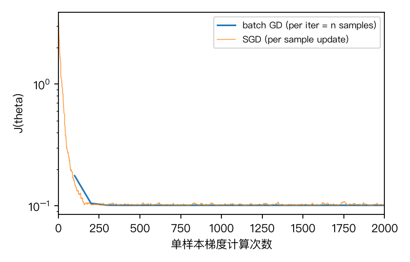
三种方法结果一致。右图按“单样本梯度计算次数”（公平的成本口径）对比：批量 GD 平滑下降、SGD 带噪声但单步便宜——大数据集上 SGD 每步 而批量每步 。
讲义换思路：“Gradient descent gives one way of minimizing . Let’s discuss a second way of doing so, this time performing the minimization explicitly and without resorting to an iterative algorithm.”（不再迭代，显式最小化）。做法：“we will minimize by explicitly taking its derivatives with respect to the ’s, and setting them to zero.”（对 求导置零）。核心工具是矩阵微积分——把求和写成矩阵乘法，再对矩阵求导。
Step 1 (矩阵化; matrix form). 设计矩阵 第 行为 。讲义：“since … using the fact that for a vector , we have that ”：
Step 2 (求梯度; take gradient). 讲义用的两条恒等式：“ and for symmetric matrix ”（向量与二次型的梯度公式）：
Step 3 (置零; set to zero). “To minimize , we set its derivatives to zero, and obtain the normal equations: ”，闭式解
讲义脚注提醒可逆性：“If either the number of linearly independent examples is fewer than the number of features, or if the features are not linearly independent, then will not be invertible.”（样本数不足或特征线性相关时不可逆）——此时用伪逆 ，给出最小范数解（见 0.3 节）。
手算验证（三个样本：）：
拟合直线 ，残差平方和 ，即 。
把正规方程想象成“解方程组找平衡点”： 的含义是——在最优直线上，特征与残差正交（）。几何直觉：残差向量垂直于 的列空间；最小二乘就是把 正交投影到列空间，投影系数就是 。房价数据（面积 + 卧室数）正规方程一步得 ，与梯度下降 3000 步结果完全一致。
English: at the optimum the residuals are orthogonal to the features (): least squares projects onto the column space of , and the projection coefficients are exactly .
import numpy as np
X = np.array([[1.0, 1], [1, 2], [1, 3]]) # 第 0 列是 x0 = 1 (column 0 is the intercept x0 = 1)
y = np.array([2.0, 3, 5])
theta = np.linalg.solve(X.T @ X, X.T @ y)
print("theta:", theta.round(4))
print("J* :", ((X @ theta - y) ** 2).sum() / 2)theta: [0.3333 1.5 ] J* : 0.08333333333333344
讲义开门见山：“When faced with a regression problem, why might linear regression, and specifically why might the least-squares cost function , be a reasonable choice?”（最小二乘凭什么合理？）。答案：假设 、噪声 “distributed IID (independently and identically distributed) according to a Gaussian distribution”（独立同分布高斯），再做最大似然——“maximizing gives the same answer as minimizing [the sum of squared errors], which we recognize to be , our original least-squares cost function.”平方损失由噪声假设自动推出。这是“分布假设 损失函数”主链的第一环。
Step 1 (模型与似然; model & likelihood). 讲义假设 ，等价于条件分布
独立假设下 “this can also be written ”（似然函数 likelihood = 参数的函数）。讲义的原则句：“The principal of maximum likelihood says that we should choose so as to make the data as high probability as possible.”（principal 为讲义原文如此，应作 principle：最大似然 = 让数据出现概率最大）。
Step 2 (取对数; take log). “Instead of maximizing , we can also maximize any strictly increasing function of . In particular, the derivations will be a bit simpler if we instead maximize the log likelihood ”：
第一项与 无关、 不改变 argmax，故 ——正是平方损失（差常数因子 ）。
Step 3 ( 的角色; role of ). 讲义：“our final choice of did not depend on what was , and indeed we’d have arrived at the same result even if were unknown.”（ 与 无关——第 3 章可直接取 ）。顺带复习 MLE 闭式解：对 ，，（有偏，除 才无偏）。
房价预测的图景：对每套房子，我们认为真实价 = 直线预测值 + 一个“钟形随机扰动”。一条候选直线给全体 套房一个联合概率（各扰动密度相乘）。最像这批数据的直线 = 让所有扰动都落在钟形中心附近的直线 = 最小化扰动平方和的直线。若扰动是重尾分布（如拉普拉斯），同样的推导会给出绝对值损失；若 用伯努利，就得到下一章的逻辑回归——损失函数不是天定的，是噪声假设定的。
English: a candidate line assigns every house a bell-shaped error; the most plausible line puts all errors near the center of the bell — equivalently, the least-squares line. Change the noise model (say Laplace) and the loss changes with it.
import numpy as np
rng = np.random.default_rng(5)
x = rng.normal(3.0, 2.0, size=2000) # 真实 mu=3, sigma^2=4 (true mu=3, sigma^2=4)
mu = x.mean() # MLE 闭式解
sig2 = ((x - mu) ** 2).mean()
print("mu =", round(mu, 3), " sig2 =", round(sig2, 3))mu = 3.048 sig2 = 3.849
普通线性回归欠拟合弯曲数据；盲目加特征（如 5 阶多项式）又 “overfitting”（过拟合）。局部加权回归 locally weighted linear regression 的流程（讲义原文两步）：“Fit to minimize ; output .”（每个查询点 都用带权平方误差重新拟合一次 ）。权重核与带宽：
讲义提醒：“while the formula for the weights takes a form that is cosmetically similar to the density of a Gaussian distribution, the ‘s do not directly have anything to do with Gaussians, and in particular the are not random variables, normally distributed or otherwise.“（形似高斯密度，实与高斯无关）；”if is small, then is close to 1; and if is large, then is small“（近点主导拟合、远点几乎忽略）； “is called the bandwidth parameter”（带宽），”controls how quickly the weight of a training example falls off with distance“。地位：”Locally weighted linear regression is the first example we’re seeing of a non-parametric algorithm”——“the amount of stuff we need to keep in order to represent the hypothesis grows linearly with the size of the training set.”（非参数：要保留的东西随训练集线性增长）
Step 1 (加权闭式解; weighted closed form). ，目标 （ 为设计矩阵，1 维情形即列 ）。梯度 ，令其为零：
推导与 1.2 完全同构，只是处处多插一个对角权重。远离点权重 ，几乎不参与；近点权重 ，主导拟合。
Step 2 ( 的角色; role of ). 小 权重集中、曲线逐点贴数据（低偏差高方差）； 大 权重摊平、退化为全局线性（高偏差低方差）——偏差-方差权衡的第一次登场（第 8 章正式化）。
用 噪声的 60 个点对比三个 （见下图）： 时曲线逐点贴着数据、把噪声也学了进去； 时几乎是一条全局直线，把弯曲完全抹平； 介于两者之间。注意每个查询点都要解一次 —— 大时代价高。
English: small hugs every data point (variance up), large collapses to a global line (bias up) — the bias-variance tradeoff in its simplest costume. Each query point re-fits its own weighted regression.
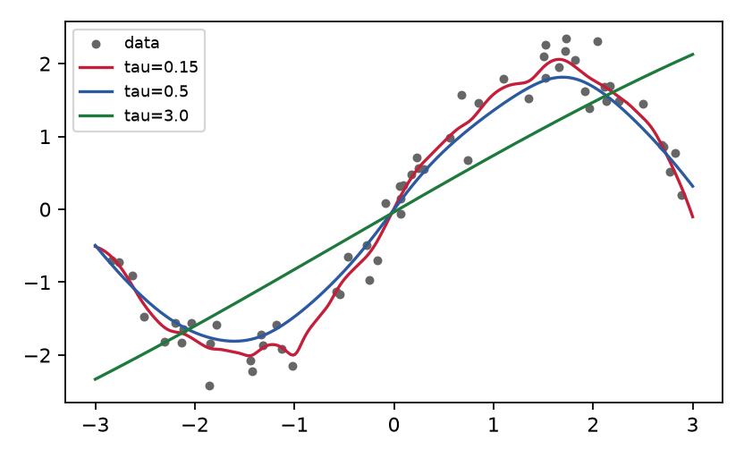
import numpy as np
rng = np.random.default_rng(1)
x = np.sort(rng.uniform(-3, 3, 60))
y = np.sin(x) * 2 + rng.normal(scale=0.3, size=60)
def lwr_predict(x0, tau):
w = np.exp(-(x - x0) ** 2 / (2 * tau ** 2))
W = np.diag(w)
Z = np.column_stack([np.ones_like(x), x])
theta = np.linalg.solve(Z.T @ W @ Z + 1e-8 * np.eye(2), Z.T @ W @ y)
return theta[0] + theta[1] * x0
for x0 in [-2.0, 0.0, 1.5]:
print(f"x0={x0:+.1f} tau=0.5 -> {lwr_predict(x0, 0.5):+.3f}")x0=-2.0 tau=0.5 -> -1.691 x0=+0.0 tau=0.5 -> +0.001 x0=+1.5 tau=0.5 -> +1.762
分类任务 。直接套线性回归不行——讲义：“it is easy to construct examples where this method performs very poorly. Intuitively, it also doesn’t make sense for to take values larger than 1 or smaller than 0 when we know that .”（输出可能超出 ）。改假设 ，“this can be written more compactly as ”，其中 就是 “the logistic function or the sigmoid function”：
决策规则：。MLE 给出对数似然
（训练时最小化其负数，即交叉熵损失 cross-entropy loss；讲义 Remark 2.1.1 称之为 logistic loss，并注 “Oftentimes or is called the logit”）。没有闭式解，用梯度上升 / 牛顿法迭代。
Step 1 (引擎恒等式; the engine identity). “here’s a useful property of the derivative of the sigmoid function, which we write as ”——一切后续推导的引擎：
Step 2 (梯度; gradient). 讲义的三行消去（“we used the fact that ”）：
更新 ——讲义提醒 “(Note the positive rather than negative sign in the update formula, since we’re maximizing, rather than minimizing, a function now.)”（梯度上升取正号）。讲义惊叹：“If we compare this to the LMS update rule, we see that it looks identical; but this is not the same algorithm… Is this coincidence, or is there a deeper reason behind this? We’ll answer this when we get to GLM models.”（更新规则同形但算法不同——第 3 章 GLM 揭晓）。
Step 3 (凸性; convexity). 的 Hessian 为 ，，故 凹、负对数似然凸——GD 收敛到全局最优。但若数据线性可分， 的最大值在 处（把间隔推到无穷大），MLE 不存在有限解，数值上表现为 无限增长 / 牛顿法发散。补救：加 正则（第 9 章）或提前停止。
Step 4 (为什么不能用平方损失; why not squared loss). 平方损失对 是非凸的，且在饱和区 使梯度消失，错得离谱的样本反而几乎没有梯度；交叉熵在 时对错误预测给出无界大梯度。牛顿法见本章末。
sigmoid 的“概率翻译表”：（八成是 1）；（五五开）；。下面代码的二维数据上，学到的边界是一条斜线，颜色越红表示 越高。训练准确率 87.5%——两类数据本身有重叠，最优解就该“认错”那 12.5%，这正是 MLE 的诚实之处。
English: the sigmoid is a probability translator: reads as “88% confident”, as a coin flip, as “12%”. With overlapping classes the MLE honestly concedes the ambiguous 12.5%.
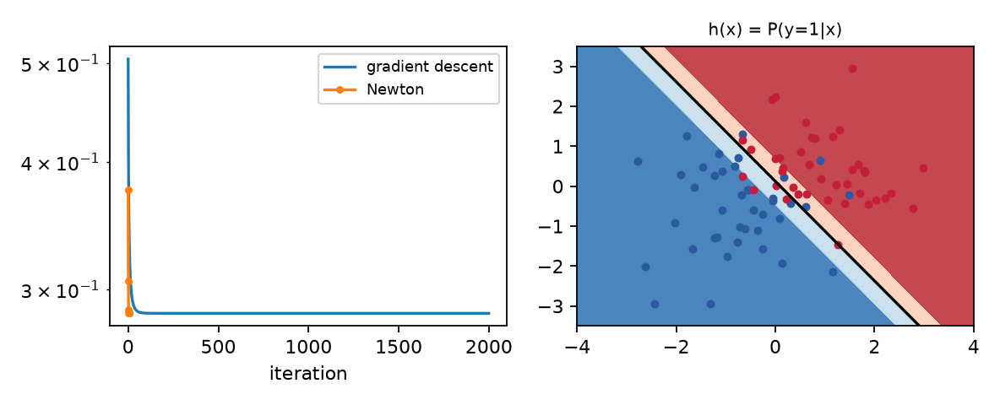
import numpy as np
rng = np.random.default_rng(2)
n = 80
X0 = rng.normal(loc=[-0.9, -0.5], scale=1.0, size=(n // 2, 2))
X1 = rng.normal(loc=[0.9, 0.5], scale=1.0, size=(n // 2, 2))
Xr = np.vstack([X0, X1])
X = np.column_stack([np.ones(n), Xr])
y = np.concatenate([np.zeros(n // 2), np.ones(n // 2)])
def sigmoid(z):
return 1.0 / (1.0 + np.exp(-np.clip(z, -30, 30))) # 防溢出 (clip to avoid overflow)
def logloss(X, y, th):
h = sigmoid(X @ th)
return -np.mean(y * np.log(h + 1e-12) + (1 - y) * np.log(1 - h + 1e-12))
def logreg_gd(X, y, alpha=1.0, iters=2000):
theta = np.zeros(X.shape[1])
for _ in range(iters):
h = sigmoid(X @ theta)
theta -= alpha * X.T @ (h - y) / len(y) # 损失梯度 X^T(h-y)/n (gradient of the loss)
return theta
def logreg_newton(X, y, iters=8):
theta = np.zeros(X.shape[1])
for _ in range(iters):
h = sigmoid(X @ theta)
g = X.T @ (h - y) / len(y)
D = h * (1 - h)
H = X.T @ (X * D[:, None]) / len(y) + 1e-8 * np.eye(X.shape[1])
step = np.linalg.solve(H, g)
t = 1.0 # 回溯线搜索防过冲 (backtracking line search)
while t > 1e-4 and logloss(X, y, theta - t * step) > logloss(X, y, theta):
t *= 0.5
theta -= t * step
return theta
th_g = logreg_gd(X, y)
th_n = logreg_newton(X, y)
print("GD :", th_g.round(3), "loss", f"{logloss(X, y, th_g):.4f}")
print("Newton:", th_n.round(3), "loss", f"{logloss(X, y, th_n):.4f}")
print("train acc:", np.mean((X @ th_g > 0) == y))GD : [-0.231 2.359 1.893] loss 0.2843 Newton: [-0.231 2.359 1.893] loss 0.2843 train acc: 0.875
np.clip 防溢出、1e-12 防 log(0)。讲义的切入点：“Consider modifying the logistic regression method to ‘force’ it to output values that are either 0 or 1 or exactly.”（把 logistic 回归“逼”成只输出 0/1——or exactly 为讲义原文如此，语序有误）。做法：换阈值函数 ，“if we use the update rule , then we have the perceptron learning algorithn.”（algorithn 为讲义原文如此，拼写笔误）。历史地位：“In the 1960s, this ‘perceptron’ was argued to be a rough model for how individual neurons in the brain work.”（1960 年代被当作单个神经元的大致模型）。标签习惯改用 ，预测 ，更新
预测对了 ，不动；错了 ，把 往该样本的方向拉一把。讲义警告：“it is actually a very different type of algorithm than logistic regression and least squares linear regression; in particular, it is difficult to endow the perceptron’s predictions with meaningful probabilistic interpretations, or derive the perceptron as a maximum likelihood estimation algorithm.”（与 logistic/最小二乘本质不同，难以赋予概率解释）
Step 1 (代理损失; surrogate loss). 感知机更新 = 对代理损失 做随机梯度下降：当 损失为 0、梯度为 0（不动）；当 梯度为 ，SGD 更新正是 。 是凸的但不可微（折点在 0），SGD 用次梯度照样工作。
Step 2 (收敛性; convergence). Novikoff 误分界（补充，讲义未含）：若数据被 以间隔 分开（）且 ，则从 出发的感知机至多犯错 次后必然停机。证明骨架：每次错误使 至少增加 、同时 至多增加 ，两边对 次错误比较即得 。含义：间隔越大、特征尺度越小，收敛越快——这也是第 6 章 SVM 追求最大间隔的动机预演。若数据不可分，感知机永不停止（我们实测过：4 个错误点让它循环 4000 次）。
本节代码的 80 个可分样本：第 1 个碰到的负类样本触发更新 ，之后沿随机顺序扫描，共 11 次错误后一轮扫完零错误、停止。间隔 越大的数据，犯错次数越少——把两团点挪远重跑，次数会明显下降。
English: updates happen only on mistakes: predict right, stand still; predict wrong, lean toward the sample. With well-separated data the mistake count shrinks as the margin grows.
import numpy as np
rng = np.random.default_rng(2)
Xs0 = rng.normal(loc=[-1.4, -0.7], scale=0.85, size=(40, 2))
Xs1 = rng.normal(loc=[1.4, 0.7], scale=0.85, size=(40, 2))
X = np.vstack([np.column_stack([np.ones(40), Xs0]),
np.column_stack([np.ones(40), Xs1])])
y = np.concatenate([-np.ones(40), np.ones(40)])
theta = np.zeros(X.shape[1]); k = 0
order = rng.permutation(len(y))
for _ in range(1000): # 扫多轮直到零错误 (sweep until zero mistakes)
mistakes = 0
for i in order:
if y[i] * (theta @ X[i]) <= 0: # 犯错才更新 (update only on mistakes)
theta += y[i] * X[i]
mistakes += 1; k += 1
if mistakes == 0:
break
print("mistake updates:", k, " theta:", theta.round(3))
print("training errors:", int(np.sum(np.sign(X @ theta) != y)))mistake updates: 11 theta: [-1. 2.958 2.086] training errors: 0
多分类。直接拿 当概率有讲义点出的两个毛病：“there are two issues with such a direct approach. First, is not necessarily within [0, 1]. Second, the summation of ’s is not necessarily 1.”（可能出界、总和不为 1）。于是 “we will use the softmax function to turn into a probability vector with nonnegative entries that sum up to 1”：
“The inputs to the softmax function, the vector here, are often called logits.”（输入称 logits）。损失取负对数似然——讲义命名：“It’s convenient to define the cross-entropy loss ”：
其中 是指示函数 indicator function（条件为真取 1，否则取 0）。softmax 名字的由来：它是 max 的“软化”——，指数放大差距、求和保概率。
Step 1 (梯度; gradient). 讲义：“By basic calculus, we can derive ”，向量化形式 “, where is the -th natural basis vector”（ 是模型概率， 是 one-hot 标签——第 7 章有用）。链式法则再乘 ：
推导要点：令 ，，用 对 分情况求导即可。更新规则与二元情形同样“误差 特征”。
Step 2 (数值稳定; numerical stability). 上溢是真实风险。恒等式 （对任意常数 ）——实现时取 先平移再指数，完全等价且绝不溢出。
Step 3 (可辨识性 identifiability). 给所有 加同一个常数向量 ，分子分母同乘 ，概率不变。所以参数有 维冗余，解是一条流形；GD 从零出发会自然停在流形上的一点。严格做法（统计学习惯用）是固定 只训 组。
Step 4 (与逻辑回归的关系; relation to logistic). 时 softmax 回归与逻辑回归给出相同的假设类（参数化冗余 维）。讲义脚注：“We choose our current naming convention because it’s consistent with the naming of most modern deep learning library such as PyTorch and Jax.”（cross-entropy 的命名与 PyTorch/JAX 一致）
三维玩具数据（三团高斯点）训练后：整体准确率 94%。看一个具体的输出：样本 属于第 0 类，模型给出的分布是 ——几乎笃定；但也存在被预测成 的第 0 类样本（6% 错误的来源）。训练后全数据集交叉熵 0.1599，接近“硬分类 + 少数大错误”的水平。
English: a 3-class toy hits 94% accuracy; confident samples read like [0.998, 0.000, 0.002] while borderline ones — softmax assigns them near-ties — explain the remaining 6%.
import numpy as np
rng = np.random.default_rng(3)
n, K = 300, 3
centers = np.array([[-1.5, 0.0], [1.5, 0.0], [0.0, 1.8]])
Xr = np.vstack([rng.normal(loc=c, scale=0.7, size=(n // K, 2))
for c in centers])
X = np.column_stack([np.ones(n), Xr])
y = np.repeat(np.arange(K), n // K)
Y = np.eye(K)[y] # one-hot 编码 (one-hot encoding)
def softmax_stable(Z):
Z = Z - Z.max(axis=1, keepdims=True) # 平移防溢出 (shift to avoid overflow)
E = np.exp(Z)
return E / E.sum(axis=1, keepdims=True)
theta = np.zeros((X.shape[1], K))
for _ in range(2000):
P = softmax_stable(X @ theta)
theta += 0.5 * X.T @ (Y - P) / n # 梯度 (gradient): X^T (1{y=k} - p_k)
P = softmax_stable(X @ theta)
print("theta shape:", theta.shape)
print("train acc:", np.mean(P.argmax(1) == y))
ok = int(np.argmax(P.argmax(1) == y))
print(f"sample {ok}: P = {P[ok].round(3)}, y = {y[ok]}")
print("cross entropy:",
-np.mean(np.log(P[np.arange(n), y])).round(4))theta shape: (3, 3) train acc: 0.94 sample 1: P = [0.998 0. 0.002], y = 0 cross entropy: 0.1599
讲义从求零点起步：“Newton’s method performs the following update: ”，直觉是 “approximating the function via a linear function that is tangent to at the current guess , solving for where that linear function equals to zero”（用切线近似、跳到切线的零点）。要最大化 就令 。推广到向量——“also called the Newton-Raphson method”：
其中 “ is an d-by-d matrix…called the Hessian”（原文如此 an 应为 a；Hessian 的 元是二阶偏导 ）。评价：“Newton’s method typically enjoys faster convergence than (batch) gradient descent, and requires many fewer iterations to get very close to the minimum. One iteration of Newton’s can, however, be more expensive than one iteration of gradient descent, since it requires finding and inverting an d-by-d Hessian; but so long as d is not too large, it is usually much faster overall.”（迭代次数极少，但每步要解 方程组； 不大时总体更快）
Step 1 (来源; derivation). 在 处二阶泰勒展开
右端是 的凸二次函数，对 求导置零：，即 。若 本身就是二次函数，一步到达精确极小（正规方程即此特例）。一般函数则迭代。
Step 2 (逻辑回归的 Hessian; logistic Hessian). 对 再求导，用 ：
正定 下降方向保证。实践中加阻尼：步长 用回溯线搜索确定（我们的实现：损失不降就减半），或 Hessian 加 。
Step 3 (与统计的联系; statistical connection). 在 MLE 处 恰为 Fisher 信息矩阵，讲义：“When Newton’s method is applied to maximize the logistic regression log likelihood function , the resulting method is also called Fisher scoring.”；最大似然的渐近方差 也由它给出。
上面逻辑回归的同一份数据：梯度下降 2000 步把损失从 0.693 降到 0.2843；牛顿法8 步到达同一个点（见第 2.1 节左图：橙色曲线几个点就沉底，蓝色要 2000 步）。代价对比：牛顿每步解 方程组；若 （词向量规模），每步 不可行——二阶法赢次数、输单步成本。神经网络的损失非凸、Hessian 巨大且病态，所以第 7 章回到一阶 SGD。
English: gradient descent needs 2000 steps to reach loss 0.2843; Newton gets there in 8 by jumping to the minimum of a local quadratic approximation — fewer iterations, pricier steps.
见 2.1 代码中的 logreg_newton：组装 、，np.linalg.solve(H, g) 解方向，回溯线搜索定步长。8 步收敛。
讲义定义：“We say that a class of distributions is in the exponential family if it can be written in the form ”：
角色全由讲义命名：“Here, is called the natural parameter (also called the canonical parameter) of the distribution; is the sufficient statistic…; and is the log partition function.”（自然参数 / 充分统计量 / 对数配分函数），且 “The quantity essentially plays the role of a normalization constant”（归一化常数）。“A fixed choice of , and defines a family (or set) of distributions that is parameterized by .”（固定三者、转动 得一族分布）。成员清单（讲义原话）：multinomial、“the Poisson (for modelling count-data)”、“the gamma and the exponential (for modelling continuous, non-negative random variables, such as time-intervals)”、“the beta and the Dirichlet (for distributions over probabilities)”……
Step 1 (Bernoulli 指数族; full derivation)：
对照定义逐项认领：，，，。讲义：“Interestingly, if we invert this definition for by solving for in terms of , we obtain . This is the familiar sigmoid function!”（sigmoid 由此凭空出现，不是人为规定）
Step 2 (Gaussian; ). 讲义：“the value of had no effect on our final choice of …To simplify the derivation below, let’s set ”：
Step 3 (Poisson; supplement)：
Step 4 (均值/方差恒等式; mean & variance identities). 对归一化条件 两边对 求导，积分号下求导（ 不依赖 ）：
两个恒等式立刻给出：Bernoulli 均值 ✓；Poisson 均值与方差都是 ✓（计数数据的均值 方差是 Poisson 的指纹）。
“充分统计量”名字的含义：告诉你 次 Bernoulli 试验的全部原始序列，与只告诉你成功次数 ，对推断 而言信息完全一样——数据可以无损压缩成一个数。数值验证均值恒等式（下面代码）：令 （），抽 10 万个 Poisson 样本，经验均值 2.503 vs ； 时 6.998 vs 7.0。理论值与模拟吻合到第三位小数。
English: knowing the full sequence of Bernoulli trials and knowing only the success count carry exactly the same information about — the data compresses losslessly into one number. Simulation matches to three decimals.
import numpy as np
rng = np.random.default_rng(6)
for lam in [2.5, 7.0]:
y = rng.poisson(lam, size=100_000)
eta = np.log(lam) # Poisson 的自然参数 (natural parameter of Poisson)
print("lam =", lam, " 经验均值:", round(y.mean(), 3),
" a'(eta) = exp(eta):", round(np.exp(eta), 3))lam = 2.5 经验均值: 2.503 a'(eta) = exp(eta): 2.5 lam = 7.0 经验均值: 6.998 a'(eta) = exp(eta): 7.0
讲义的动机例子：“Suppose you would like to build a model to estimate the number of customers arriving in your store…in any given hour, based on certain features such as store promotions, recent advertising, weather, day-of-week, etc. We know that the Poisson distribution usually gives a good model for numbers of visitors.”（商店每小时到客数：Poisson 是天然模型）。构造 GLM 的三条假设（讲义原文）：1. ；2. “Given , our goal is to predict the expected value of given ”，即 ；3. “The natural parameter and the inputs are related linearly: ”（典型链接 canonical link）。讲义评注：“The third of these assumptions might seem the least well justified of the above, and it might be better thought of as a ‘design choice’ in our recipe for designing GLMs, rather than as an assumption per se.”（第三条更像设计选择而非假设）。三条一按，假设函数、训练目标与梯度全部自动确定。
OLS 是 GLM：Gaussian 的 ，照三条假设推出 ——回到线性回归。 逻辑回归是 GLM：Bernoulli 的均值是 ，故 。讲义点题：“If you are previously wondering how we came up with the form of the logistic function , this gives one answer: Once we assume that conditioned on is Bernoulli, it arises as a consequence of the definition of GLMs and exponential family distributions.”（sigmoid 不是拍脑袋，是 GLM 定义的必然） 术语：均值函数 称典型响应函数（“the canonical response function”；Gaussian: 恒等；Bernoulli: sigmoid），其逆 称典型链接函数（“the canonical link function”）。
泊松回归（GLM 配方实战）：由 反解 ，即
对数似然（对每个样本，用指数族形式直接写）：
梯度：——又是“误差 特征”！梯度上升 即可训练。凹性： 是 的凹函数（指数族的普遍性质）。
场景：预测商店每小时到客数 （计数型，Poisson 天然合适），特征 = 是否促销、是否周末。真实规律 。用 条模拟数据、梯度上升 4000 步训练：恢复出 ，几乎打平真值 。“促销 周末”组的预测均值 12.1 vs 实际 12.08；同组样本均值 12.08 vs 方差 12.54， 印证 Poisson 指纹。想建模计数、比例、正值数据？查指数族清单 + 走 GLM 配方即可，不用重新发明算法。
English: store arrivals are counts, so Poisson fits naturally: the GLM recipe turns into , and gradient ascent recovers the true coefficients almost exactly.
import numpy as np
rng = np.random.default_rng(4)
n = 400
X = np.column_stack([
np.ones(n),
rng.integers(0, 2, size=n).astype(float), # 促销 (promotion)
rng.integers(0, 2, size=n).astype(float), # 周末 (weekend)
])
lam_true = np.exp(1.4 + 0.5 * X[:, 1] + 0.6 * X[:, 2])
y = rng.poisson(lam_true)
theta = np.zeros(X.shape[1])
for _ in range(4000): # 梯度上升 (gradient ascent): X^T (y - lambda)
lam = np.exp(X @ theta)
theta += 0.05 * X.T @ (y - lam) / n
lam_hat = np.exp(X @ theta)
print("theta:", theta.round(3), "(true: [1.4, 0.5, 0.6])")
m = (X[:, 1] == 1) & (X[:, 2] == 1)
print("pred mean (promo&wk):", round(lam_hat[m].mean(), 2),
" empirical y:", round(y[m].mean(), 2))
print("E == Var check :", round(y[m].mean(), 2),
round(y[m].var(), 2))theta: [1.422 0.49 0.582] (true: [1.4, 0.5, 0.6]) pred mean (promo&wk): 12.1 empirical y: 12.08 E == Var check : 12.08 12.54
讲义开篇定义：“Algorithms that try to learn directly (such as logistic regression)… are called discriminative learning algorithms. Here, we’ll talk about algorithms that instead try to model (and ). These algorithms are called generative learning algorithms.”（判别式直接学 ；生成式反过来建模 与 ）。直觉来自大象 vs 狗：“First, looking at elephants, we can build a model of what elephants look like. Then, looking at dogs, we can build a separate model of what dogs look like.”（先建“大象长什么样”“狗长什么样”两个模型，新样本更像谁就归谁）。 连续时的 GDA 模型：
共享协方差是刻意设计：“Note that while there’re two different mean vectors and , this model is usually applied using only one covariance matrix .”（两类均值不同、协方差共用——椭圆云团形状一致）。拟合后按贝叶斯规则反推后验；讲义提醒：“if were calculating in order to make a prediction, then we don’t actually need to calculate the denominator”（if were 为原文如此，应作 if we’re：预测只需比分子 的大小）：
参数的 MLE 有闭式解（数样本均值/协方差即可）。
Step 1 (模型与似然; model & likelihood). 多元高斯密度：，协方差必为半正定（第 0.3 节）。讲义：“we can then use the Gaussian Discriminant Analysis (GDA) model, which models using a multivariate normal distribution.”（用多元正态建类条件分布）。联合对数似然按生成链分解：
Step 2 (MLE 闭式解; closed-form MLE). 讲义：“By maximizing with respect to the parameters, we find the maximum likelihood estimate of the parameters (see problem set 1) to be”——逐项最大化（每项只含部分参数）：
全是数样本频率/均值/协方差，无需迭代优化。 Step 3 (边界是线性的; linear boundary). 共享 时，后验分子分母同乘 ，二次项相消，只剩 的一次项：
其中 。讲义原文：“If we view the quantity as a function of , we’ll find that it can be expressed in the form … This is exactly the form that logistic regression—a discriminative algorithm—used to model .”（GDA 的后验恰好是逻辑回归的函数形式，但 由生成参数算出、而非直接优化）。 Step 4 (GDA vs 逻辑回归; GDA vs logistic). 讲义：“The converse, however, is not true; i.e., being a logistic function does not imply is multivariate gaussian. This shows that GDA makes stronger modeling assumptions about the data than does logistic regression.”（逆命题不成立——GDA 假设更强）。后果分两头：“when is indeed gaussian (with shared ), then GDA is asymptotically efficient.”（渐近高效：大样本下没有严格更优的算法，小样本通常也更好）；“logistic regression… is also more robust and less sensitive to incorrect modeling assumptions.”（假设不成立时更稳健）。结论句：“in practice logistic regression is used more often than GDA.”
下面代码的两团椭圆数据（ 横向散得开、纵向窄； 相同形状右移）：GDA 估计出 、、 对角 、（先验 = 样本占比）。训练准确率 96.7%。图中黑色实线是 的边界，灰虚线是 0.25/0.75 等概率线——等概率线平行，因为共享协方差。讲义对本节的插图正是这么描述的：“the two Gaussians have contours that are the same shape and orientation, since they share a covariance matrix , but they have different means and .”（两个等值线椭圆同形状同朝向、只是中心平移）。若两类各用自己的 ，边界会弯成二次曲线。
English: two elliptical clouds of identical shape share one covariance — the equal-probability contours stay parallel and the 0.5 boundary is a straight line; give each class its own and the boundary bends into a conic.
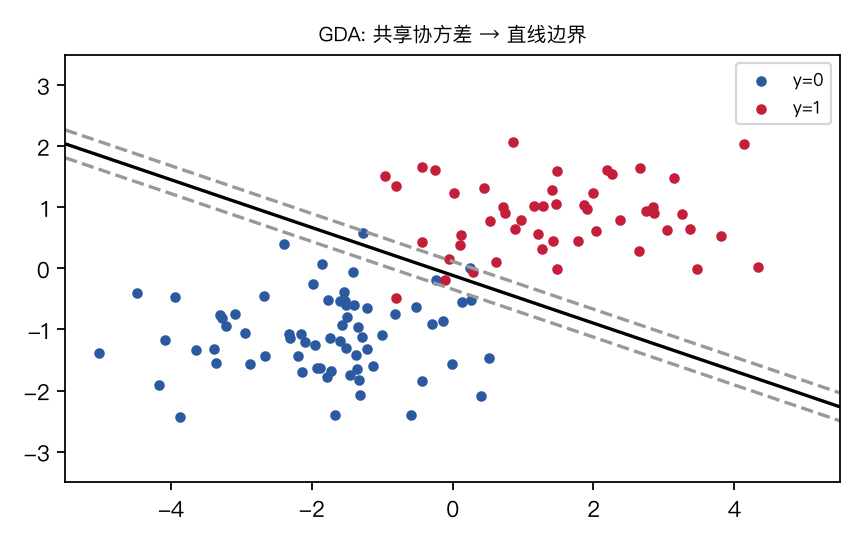
import numpy as np
rng = np.random.default_rng(7)
n0, n1 = 70, 50
X0 = rng.normal(loc=[-1.5, -1.0], scale=[1.4, 0.7], size=(n0, 2))
X1 = rng.normal(loc=[1.5, 1.0], scale=[1.4, 0.7], size=(n1, 2))
X = np.vstack([X0, X1])
y = np.concatenate([np.zeros(n0, int), np.ones(n1, int)])
phi = y.mean()
mu0 = X[y == 0].mean(0)
mu1 = X[y == 1].mean(0)
Sc = X - np.where(y[:, None] == 0, mu0, mu1)
Sigma = Sc.T @ Sc / len(y) # 共享协方差的 MLE (shared covariance MLE)
def gda_posterior(Xt):
Si = np.linalg.inv(Sigma)
q = lambda m: -0.5 * np.einsum('ij,jk,ik->i', Xt - m, Si, Xt - m)
logp0 = np.log(1 - phi) + q(mu0) - 0.5 * np.log(np.linalg.det(Sigma))
logp1 = np.log(phi) + q(mu1) - 0.5 * np.log(np.linalg.det(Sigma))
return 1 / (1 + np.exp(-(logp1 - logp0)))
print("phi:", round(phi, 3), " mu0:", mu0.round(3), " mu1:", mu1.round(3))
print("Sigma diag:", np.diag(Sigma).round(3))
print("GDA train acc:",
np.mean((gda_posterior(X) > 0.5).astype(int) == y))phi: 0.417 mu0: [-1.819 -1.075] mu1: [1.468 0.845] Sigma diag: [1.616 0.379] GDA train acc: 0.9666666666666667
文本分类（垃圾邮件）：邮件是词的集合，（ 个词的词典，2 万维以上）。参数爆炸：词典 5 万词时若直接建模 ，讲义警告“we’d end up with a -dimensional parameter vector. This is clearly too many parameters.”（参数向量 维，显然太多）。出路：“To model , we will therefore make a very strong assumption. We will assume that the ’s are conditionally independent given .”（朴素假设 naive Bayes assumption：给定类别 ，各词的出现相互条件独立）。讲义用 buy/price 具象化：“if I tell you (that a particular piece of email is spam), then knowledge of (knowledge of whether ‘buy’ appears in the message) will have no effect on your beliefs about the value of (whether ‘price’ appears).”（知道“buy”出现，不改变你对“price”是否出现的信念）。假设形式化：
讲义自评：“We note that even though the Naive Bayes assumption is an extremely strong assumptions, the resulting algorithm works well on many problems.”（assumptions 为原文如此，应作 assumption：假设极强，效果却意外地好）。联合似然按类别分堆数词频即可；预测用贝叶斯规则取对数避免连乘下溢。
Step 1 (参数与 MLE; parameters & MLE). ，。MLE 就是数频率，讲义强调参数的直观含义：“The parameters have a very natural interpretation. For instance, is just the fraction of the spam () emails in which word does appear.”（ = 含词 的垃圾邮件占比）：
Step 2 (预测; prediction). 讲义：“and pick whichever class has the higher posterior probability”（取后验更大的类）。实际在 log 空间计算避免连乘下溢：
Step 3 (Laplace 平滑; Laplace smoothing). 讲义的 NeurIPS 场景：第一篇论文投稿后，邮件里开始出现 “neurips”——“because it has never seen ‘neurips’ before in either spam or non-spam training examples, it thinks the probability of seeing it in either type of email is zero.”（训练集没见过 MLE 给 0）。恶果是 0/0：“Hence, our algorithm obtains , and doesn’t know how to make a prediction.”（后验无法计算）。原则句：“it is statistically a bad idea to estimate the probability of some event to be zero just because you haven’t seen it before in your finite training set.”（有限训练集没见过，不代表概率为零）。补救——把每个计数加 1：
其中 是类别 的邮件中词 的总出现次数， 是类别 的全部词数。理论背书：“Under certain (arguably quite strong) conditions, it can be shown that the Laplace smoothing actually gives the optimal estimator of the ’s.”（特定条件下平滑估计就是最优估计）。 Step 4 (多项事件模型; multinomial event model). 讲义把上述表示称为 “the Bernoulli event model (or sometimes multi-variate Bernoulli event model)”（伯努利事件模型：对词典逐词决定收不收录），并改用位置表示：“We let denote the identity of the -th word in the email… An email of words is now represented by a vector of length ; note that can vary for different documents.”（ = 第 个词的词典编号，邮件长度可变）。此时 是多项分布，且“If we were to apply Laplace smoothing (which is needed in practice for good performance)… we add 1 to the numerators and to the denominators”（平滑在实践中必需）。 数学补充：贝叶斯视角下，+1 平滑等价于对每个 放均匀先验 后的后验均值（Beta-Bernoulli 共轭）——第 0.1 节的 MLE 在小样本上过拟合，平滑是首个“先验救场”实例（第 9 章 MAP 的预热）。讲义还提醒连续特征可离散化后走 NB：“When the original, continuous-valued attributes are not well-modeled by a multivariate normal distribution, discretizing the features and using Naive Bayes (instead of GDA) will often result in a better classifier.”（非高斯数据离散化 + NB 常优于 GDA）。
6 封迷你邮件（词典 = buy/click/deal/report/meeting，3 封垃圾 3 封正常）训练出的词概率：垃圾邮件里 ，正常邮件里 ——“report/meeting” 强烈指向正常，“buy/click” 指向垃圾。新邮件「buy buy click」：，判定垃圾。另一封只含 “meeting”（垃圾类从未见过该词）：若无平滑，垃圾类概率被压成 0、输出“正常”过于武断；加 1 平滑后 ，温和地倾向正常——平滑把“从未见过”从“绝不可能”改成“很少见”。
English: five-word vocabulary, six mini emails — ‘buy/click’ lean spam, ‘report/meeting’ lean ham. A word the model has never seen would drive one class’s likelihood to exactly zero without smoothing; Laplace turns ‘impossible’ into merely ‘rare’.
import numpy as np
vocab = ["buy", "click", "deal", "report", "meeting"]
docs = [
({"buy": 2, "click": 1, "deal": 1, "report": 0, "meeting": 0}, 1),
({"buy": 1, "click": 2, "deal": 1, "report": 0, "meeting": 0}, 1),
({"buy": 0, "click": 1, "deal": 2, "report": 0, "meeting": 1}, 1),
({"buy": 0, "click": 0, "deal": 0, "report": 2, "meeting": 3}, 0),
({"buy": 0, "click": 0, "deal": 1, "report": 3, "meeting": 2}, 0),
({"buy": 0, "click": 1, "deal": 0, "report": 2, "meeting": 2}, 0),
]
V = len(vocab)
spam = np.array([[d[k] for k in vocab]
for d, lab in docs if lab == 1], dtype=float)
ham = np.array([[d[k] for k in vocab]
for d, lab in docs if lab == 0], dtype=float)
ps = sum(lab for _, lab in docs) / len(docs)
laplace = lambda counts: (counts.sum(0) + 1) / (counts.sum() + V)
theta_s, theta_h = laplace(spam), laplace(ham)
print("theta_spam:", dict(zip(vocab, theta_s.round(3).tolist())))
print("theta_ham :", dict(zip(vocab, theta_h.round(3).tolist())))
def p_spam(x):
ls = np.log(ps) + (x * np.log(theta_s)).sum()
lh = np.log(1 - ps) + (x * np.log(theta_h)).sum()
e = np.exp(ls - lh)
return e / (1 + e)
print("email [buy,buy,click] -> P(spam) =", round(p_spam(np.array(
[2, 1, 0, 0, 0.0])), 4))
print("email [meeting] -> P(spam) =", round(p_spam(np.array(
[0, 0, 0, 0, 1.0])), 4))theta_spam: {'buy': 0.235, 'click': 0.294, 'deal': 0.294, 'report': 0.059, 'meeting': 0.118}
theta_ham : {'buy': 0.048, 'click': 0.095, 'deal': 0.095, 'report': 0.381, 'meeting': 0.381}
email [buy,buy,click] -> P(spam) = 0.9869
email [meeting] -> P(spam) = 0.236讲义动机：“What if the price can be more accurately represented as a non-linear function of ? In this case, we need a more expressive family of models than linear models.”（线性不够用怎么办）。做法：拟合三次函数 时，“a cubic function of the variable can be viewed as a linear function over the variables ”（三次函数 = 新变量 上的线性函数）。术语上讲义特别强调：“we will call the ‘original’ input value the input attributes of a problem (in this case, , the living area)… we will call those new quantities the features variables… We will call a feature map, which maps the attributes to the features.”（attributes = 原始输入，features = 映射后的新量， = 特征映射）。新空间的线性边界在原空间可以是任意弯曲的。
二维二次特征映射 ：取 得 。在新空间，决策边界 展开到原空间是 ——二次曲线（椭圆/双曲线）。若边界在原空间是圆 ，即新空间平面 ：圆是高维空间里的直线。维度 ， 时已 5151 维——特征爆炸是 5.3 节要解决的问题。
English: the quadratic map turns conic boundaries in the original plane into hyperplanes in feature space — a circle is the flat plane ; the price is dimensions for .
讲义一句话：“We can replace all the occurrences of in the algorithm above by .”（把算法里每个 换成 ，完事）。于是批量梯度下降 、随机版 ；正规方程 同理。没有任何新东西——代价是必须显式算高维 。
动机是维数灾难：把三次特征扩到全部 次单项式，“The dimension of the features is on the order of . This is a prohibitively long vector for computational purpose”（ 时每次更新要算 维向量，比普通 LMS 慢 倍）。讲义指出转机：“It may appear at first that such runtime per update and memory usage are inevitable… However, we will introduce the kernel trick with which we will not need to store explicitly, and the runtime can be significantly improved.”（核技巧让 不必显式存储）。关键观察：梯度下降中 一直是样本特征的线性组合——“The main observation is that at any time, can be represented as a linear combination of the vectors ”于是整个算法只依赖特征向量之间的内积。定义核 kernel：
讲义定义：“We define the Kernel corresponding to the feature map as a function that maps satisfying…”（核 = 特征向量的内积函数）。对三次映射，—— 运算替代 构造。
Step 1 (对偶表示; dual representation). 讲义归纳法：“Assume at some point, can be represented as … we claim that in the next round, is still a linear combination of ”（初始 成立；每步只加 的倍数，归纳保持）。“our general strategy is to implicitly represent the -dimensional vector by a set of coefficients ”（用 个系数隐式表示 维 ）。系数更新：
Step 2 (内积的快算; fast inner products). 讲义点出“two important properties come to rescue”：“1. We can pre-compute the pairwise inner products… before the loop starts. 2… computing can be efficient and does not necessarily require computing explicitly.”（先批量预算；更妙的是根本不用显式构造 ）。以三次映射为例，：“we can first compute with time and then take another constant number of operations”（先算 的内积，再加常数次运算）。 Step 3 (核形式的算法; the kernelized algorithm). 代入核 后更新变为 ，向量式 ：“we can update the representation of the vector efficiently with time per update”（每步 ，与特征维数无关）。预测同样只见核值：
讲义总结：“fundamentally all we need to know about the feature map is encapsulated in the corresponding kernel function .”（特征映射的全部信息都封装在核里）。 Step 4 (超出讲义：表示定理; beyond the notes: representer theorem). 岭回归 对 求梯度置零：，解出 ——最优解必然是样本特征的线性组合。换到对偶空间：
代价只随样本数 变化，与 维度无关。
三张牌验证：① 恒等性——显式 与 逐点对比，最大差 （机器精度）；② 原始 对偶——多项式核岭回归，显式解 与对偶解 在同一点的预测完全一致（差 ）；③ RBF 核拟合正弦数据（下图）：带宽 时曲线逐点贴数据（过拟合边缘）， 时几乎一条直线（欠拟合）， 恰当。
English: three checks — explicit inner products equal to machine precision; primal and dual give identical predictions; and RBF kernel ridge regression swings from overfitting () to underfitting () as the bandwidth grows, with just right.
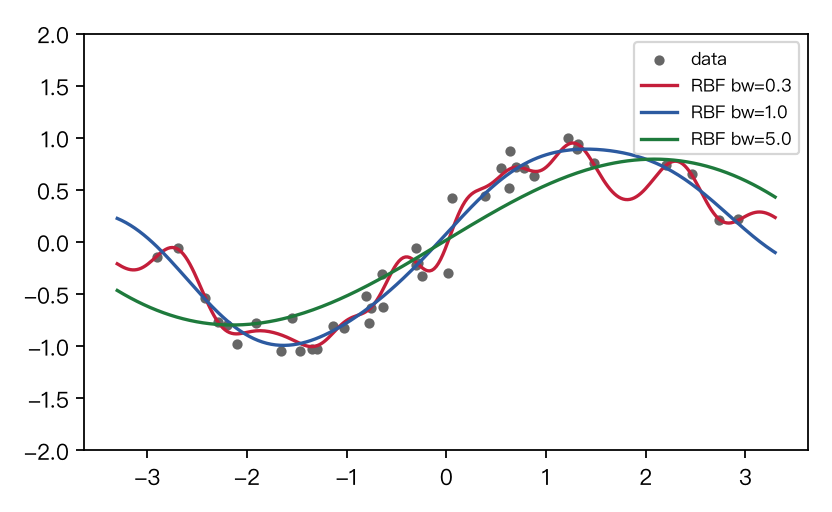
import numpy as np
rng = np.random.default_rng(8)
def phi(x):
x1, x2 = x
return np.array([x1 ** 2, np.sqrt(2) * x1 * x2, x2 ** 2])
# 直接算内积，不构造 phi (kernel avoids constructing φ)
def K_poly(x, z):
return (x @ z) ** 2
xs = [rng.normal(size=2) for _ in range(4)]
zs = [rng.normal(size=2) for _ in range(4)]
diffs = [abs(phi(x) @ phi(z) - K_poly(x, z)) for x, z in zip(xs, zs)]
print("explicit phi vs kernel max diff:", max(diffs))
def kernel_ridge(X, y, Kfn, lam=1.0):
n = len(y)
K = np.array([[Kfn(X[i], X[j]) for j in range(n)] for i in range(n)])
return np.linalg.solve(K + lam * np.eye(n), y)
def f_kernel(alpha, X, Kfn, x0):
return sum(a * Kfn(X[i], x0) for i, a in enumerate(alpha))
n = 40
X1d = np.sort(rng.uniform(-3, 3, n))
y1d = np.sin(X1d) + rng.normal(scale=0.15, size=n)
def K_rbf(x, z, bw=1.0):
return np.exp(-np.linalg.norm(np.atleast_1d(x) - np.atleast_1d(z)) ** 2
/ (2 * bw ** 2))
alpha = kernel_ridge(X1d, y1d, lambda a, b: K_rbf(a, b, 1.0), lam=0.01)
print("f(1.234) =", round(f_kernel(alpha, X1d,
lambda a, b: K_rbf(a, b, 1.0), 1.234), 3))explicit phi vs kernel max diff: 2.220446049250313e-16 f(1.234) = 0.882
不是任何函数都能当核。讲义的视角转变：“it would be tempted to define other kernel function and run the algorithm… we only need to ensure the existence of the feature map , but do not necessarily need to be able to explicitly write down.”（只需保证 存在，不必写得出）。核心问题：“What kinds of functions can correspond to some feature map ?”（哪些函数能当核？）。回答好它就能“completely change the interface of selecting feature maps to the interface of selecting kernel function ”（把“选特征映射”的接口换成“选核函数”）。
| 术语 | English | 含义 |
|---|---|---|
| 特征映射 | feature map | 把 映到高维的函数 ；非线性边界的来源 |
| 核函数 | kernel / kernel trick | 直接计算 的捷径函数 |
| 半正定 | positive semidefinite (PSD) | 核矩阵 ；合法核的判据 |
| 高斯核 / RBF | radial basis function (RBF) | 按距离衰减的核；带宽 控制局部性 |
| 核矩阵 | Gram matrix | 的两两核值矩阵；半正定 |
讲义定位：“SVMs are among the best (and many believe are indeed the best) ‘off-the-shelf’ supervised learning algorithms.”（公认最好的“开箱即用”监督算法之一）。直觉一从逻辑回归的“自信度”出发：“The larger is, the larger also is , and thus also the higher our degree of ‘confidence’ that the label is 1.”（ 越大越自信）——理想目标是“a very confident (and correct) set of classifications”。直觉二看距离：“if a point is far from the separating hyperplane, then we may be significantly more confident in our predictions.”（离边界越远越可信）。支持向量机 support vector machine (SVM) 把两种直觉统一成最大间隔 margin：把边界放在两类间隔的正中央，给未来的新样本留最大缓冲。这个偏好被形式化为一个凸二次规划，其对偶形式又天然接入核方法。
想象一条街道穿过两类点之间：逻辑回归只要求“不踩进任何一家的院子”，墙的位置随初始化漂移；SVM要把街道修得一样宽，墙落在正中间。讲义对 A/B/C 三点的比喻：“the point A is very far from the decision boundary… we’re much more confident about our prediction at A than at C.”（离边界越远越自信）。决定这条街道宽度的，是紧贴街道两侧的少数几个点——支持向量 support vectors，其余的点即使全删掉也不影响边界。稀疏性不是巧合，是对偶理论推导出的必然（6.5 互补松弛）。
English: logistic regression only asks ‘don’t step on anyone’s lawn’; the SVM builds the street equally wide with the wall in the middle. The width is decided by the few points hugging the street — the support vectors; delete every other point and the boundary does not move.
讲义先换记号：“From now, we’ll use … to denote the class labels.”（标签改用 ）；“This ‘w, b’ notation allows us to explicitly treat the intercept term separately from the other parameters.”（ 单独当截距，不再有 ）。决策函数 ：“our classifier will directly predict either 1 or (cf. the perceptron algorithm), without first going through the intermediate step of estimating ”（直接输出 ，不像逻辑回归先估概率）。函数间隔 functional margin：——“a large functional margin represents a confident and a correct prediction.”（大函数间隔 = 自信且正确）。但它可被任意放大：“by exploiting our freedom to scale and , we can make the functional margin arbitrarily large without really changing anything meaningful.”（缩放 预测不变、间隔翻倍——直接最大化 是病态问题）。几何间隔 geometric margin 是点到边界的真实欧氏距离 ，好处是“the geometric margin is invariant to rescaling of the parameters”——“we can impose an arbitrary scaling constraint on without changing anything important”（缩放自由度可拿来加约束，为固定 埋下伏笔）。
Step 1 (两级改写; two-stage reformulation). 天然目标 ，但讲义直言“the ‘’ constraint is a nasty (non-convex) one”（ 约束非凸）。第二版 又“we still don’t have any off-the-shelf software that can solve this form of an optimization problem”（目标非凸，同样没法直接求解）。 Step 2 (关键一步：固定函数间隔; fix the functional margin). “We will introduce the scaling constraint that the functional margin of with respect to the training set must be 1: .”（缩放不变性保证可设 ；最大化 等价于最小化 ）：
间隔宽度即 。讲义盖章：“The above is an optimization problem with a convex quadratic objective and only linear constraints. Its solution gives us the optimal margin classifier.”（凸二次目标 + 线性约束 = 凸 QP，全局最优唯一）。补充（超纲一句）：严格可分且两类凸包不相交时，解存在且唯一。
讲义先放下 SVM 讲对偶：“Let’s temporarily put aside SVMs and maximum margin classifiers, and talk about solving constrained optimization problems.”（暂时搁置 SVM，专讲约束优化）。为什么最终要转对偶？两个理由：① “The dual form will also allow us to derive an efficient algorithm for solving the above optimization problem that will typically do much better than generic QP software.”（对偶带来专用算法——第 6.8 节 SMO）；② 对偶目标只含内积 ——“which will play a key role in allowing us to use kernels to get optimal margin classifiers to work efficiently in very high dimensional spaces.”（核方法的插入点）。第 0.2 节的 KKT 条件在这里全部用上。
Step 1 (广义拉格朗日; generalized Lagrangian). 把约束写成 ，引乘子 。讲义先用 演示构造的巧劲：“If violates any of the primal constraints… then . Conversely, if the constraints are indeed satisfied… then .”（违约则目标 ，守约则还原——约束被“焊死”进目标）。对偶函数 ；“It can easily be shown that … this follows from the ‘max min’ of a function always being less than or equal to the ‘min max.’”（弱对偶恒成立）；“under certain conditions, we will have , so that we can solve the dual problem in lieu of the primal problem.”（凸目标 + 线性/仿射约束时强对偶成立）。 Step 2 (SVM 的对偶; the SVM dual). “Note that there’re only ‘’ but no ‘’ Lagrange multipliers, since the problem has only inequality constraints.”（只有不等式约束，故无 ）：
对 求导置零：
代回消去 得对偶问题：
Step 3 (KKT 与互补松弛; KKT & complementary slackness). 讲义强调：“We draw attention to… the KKT dual complementarity condition. Specifically, it implies that if , then . (I.e., the ‘’ constraint is active, meaning it holds with equality rather than with inequality.) Later on, this will be key for showing that the SVM has only a small number of ‘support vectors’; the KKT dual complementarity condition will also give us our convergence test when we talk about the SMO algorithm.”——落到 SVM：若 则 ，该点恰好落在间隔边界上，是支持向量；间隔外的点（）必然 。这就是稀疏性的来源。偏置由任一支持向量补出：。
讲义开宗明义：“Note: The equivalence of optimization problem (6.8) and the optimization problem (6.12), and the relationship between the primary and dual variables in equation (6.10) are the most important take home messages of this section.”（原始问题与对偶问题的等价、原始/对偶变量的关系 = 本节最重要的结论）。推导前先看结构：“one key idea to watch out for is that we’ll try to write our algorithm in terms of only the inner product between points in the input feature space. The fact that we can express our algorithm in terms of these inner products will be key when we apply the kernel trick.”（把算法写成只见内积的形式，正是为了核化）。
对偶只出现 ！把内积换成任意合法核 ，SVM 立刻变成非线性分类器：
预测：，只对支持向量求和——讲义：“Thus, many of the terms in the sum above will be zero, and we really need to find only the inner products between and the support vectors (of which there is often only a small number).”（预测只需算 与少量支持向量的核值）。核技巧的最大受益者。
硬间隔的数据假设很强：“The derivation of the SVM as presented so far assumed that the data is linearly separable. While mapping data to a high dimensional feature space via does generally increase the likelihood that the data is separable, we can’t guarantee that it always will be so.”（映射到高维通常更可分，但不保证）。更要命的是离群点：“when a single outlier is added… it causes the decision boundary to make a dramatic swing, and the resulting classifier has a much smaller margin.”（一个离群点让边界剧烈摆动、间隔骤减）。讲义“reformulate our optimization (using regularization)”——引入松弛变量 slack variable 允许“越界”：
“The parameter controls the relative weighting between the twin goals of making the small (which we saw earlier makes the margin large) and of ensuring that most examples have functional margin at least 1.”（ 权衡“间隔大”与“违规少”： 退回硬间隔， 小则容忍违规、间隔更宽——正则化视角）。对偶解“somewhat surprisingly, … the only change to the dual problem is that what was originally a constraint that has now become .”（只添一条上界）：
软间隔的 KKT 互补松弛三分律（讲义式 (6.16)–(6.18)）：
的点在间隔内（含分错）， 的点恰在边界上， 在间隔外。
讲义引路：“Partly to motivate the SMO algorithm, and partly because it’s interesting in its own right, let’s first take another digression to talk about the coordinate ascent algorithm.”（先绕道坐标上升）。坐标上升 coordinate ascent：“we will hold all the variables except for some fixed, and reoptimize with respect to just the parameter ”（固定其余、只动一个）；图上“coordinate ascent takes a step that’s parallel to one of the axes, since only one variable is being optimized at a time.”（每步平行于坐标轴）。对 SVM 不幸：等式约束 使“ is exactly determined by the other ’s”——“we can’t make any change to without violating the constraint”，于是“we must update at least two of them simultaneously in order to keep satisfying the constraints.”（每次至少动两个）。SMO（sequential minimal optimization）因此而生，循环两步：“Select some pair and to update next (using a heuristic that tries to pick the two that will allow us to make the biggest progress towards the global maximum). Reoptimize with respect to and , while holding all the other ’s fixed.”收敛判据：“we can check whether the KKT conditions… are satisfied to within some tol”（tol 通常 0.01–0.001）。效率来源：“The key reason that SMO is an efficient algorithm is that the update to can be computed very efficiently.”（一对变量的更新有闭式解）。
Step 1 (二元约化; two-variable reduction). 固定 时，等式约束右端固定，讲义“we can just let it be denoted by some constant : ”（可行解落在方框 与该直线的交集上，故 ）。代回 ，“you should be able to verify that this is just some quadratic function in .”（目标变成 的一元二次函数）。 Step 2 (解析解 + 裁剪; closed form + clipping). 求导置零得无约束解；讲义：“we can find the resulting value optimal simply by taking and ‘clipping’ it to lie in the interval”（无约束解裁剪到区间）：
再回代得 。每轮更新后重算偏置：
（对所有支持向量求平均更稳。）收敛判据：全部 在 tol 内满足 KKT。讲义留了两处细节给 Platt 论文：“One is the choice of the heuristics used to select the next to update; the other is how to update as the SMO algorithm is run.”
我们用 SMO 的“随机化近亲” Pegasos（对偶次梯度 + RKHS 投影）验证全套理论：① 线性可分数据（60 点）：收敛后只有 5 个支持向量，其余 55 个 ，决策边界与间隔线（下图黑白虚线）恰好在支持向量两侧——互补松弛的图像；② 两弯月数据（120 点）+ RBF 核：30 个支持向量、零训练误差，弯曲边界把两个弯月干净分开。
English: on linearly separable data Pegasos converges to exactly 5 support vectors out of 60 — complementary slackness made visible; with an RBF kernel on two moons it reaches zero training error using 30 support vectors.
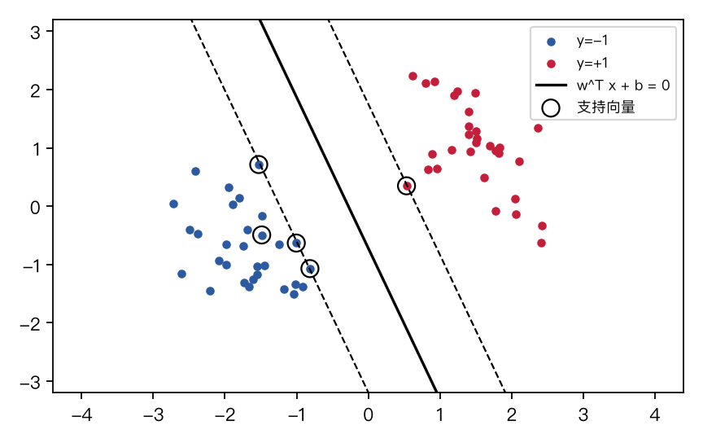
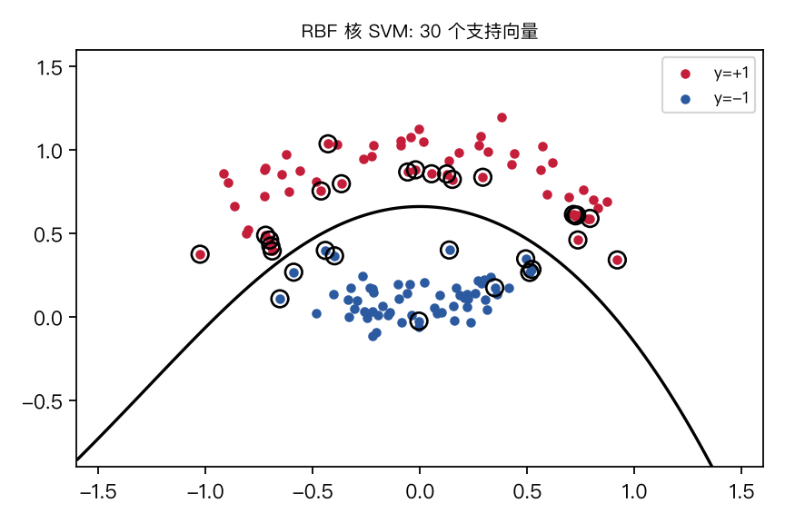
import numpy as np
rng = np.random.default_rng(9)
def pegasos(X, y, lam=0.01, T=8000, Kfn=None):
# 对偶次梯度 (dual subgradient): f(x) = sum_i a_i y_i K(x_i, x)
n = len(y)
a = np.zeros(n)
K = np.array([[Kfn(X[i], X[j]) for j in range(n)] for i in range(n)])
for t in range(1, T + 1):
i = rng.integers(n)
eta = 1.0 / (t * lam)
a *= (1 - eta * lam) # 收缩 (shrinkage)
if y[i] * ((a * y) @ K[:, i]) < 1:
a[i] += eta # 间隔违反才加 (on margin violation)
w2 = (a * y) @ K @ (a * y)
if w2 > (1 / lam) ** 2: # 投影 (projection): ||w||_K <= 1/lam
a *= (1 / lam) / np.sqrt(w2)
return a, K
rng = np.random.default_rng(9)
n = 60
Xs = np.vstack([
np.column_stack([np.ones(30), rng.normal(loc=[-1.5, -0.8], scale=0.6,
size=(30, 2))]),
np.column_stack([np.ones(30), rng.normal(loc=[1.5, 0.8], scale=0.6,
size=(30, 2))]),
])
ys = np.concatenate([-np.ones(30), np.ones(30)])
a, K = pegasos(Xs, ys, lam=0.01, T=6000, Kfn=lambda x, z: x @ z)
sv = np.where(a > 1e-6)[0]
w = ((a * ys)[:, None] * Xs).sum(0)
print("support vectors:", len(sv), "/", n, " w:", w.round(3))
pred = np.sign([sum(ai * yi * (Xs[i] @ g) for i, ai in enumerate(a)
for yi in [ys[i]] if ai > 1e-8) for g in Xs])
print("train errors:", int(np.sum(pred != ys)))support vectors: 5 / 60 w: [0.291 1.046 0.404] train errors: 0
本章是全书的枢纽：前 6 章的每个“学习方式”都将在神经网络里找到位置（MSE / 交叉熵损失、SGD、softmax 输出层、特征思想），后 9 章解释如何控制它的泛化。讲义开篇：“We now begin our study of deep learning. In this set of notes, we give an overview of neural networks, discuss vectorization and discuss training neural networks with backpropagation.”（第七章三件事：网络结构、向量化、反向传播）。本章最终交付物：仅用 numpy 从零写出的模块化神经网络库，并通过数值梯度检查与真实训练。
讲义定位：过去只学过“对参数线性”的模型——“In the past lectures, we have considered the cases when (in linear regression) or (where is the feature map). A commonality of these two models is that they are linear in the parameters .”（线性回归与特征映射都是参数的线性函数）；接下来“The most common non-linear models are neural networks, which we will define staring from the next section.”（最常见的非线性模型是神经网络；staring 原文如此，应作 starting）。损失按任务配齐：回归用 MSE——“which is same as in linear regression except that we introduce a constant in front of the cost function to be consistent with the convention.”（same 原文如此，应作 the same；加 只是惯例，不影响最优点）；术语上“Throughout the notes, we use the words ‘loss’ and ‘cost’ interchangeably.”（loss 与 cost 通用）。二分类经 logistic 函数：“We call the output the logit.”（logit = 未经激活的实数输出）；多分类经 softmax：“Each logit corresponds to the prediction for one of the classes.”（每个 logit 对应一类）。优化器：“Oftentimes computing the gradient of examples simultaneously for the parameter can be faster than computing gradients separately due to hardware parallelization. Therefore, a mini-batch version of SGD is most commonly used in deep learning”（小批量吃硬件并行的红利）。整套流程三步走：“1. Define a neural network parametrization … 2. write the backpropagation algorithm to compute the gradient of the loss function efficiently … 3. run SGD or mini-batch SGD (or other gradient-based optimizers) with the loss function .”（定义参数化 反传求梯度 跑 SGD）。
讲义用房价预测引出 ReLU：先直线拟合，然后“we wish to prevent negative housing prices by setting the absolute minimum price as zero. This produces a ‘kink’ in the graph”（房价不许为负 图像在零处折拐）。单神经元模型 ：“Here returns a single value: or zero, whichever is greater.”（取 与 0 的较大者）。命名：“In the context of neural networks, the function is called a ReLU (pronounced ‘ray-lu’), or rectified linear unit”（读音 ray-lu）；“Generally, a one-dimensional non-linear function that maps to such as ReLU is often referred to as an activation function.”（激活函数 = 的一维非线性函数）。
English: the housing example starts from a straight line, clamps it at zero, and the kink at the clamp is the whole point — one ReLU neuron buys one bend; the two-moons experiment in 7.6 (100% train accuracy with a two-hidden-layer MLP) shows what hundreds of bends can carve.
Step 1 (无非线性则塌缩; collapse without non-linearity). 讲义设 、，两层网络当场塌缩：
讲义：“Notice how collapsed into .”（两个权重矩阵塌缩成一个）；原因：“applying a linear function to another linear function will result in a linear function over the original input”（线性套线性还是线性）；结论严厉：“Without non-linear activation functions, the neural network will simply perform linear regression.”（无非线性激活，神经网络退化为线性回归）。
Step 2 (与核方法互为镜像; connection to the kernel method). 讲义：“We can view deep learning as a way to automatically learn the right feature map (sometimes also referred to as ‘the representation’)”（深度学习 = 自动学出特征映射）。把末层之前的全部参数记为 ，则 ，模型 。 固定时“ can viewed as a feature map”（can viewed 原文如此，应作 can be viewed）；训练时“we are not learning a linear model in the feature space, but also learning a good feature map itself”（不只学线性头，还学特征映射本身）。代价：“This is why some people refer to neural networks as a black box, as it can be difficult to understand the features it has discovered.”（学出的特征难解释，故有黑箱之称）。
Step 3 (激活函数谱系; the activation zoo). 讲义列出 sigmoid、tanh、leaky ReLU、GELU、Softplus 五种替代并评价：“Sigmoid and tanh are less and less used these days partly because their are bounded from both sides and the gradient of them vanishes as goes to both positive and negative infinity”（their are 原文如此，应作 they are；两端饱和 梯度消失）；“GELU (or its slight variant) is used in NLP models such as BERT and GPT”（GPT 系模型用 GELU）。
讲义定义：“Neural networks refer to a broad type of non-linear models/parametrizations that involve combinations of matrix multiplications and other entrywise non-linear operations.”（NN = 矩阵乘与逐元素非线性的复合）。教学路线：“We will start small and slowly build up a neural network, step by step.”（从单个神经元开始逐步搭起）；“The model is said to have a single neuron partly because it has a single non-linear activation function.”（单神经元 = 单激活函数）。堆叠成层后：“The collection of is referred to as the first layer, and the second layer. The activation is referred to as the hidden layer. A two-layer neural network is also called one-hidden-layer neural network.”（两层网络又称单隐层网络）。末层保持线性：“often people like to make the last layer linear (aka without a ReLU) so that negative outputs are possible and it’s easier to interpret the last layer as a linear model.”（输出可正可负、便于解释为线性模型）；脚注补充“Typically, for multi-layer neural network, at the end, near the output, we don’t apply ReLU, especially when the output is not necessarily a positive number.”（输出端通常不加 ReLU）。生物学渊源与限度：“The hidden units correspond to the neurons in a biological neural network, and the parameters ’s correspond to the synapses. However, it’s unclear how similar the modern deep artificial neural networks are to the biological ones.”（隐藏单元类比神经元、参数类比突触，但相似程度存疑）。万能逼近定理（数学补充，Hornik 1989）：单隐层足够宽即可任意精度逼近连续函数——表达力不是瓶颈，泛化与可优化性才是（第 8–9 章）。
讲义的乐高比喻：“Building neural networks is analogous to Lego bricks: you take individual bricks and stack them together to build complex structures. The same applies to neural networks: we take individual neurons and stack them together to create complex neural networks.”（砖块堆出结构 = 神经元堆出网络）。房价网络：输入（面积、卧室数、邮编、社区富裕度），中间三个隐藏单元——家庭容量（面积 + 卧室）、步行便利（邮编）、学区质量（邮编 + 富裕度），输出房价。这些“these ’s are often referred to as ‘hidden units’ or ‘hidden neurons’”（隐藏单元 / 隐藏神经元）。手写版让家庭容量只依赖面积与卧室——是人为先验；泛化版让每个隐藏单元依赖全部输入：“Thus we have a so-called fully-connected neural network because all the intermediate variables ’s depend on all the inputs ’s.”（全连接的定义）。
English: three hand-picked hidden units (family size, walkable, school quality) encode a human’s beliefs about what predicts price; the fully-connected version drops those beliefs and lets training discover whatever intermediate concepts work best.
Step 1 (向量化记号与递归; vectorized notation and recursion). 两层网络的矩阵形式：
层全连接网络（ 个权重矩阵）逐层递归：
记号统一：“Sometimes for notational consistency we also write , and . Then we have simple recursion”（，一路递归到 ）。
Step 2 (参数计数; parameter counting). 讲义公式：“the total number of parameters in this network is ”（每层 个：权重 加偏置 ）。本章主角网络 （两个 LayerNorm）：
数学补充 (为什么深比宽好). 组合函数 若每层学一个“中间概念”，深度 的网络能用 个参数表达 重复合；同等表达力用单隐层需要宽度指数爆炸。这也是 ResNet（7.3 节）与第 14 章预训练大模型的架构哲学。
讲义把 (7.22) 的模型改了名：“The multi-layer neural network introduced in equation (7.22) of Section 7.2 is often called multi-layer perceptron (MLP) these days.”（如今多称 MLP）。模块化视角：“First, each matrix multiplication can be viewed as a building block.”（每个矩阵乘都是积木）。残差连接：“One of the very influential neural network architecture for vision application is ResNet, which uses the residual connections that are essentially used in almost all large-scale deep learning architectures these days.”（残差连接几乎无处不在）；“ResNet-S and layer normalization are part of the Transformer architecture that are widely used in modern large language models.”（简化残差 + LN = Transformer 的核心组件）。层归一化：“Layer normalization, denoted by LN in this text, is a module that maps a vector to a more normalized vector . It is oftentimes used after the nonlinear activations.”（LN 常跟在激活后面）；“Moreover, and are learnable parameters and thus layernorm is a parameterized module (as opposed to the activation layer which doesn’t have any parameters.)”（LN 是带参模块，激活层无参数）。一维卷积：滤波器命名有陷阱——“Oftentimes the filter is also called a kernel (but it does not have much to do with the kernel in kernel method.)”（此 kernel 非第 5 章核方法之 kernel）；效率对比：“computing the convolution only takes times but computing a generic matrix multiplication takes time. Convolution has parameters but generic matrix multiplication will have parameters.”（times 原文如此，应作 time； 个参数对 个）。多通道推广中“the simplified version above corresponds to the 1-channel version.”（简化版是单通道版）。
把 的滤波器 扫过长度 的序列：每个输出位只看 邻域，且所有位置复用同一组 ——写成矩阵就是每条对角线重复 的带状矩阵 。讲义：“Note that … and thus convoluation is a matrix multiplication with parameter sharing.”（convoluation 原文如此，应作 convolution；对角线重复 = 参数共享）。多通道时“the simplified version above corresponds to the 1-channel version.”（单通道卷积核 个参数；一般版在 个通道对上各配一个，共 个参数，而一般线性映射要 个）。
English: with each output sees only its immediate neighborhood and reuses the same three weights — a banded matrix whose diagonals repeat; locality plus weight sharing is why convolutions scale to long sequences and images.
Step 1 (LN 的尺度不变性; scale-invariance of LN). 讲义：“One important property of layer normalization is that it will make the model invariant to scaling of the parameters in the following sense.”（LN 使模型对参数缩放不敏感）：
证明一行（讲义式 (7.43)–(7.47)）：，LN-S 减均值消掉平移、除标准差消掉 ——标准化对“乘 加平移”完全免疫。推论：“Due to this property, most of the modern DL architectures for large-scale computer vision and language applications have the following scale-invariant property w.r.t all the weights that are not at the last layer.”（除末层外，全体权重尺度不变）。工程含义：上一层输出整体放大缩小不影响下一层 LN 后的信号，训练对参数初始化尺度不敏感（下方代码数值验证，误差 ）。
Step 2 (残差为什么救了深网; why residuals rescue deep nets).（数学补充） 的雅可比 （ 为内部支路）。梯度反传时每过一个残差块，梯度获得一项恒等直通分量——即使 ，梯度也不消失。7.6 节实验将验证：6 层普通网络（MM + sigmoid）完全学不动（准确率 50%），同深度 ResNet-S 达 99.3%。注意讲义的克制：“the ResNet-S is still not the same as the ResNet architecture introduced in the seminal paper [He et al., 2016] because ResNet uses convolution layers instead of vanilla matrix multiplication, and adds batch normalization between convolutions and activations.”（简化版与原版差异：卷积层 + batch normalization）。
以下模块代码将在 7.4 / 7.5 分块通过数值梯度检查，7.6 组装训练。结构总览：
import numpy as np # 全章只用 numpy (numpy only)
rng = np.random.default_rng(11) # 全章共用一个随机流 (shared RNG)
class MM: # y = W x + b (x: vector or batch matrix)
def __init__(self, din, dout, rng=rng):
self.W = rng.normal(scale=np.sqrt(2.0 / din), size=(dout, din))
self.b = np.zeros(dout)
def forward(self, X):
self.X = X
return self.W @ X + self.b[:, None]
def backward(self, V): # V = dJ/dY -> return dJ/dX
self.dW = V @ self.X.T # 参数梯度 (parameter grads, batch sum)
self.db = V.sum(axis=1)
return self.W.T @ V
def params(self):
return [(self, "W"), (self, "b")]
class ReLU:
def forward(self, X):
self.mask = X > 0
return np.maximum(X, 0)
def backward(self, V):
return V * self.mask
def params(self):
return []
class LayerNorm: # LN: gamma*(z-mu)/sigma + beta, per column
def __init__(self, d):
self.gamma = np.ones(d)
self.beta = np.zeros(d)
def forward(self, X):
mu = X.mean(axis=0, keepdims=True)
self.sig = X.std(axis=0, keepdims=True) + 1e-8
self.z = (X - mu) / self.sig
return self.gamma[:, None] * self.z + self.beta[:, None]
def backward(self, V):
self.dgamma = (V * self.z).sum(axis=1)
self.dbeta = V.sum(axis=1)
U = self.gamma[:, None] * V # dJ/dz
return (U - U.mean(axis=0) - self.z * (U * self.z).mean(axis=0)) \
/ self.sig
def params(self):
return [(self, "gamma"), (self, "beta")]
class Conv1d: # (C_in, T) -> (C_out, T-k+1)
def __init__(self, cin, cout, k, rng=rng):
self.W = rng.normal(scale=np.sqrt(2.0 / (cin * k)),
size=(cout, cin, k))
self.b = np.zeros(cout)
def forward(self, X):
self.X = X
T = X.shape[1]
k = self.W.shape[2]
Y = np.zeros((self.W.shape[0], T - k + 1))
for t in range(Y.shape[1]):
Y[:, t] = (self.W * X[:, t:t + k][None, :, :]).sum(axis=(1, 2))
return Y
def backward(self, V):
k = self.W.shape[2]
self.dW = np.zeros_like(self.W)
dX = np.zeros_like(self.X)
for t in range(V.shape[1]):
self.dW += V[:, t][:, None, None] * self.X[:, t:t + k][None, :, :]
dX[:, t:t + k] += (V[:, t][:, None, None] * self.W).sum(axis=0)
self.db = V.sum(axis=1)
return dX
def params(self):
return [(self, "W"), (self, "b")]class Sigmoid: # h(X) = 1/(1+exp(-X)), stable via clip
def forward(self, X):
self.out = 1 / (1 + np.exp(-np.clip(X, -30, 30)))
return self.out
def backward(self, V): # B[sigma, X] V = V * h * (1 - h)
return V * self.out * (1 - self.out)
def params(self):
return []
class SoftmaxCE: # logits (K, n), one-hot Y (K, n)
def forward(self, logits, Y):
Z = logits - logits.max(axis=0) # 数值稳定 (subtract max)
P = np.exp(Z) / np.exp(Z).sum(axis=0)
self.P, self.Y = P, Y
return -np.mean(np.log(np.sum(P * Y, axis=0) + 1e-12))
def backward(self): # B[ce, t] = (P - Y) / n
return (self.P - self.Y) / self.Y.shape[1]
def params(self):
return []
class ResBlock: # Res(z) = z + sigma(MM(sigma(MM(z))))
def __init__(self, d, rng=rng):
self.mm1, self.mm2 = MM(d, d, rng), MM(d, d, rng)
self.s1, self.s2 = Sigmoid(), Sigmoid()
def forward(self, X):
return X + self.s2.forward(self.mm2.forward(
self.s1.forward(self.mm1.forward(X))))
def backward(self, V):
V = V + self.mm1.backward(self.s1.backward( # identity + branch
self.mm2.backward(self.s2.backward(V))))
return V
def params(self):
return self.mm1.params() + self.mm2.params()
class MLP: # 容器: 顺序前向/逆向反向 (fwd / bwd / SGD)
def __init__(self, mods):
self.mods = mods
def forward(self, X):
for m in self.mods:
X = m.forward(X)
return X
def backward(self, V): # 链式法则逆序 (reversed chain rule)
for m in reversed(self.mods):
V = m.backward(V)
return V
def params(self):
ps = []
for m in self.mods:
ps += m.params()
return ps
def sgd_step(self, eta, lam=0.0): # theta -= eta * (grad + lam * theta)
for obj, name in self.params():
P = getattr(obj, name)
setattr(obj, name, P - eta * (getattr(obj, "d" + name) + lam * P))ln = LayerNorm(6) # LN 尺度不变性数值验证 (numeric check)
mm = MM(6, 6, rng)
z = rng.normal(size=(6, 1))
out1 = ln.forward(mm.forward(z))
mm.W, mm.b = 2 * mm.W, 2 * mm.b + 5.0 # 任意缩放/平移 (arbitrary scale & shift)
out2 = ln.forward(mm.forward(z))
print("LN scale-invariance max diff:", float(np.abs(out1 - out2).max()))LN scale-invariance max diff: 1.2425227957635343e-08
讲义开场：“In this section, we introduce backpropgation or auto-differentiation, which computes the gradient of the loss efficiently.”（backpropgation 原文如此，应作 backpropagation；反向传播 = 自动微分）。核心是非正式定理 7.4.1：“Suppose a differentiable circuit of size computes a real-valued function . Then, the gradient can be computed in time , by a circuit of size .”（可微电路能算，就能等价代价求梯度）；“we should be able to compute the in a similar time to that for computing itself.”（求梯度不比求值贵）。框架现实：“auto-differentiation or backpropagation is already implemented in all the deep learning packages such as tensorflow and pytorch, and thus in practice, in most of cases a researcher does not need to write their backpropagation algorithms. However, understanding it is very helpful for gaining insights into the working of deep learning.”（in most of cases 原文如此，应作 in most cases；框架都实现了，但理解它才有洞察）。记号 ：“We call the backward function for the module . Note that when is fixed, is merely a linear map from to .”（backward = 固定 后的线性映射）；脚注点破对应关系：“e.g., the function is the .backward() method of the module in pytorch.”（就是 PyTorch 的 .backward() 方法）。执行流程：“Backpropgation consists of two passes, the forward pass and backward pass.”（Backpropgation 原文如此；前向算值，反向传梯度）；“the intermediate values of and … need to be stored in the memory after the forward pass.”（中间量必须在前向时缓存）。模块化的根本动机：“The main underlying purpose of treating a complex network as compositions of small modules is that small modules tend to have efficiently implementable backward function.”（小模块的 backward 才好高效实现）。
backward 写得对不对，不该靠肉眼：给模块喂随机输入 与随机上游梯度 ，用中心差分直接逼近 （），再与解析的 逐元素比较相对误差。本章 13 项检查——MM、sigmoid、ReLU、LayerNorm、残差块的全部参数、SoftmaxCE 损失、整网——全部通过，最大相对误差 （出现在含 稳定项与除法的整网检查上，属差分精度极限而非公式错误）。
English: central differences give a ground-truth gradient to roughly 1e-8; if your analytic backward disagrees above 1e-4, the formula is almost surely wrong — this check is the acceptance test for every new module.
Step 1 (链式法则的矩阵形态; chain rule, vectorized). 设 ，， 为标量。逐坐标链式法则：
向量化后是“矩阵乘向量”：“the backward function is always a linear map from to , though note that the mapping itself can depend on in complex ways.”（backward 恒为线性映射，但映射本身可以复杂地依赖 ）。
Step 2 ( 的定义; defining ). 讲义把该映射打包成记号（backward function）：
复合链上逐模块逆序调用即可——这就是整网算法的全部。为什么只算 VJP、不算整个雅可比？ 的雅可比对 的 MM 层已是 2048 个数，几百层网络就是天文数字；VJP 只需一次矩阵乘，且与前向复用同一份缓存。
Step 3 (基本模块的 backward; backward for basic modules). 每行都可由 Step 2 的定义一行算出（批量版 、， 为批量大小）：
| 模块 | 前向 | 输入梯度 | 参数梯度（VJP 顺手算出） |
|---|---|---|---|
| MM | , | ||
| ReLU | — | ||
| Sigmoid | — | ||
| LayerNorm | ， | , | |
| SoftmaxCE | — | ||
| ResBlock | 内部 MM 的 |
对应讲义式 (7.63)、(7.64)、(7.69)–(7.71)：MM 的输入梯度 ；参数梯度 ，向量化即 （参数梯度 = 外积，批量时自动求和）；激活 （逐元素乘）；损失 、、，其中 。效率上讲义特别提醒：“at the first sight, equation (7.67) appears to indicate the backward function takes time, but equation (7.69) shows that it’s implementable in time”（看似 ，实为 ——对角矩阵乘向量）。
Step 4 (整网算法; the full MLP algorithm). 前向（讲义式 (7.72)）逐层算 、 并缓存；反向从损失端起步（logistic 损失，讲义式 (7.76)）：
再逆序迭代（讲义式 (7.77)–(7.80)）：
参数梯度块可与激活梯度块交错执行：“the block of computations in equations (7.75) can be interleaved with the block of computation in equations (7.74) because the and can be computed as soon as is computed.”（ 一到手就落到参数梯度上）。
通用编写策略（任何新模块都按这四步）：
self.dW 等（对批量自动求和）；params() 返回 [(对象, 名字), …]，供优化器遍历。代价（数学补充）：反向的矩阵乘与前向同阶（ 与 都是 量级），总代价约为前向的 2 倍，与参数量成线性关系——深度学习“训练贵、推理便宜”的根源。
先定义中心差分：，步长 时相对误差约 。用它检验每一个模块的解析梯度——这是手写框架唯一可信的验收标准。
def num_grad(f, x, eps=1e-6): # 数值梯度 (numeric gradient, central diff)
g = np.zeros_like(x)
for idx in np.ndindex(x.shape):
old = x[idx]
x[idx] = old + eps
fp = f()
x[idx] = old - eps
fm = f()
x[idx] = old
g[idx] = (fp - fm) / (2 * eps)
return g
def check_input(module, d, n, name):
X = rng.normal(size=(d, n))
V = rng.normal(size=module.forward(X).shape)
an = module.backward(V) # 解析梯度 (analytic dJ/dX)
nu = num_grad(lambda: float((module.forward(X) * V).sum()), X)
rel = np.max(np.abs(an - nu) / (np.abs(nu) + 1e-8))
print(f"{name:<12} input grad max rel err = {rel:.2e}")
def check_param(module, pname, X, name):
V = rng.normal(size=module.forward(X).shape)
module.backward(V)
an = getattr(module, "d" + pname) # 解析参数梯度 (analytic param grad)
P = getattr(module, pname)
nu = num_grad(lambda: float((module.forward(X) * V).sum()), P)
rel = np.max(np.abs(an - nu) / (np.abs(nu) + 1e-8))
print(f"{name:<12} {pname:<6} grad max rel err = {rel:.2e}")
check_input(MM(4, 3), 4, 5, "MM")
check_input(Sigmoid(), 6, 5, "sigmoid")
check_input(ReLU(), 6, 5, "relu")
check_input(LayerNorm(8), 8, 4, "LayerNorm")
ln = LayerNorm(6); rb = ResBlock(5)
check_input(ln, 6, 3, "LN(again)")
check_param(ln, "gamma", rng.normal(size=(6, 3)), "LayerNorm")
check_input(rb, 5, 4, "ResBlock")
for mm, pname in rb.params(): # 残差块内 4 个 MM (4 MM layers inside)
check_param(mm, pname, rng.normal(size=(5, 3)), "ResBlock")
loss = SoftmaxCE() # 损失层 (loss layer)
logits = rng.normal(size=(3, 4))
Y = np.eye(3)[:, [1, 0, 2, 1]]
loss.forward(logits, Y)
an = loss.backward()
nu = num_grad(lambda: loss.forward(logits, Y), logits)
print("SoftmaxCE grad max rel err =",
f"{np.max(np.abs(an - nu) / (np.abs(nu) + 1e-8)):.2e}")
net = MLP([MM(2, 16), ReLU(), LayerNorm(16), MM(16, 3)]) # 整网 (whole net)
X = rng.normal(size=(2, 6))
Ys = np.eye(3)[:, rng.integers(0, 3, 6)]
def net_loss():
return loss.forward(net.forward(X), Ys)
loss.forward(net.forward(X), Ys)
net.backward(loss.backward())
worst = 0.0
for obj, pname in net.params():
P = getattr(obj, pname)
nu = num_grad(net_loss, P)
an = getattr(obj, "d" + pname)
worst = max(worst, np.max(np.abs(an - nu) / (np.abs(nu) + 1e-8)))
print("full MLP param grad max rel err =", f"{worst:.2e}")MM input grad max rel err = 9.74e-09 sigmoid input grad max rel err = 9.45e-09 relu input grad max rel err = 4.92e-09 LayerNorm input grad max rel err = 3.86e-07 LN(again) input grad max rel err = 4.45e-08 LayerNorm gamma grad max rel err = 5.74e-10 ResBlock input grad max rel err = 7.68e-08 ResBlock W grad max rel err = 4.98e-09 ResBlock b grad max rel err = 1.07e-09 ResBlock W grad max rel err = 3.52e-09 ResBlock b grad max rel err = 1.28e-09 SoftmaxCE grad max rel err = 3.31e-09 full MLP param grad max rel err = 4.97e-07
LayerNorm 前向里的 稳定项与除法会放大差分误差，误差层层累加后整网可达 量级。判定标准：单模块 ，整网 ；若某条超过 ，几乎必然是 backward 公式写错了。
backward(v) ，恒为线性映射，链式法则 = 逆序复合；② 全部雅可比矩阵从不显式构造，只算 VJP；③ 参数梯度在 backward 里顺手批量求和（外积 ）；④ 新模块上线前必须过数值梯度检验（阈值 ）；⑤ 中间量 必须在前向时缓存。讲义在引入多层网络时就点破了实现的命门：“In practice, the dimensionalities of the inputs and hidden units are high. As a result, code will run very slowly if you use for loops. Leveraging the parallelism in GPUs is/was crucial for the progress of deep learning.”（is/was 原文如此；for 循环太慢，GPU 并行是深度学习进展的关键）。解法：“Instead of using for loops, vectorization takes advantage of matrix algebra and highly optimized numerical linear algebra packages (e.g., BLAS) to make neural network computations run quickly.”（向量化吃矩阵代数与 BLAS）；“Before the deep learning era, a for loop may have been sufficient on smaller datasets, but modern deep networks and state-of-the-art datasets will be infeasible to run with for loops.”（现代数据集上 for 循环不可行）。本章约定（与讲义一致）：“Note that we are stacking training examples in columns and not rows.”（样本按列堆叠）。偏置加法严格说不合法：“Strictly following the rules of linear algebra, this is not allowed. In practice however, this addition is performed using broadcasting.”（实践中靠广播机制）。约定转换：“All the deep learning packages or implementations put the data points in the rows of a data matrix… However, most of the deep learning papers use a similar notation to these notes where the data points are treated as column vectors. There is a simple conversion to deal with the mismatch: in the implementation, all the columns become row vectors, row vectors become column vectors, all the matrices are transposed, and the orders of the matrix multiplications are flipped.”（包 = 行主序、论文 = 列主序；转换口诀：全转置 + 乘法顺序对调）。讲义脚注调侃：“The instructor suspects that this is mostly because in mathematics we naturally multiply a matrix to a vector on the left hand side.”（数学习惯把矩阵写在向量左边）。
广播一例： 想加 ——讲义：“Strictly following the rules of linear algebra, this is not allowed. In practice however, this addition is performed using broadcasting.”（线性代数不允许，实践靠广播）。实现上可构造 后相加，且“Often times, it is not necessary to explicitly construct .”（通常无需真的复制，广播自动完成）。
English: the same bias vector is mentally pasted across all columns; numpy broadcasts it without materializing the copy, keeping both memory and code clean.
批量参数梯度的求和形式 (batch parameter gradients as summed outer products). 经验风险 。对 MM 层参数 ，逐样本链式法则给出
批量写法 正是这 个外积的和： 的第 列是 （已含损失层的 ）， 的第 列是 ，矩阵乘法按列配对求和——一次矩阵乘完成 个外积累加。同理 （对列求和）。其余模块同理：所有 backward 公式天生就是批量版本，无需额外改动。
import time
d, n = 32, 1000
Xb = rng.normal(size=(d, n))
net = MLP([MM(d, 64), ReLU(), LayerNorm(64), MM(64, 2)])
Yb = np.eye(2)[rng.integers(0, 2, n)].T
loss = SoftmaxCE()
t0 = time.time()
for _ in range(20): # 批量 (batched: 20 full-batch fwd/bwd)
loss.forward(net.forward(Xb), Yb)
net.backward(loss.backward())
t_batch = time.time() - t0
t0 = time.time()
for _ in range(20000): # 逐样本 (per-sample: 20000 steps = 20 epochs)
i = rng.integers(n)
xi = Xb[:, [i]]
loss.forward(net.forward(xi), Yb[:, [i]])
net.backward(loss.backward())
t_loop = time.time() - t0
print(f"batched: {t_batch:.3f}s vs per-sample loop: {t_loop:.3f}s "
f"-> vectorized x{t_loop / t_batch:.1f}")batched: 0.010s vs per-sample loop: 0.698s -> vectorized x70.5
同样的计算量（20 个 epoch），批量向量化快约 70 倍：NumPy 的矩阵乘走底层 BLAS，一次调用完成上万次乘加；而 Python 的 for 循环每次迭代都有解释器开销，且小矩阵无法利用缓存与 SIMD。
理论与工程只差临门一脚：跑真实训练。讲义提醒 SGD 有多种变体：“There are also other variants of the SGD or mini-batch SGD with slightly different sampling schemes.”（变体只是采样方案不同，骨架不变）。7.6.1 用双月牙数据验收整套库；7.6.2 加深到 6 层，对比普通深网与残差网络。
def make_moons(n, rng, noise=0.15):
th = rng.uniform(0, np.pi, n)
A = np.column_stack([np.cos(th), np.sin(th)]) \
+ rng.normal(0, noise, (n, 2))
th = rng.uniform(0, np.pi, n)
B = np.column_stack([1 - np.cos(th), 0.5 - np.sin(th)]) \
+ rng.normal(0, noise, (n, 2))
return np.vstack([A, B])
n_per = 150
X2 = make_moons(n_per, rng).T # (2, n): columns = samples
y2 = np.concatenate([np.zeros(n_per, int), np.ones(n_per, int)])
Y2 = np.eye(2)[:, y2] # one-hot (2, n)
net = MLP([MM(2, 32), ReLU(), LayerNorm(32),
MM(32, 32), ReLU(), LayerNorm(32), MM(32, 2)])
loss_fn = SoftmaxCE()
hist = []
for ep in range(300): # mini-batch SGD
perm = rng.permutation(2 * n_per)
for lo in range(0, 2 * n_per, 32):
idx = perm[lo:lo + 32]
J = loss_fn.forward(net.forward(X2[:, idx]), Y2[:, idx])
net.backward(loss_fn.backward())
net.sgd_step(0.5, lam=1e-4) # lr 0.5, L2 reg 1e-4
hist.append(J)
acc = np.mean(net.forward(X2).argmax(0) == y2)
print("two-moons train acc:", round(float(acc), 4),
" final loss:", round(float(J), 4))
# ...(损失曲线与决策边界绘图略，生成下图)two-moons train acc: 1.0 final loss: 0.0031
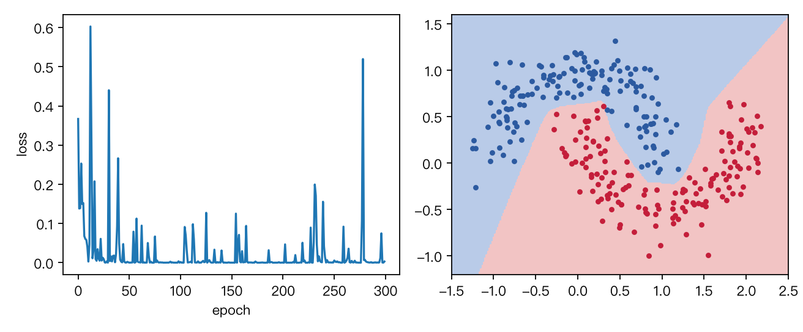
把网络加深到 6 个隐层，对比两种结构：普通层堆叠 MM + Sigmoid，以及同深度残差网络 ResNet-S（7.3 节）。注意 在饱和区导数接近 0，普通深网的梯度一路衰减到底层；残差捷径让梯度有了直通路径（7.3 节 Step 2 的雅可比分析）。
def deep_net(res):
mods = [MM(2, 32)] # 输入投影 (input projection 2 -> 32)
for _ in range(6):
if res:
mods.append(ResBlock(32)) # ResNet-S
else:
mods += [MM(32, 32), Sigmoid()] # 普通深网 (plain deep net)
mods.append(MM(32, 2))
return MLP(mods)
curves = {}
for name, res in [("plain 6x MM-sigmoid", False),
("ResNet-S 6 blocks", True)]:
rng2 = np.random.default_rng(3)
g = deep_net(res)
losses = []
for ep in range(400): # batch of 64 (300 samples is small)
idx = rng2.permutation(2 * n_per)[:64]
J = loss_fn.forward(g.forward(X2[:, idx]), Y2[:, idx])
g.backward(loss_fn.backward())
g.sgd_step(0.5, lam=1e-4)
losses.append(J)
curves[name] = losses
acc2 = np.mean(g.forward(X2).argmax(0) == y2)
print(f"{name:<22} final loss {J:.4f} acc {acc2:.3f}")
# ...(绘图略，生成下图)plain 6x MM-sigmoid final loss 0.6995 acc 0.500 ResNet-S 6 blocks final loss 0.0162 acc 0.993
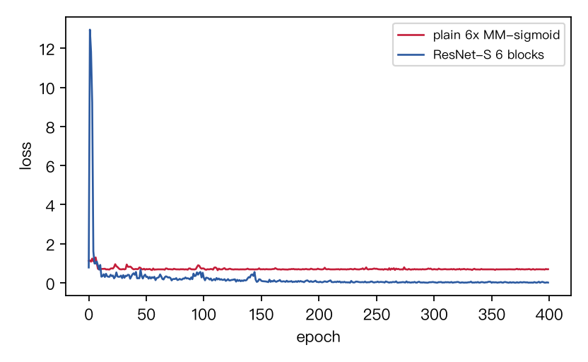
本章总结 (Essence)——你已手写了一个深度学习框架：
输出层如何选？回看第 3 章 GLM 表：高斯 恒等 + MSE（回归）；伯努利 sigmoid + BCE（二分类）；范畴分布 softmax + 交叉熵（多分类）——本章的网络把第 1–6 章所有模型的输出单元统一成了可微模块。下一章回答“训练好后泛化如何保证”：偏差-方差分解与正则化。
【本章回答第 7 章留下的问题：训练误差小，凭什么相信测试误差也小？】
讲义开篇：“This chapter discusses tools to analyze and understand the generalization of machine learning models, i.e, their performances on unseen test examples.”（泛化 = 模型在未见测试样例上的表现；i.e, 原文如此，应作 i.e.）。最小化训练损失不是终点：“However, minimizing the training loss is not our ultimate goal—it is merely our approach towards the goal of learning a predictive model.”（它只是通往“学习预测模型”的手段）。两个名字先记住：“We typically say the model overfits the data if the model predicts accurately on the training dataset but doesn’t generalize well to other test examples, that is, if the training error is small but the test error is large.”（过拟合 = 训练好、测试差）；“We say the model underfits the data if the training error is relatively large”（欠拟合 = 训练误差就大，此时测试误差通常也大）。术语脚注：“the difference between test error and training error is often referred to as the generalization gap”（泛化差距；文献中 generalization error 有时指测试误差、有时指这个差距）。本章路线：“We will decompose the test error into ‘bias’ and ‘variance’ terms and study how each of them is affected by the choice of model parameterizations and their tradeoffs.”（把测试误差分解为偏差与方差，再看两者如何随模型参数化而权衡）。
运行示例（贯穿本章，讲义 Figure 8.1）：真实函数 （二次），观测 ，，。训练集 30 点、测试集 300 点。讲义设定：“the function is a quadratic function … and is the a observation noise assumed to be generated from ”（the a 原文如此，应作 an observation noise）。目标不是拟合噪声：“It’s impossible to predict the noise , and therefore essentially our goal is to recover the function .”（噪声不可预测，本质目标是恢复 ）。三种拟合，三种命运：
权衡与警告：“Often, there is a tradeoff between bias and variance. If our model is too ‘simple’ and has very few parameters, then it may have large bias (but small variance), and it typically may suffer from underfittng.”（underfittng 原文如此，应作 underfitting；模型太简单 偏差，太复杂 方差）。但 U 形不是铁律：“Interestingly, the bias-variance tradeoff curves or the test error curves do not universally follow the shape in Figure 8.8, at least not universally when the model complexity is simply measured by the number of parameters.”（按参数个数度量复杂度时，测试误差未必呈 U 形——8.2 双下降）；“Nevertheless, the principle of bias-variance tradeoff is perhaps still the first resort when analyzing and predicting the behavior of test errors.”（它仍是分析与预测测试误差的第一工具）。
用“考试”理解：偏差大 = 复习资料就错了（押错题方向），刷再多题也没用；方差大 = 把模拟卷的答案背下来了（连印刷错误都背），模拟卷考满分，正式考试稍变个数字就懵。二者是同一枚硬币的两面：模型太简单 → 偏差；模型太复杂 → 方差，测试误差随模型复杂度呈 U 形（下图右）。
English: high bias means your review sheet points at the wrong topics — no amount of extra practice helps; high variance means you memorized the mock exam down to its typos, and one changed number on the real paper derails you. Too simple bias, too complex variance, and the test error is U-shaped in model complexity.
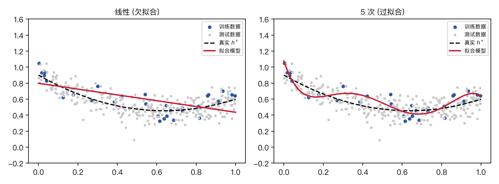
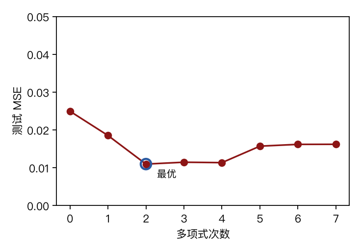
Step 1 (分解工具; a decomposition tool). 讲义先给一个要用两次的小引理（Claim 8.1.1）：“Suppose and are two independent real random variables and . Then, .”（独立 + 零期望 交叉项消失）。推论：“As a corollary, because a random variable is independent with a constant , when , we have .”（与常数相加也干净）。证明原文：“The proof of the claim follows from expanding the square: . Here we used the independence to show that .”（展开平方，用独立性把 拆成 ）。数学补充：条件“”必不可少——若 ，则 ，交叉项复活。
Step 2 (拆掉噪声; remove the noise). 设定：训练集 中 ；测试点 同分布，。对固定测试点 ，期望测试误差（讲义式 (8.2)）：。讲义原文：“Using Claim 8.1.1 with and , we have”
（ 与训练集 独立、期望为零，Claim 用一次，噪声项只剩 ——“by Claim 8.1.1”）。
Step 3 (平均模型与三项分解; the average model and the three-term decomposition). 定义平均模型（讲义式 (8.5) 之前）：“let’s define as the ‘average model’—the model obtained by drawing an infinite number of datasets, training on them, and averaging their predictions on .”（抽无穷多个数据集分别训练、取预测平均——假想模型）。讲义补充其直觉：“It turns out that for many cases, is (approximately) equal to the the model obtained by training on a single dataset with infinite samples.”（常近似等于“单个无穷大数据集训练出的模型”；the the 原文如此）。令 （随机，期望 0）、（常数，不依赖 ），再用一次推论：
命名与解读（讲义原文）：“We call the second term the bias (square) and the third term the variance.”；“the bias captures the part of the error that are introduced due to the lack of expressivity of the model”（that are 原文如此，应作 that is introduced；偏差 = 表达力不足引入的误差）。要害：“Thus, the bias is not due to the lack of data, but is rather caused by that the family of models fundamentally cannot approximate the .”（偏差不怪数据少，而怪模型族根本逼近不了 ；caused by that 原文如此，应作 caused by the fact that）。方差：“The variance term captures how the random nature of the finite dataset introduces errors in the learned model. It measures the sensitivity of the learned model to the randomness in the dataset. It often decreases as the size of the dataset increases.”（方差 = 对数据随机性的敏感度，随 增大而缩小）。不可约项：“There is nothing we can do about the first term as we can not predict the noise by definition.”（噪声天生消不掉；can not 原文如此，应作 cannot）。分类问题的警告：“the bias-variance decomposition for classification is much less clear than for regression problems. There have been several proposals, but there is as yet no agreement on what is the ‘right’ and/or the most useful formalism.”（分类没有公认分解，回归的三项分解是干净的）。
数学补充 方差项随 收缩的定量直觉：对线性最小二乘 ，，可以证明 ，于是预测方差
——方差 参数个数 ，这正是“方差随数据量下降”的参数化版本；它也解释了 8.1 实验里五次模型（6 个参数）比二次模型（3 个参数）方差更大。
import numpy as np
rng = np.random.default_rng(0) # 全章种子 (seed for the whole chapter)
hstar = lambda x: 0.9 - 1.4 * x + 1.1 * x * x # 真实二次函数 (ground-truth quadratic)
design = lambda x, deg: np.vander(x, deg + 1, increasing=True) # 设计矩阵 (Vandermonde)
n_tr, n_te, sigma = 30, 300, 0.1 # 训练/测试规模与噪声 (sizes & noise)
xtr = rng.uniform(0, 1, n_tr)
ytr = hstar(xtr) + rng.normal(0, sigma, n_tr)
xte = np.sort(rng.uniform(0, 1, n_te))
yte = hstar(xte) + rng.normal(0, sigma, n_te)
def fit_and_eval(deg):
theta, *_ = np.linalg.lstsq(design(xtr, deg), ytr, rcond=None)
mse = lambda X, y: float(np.mean((X @ theta - y) ** 2))
return mse(design(xtr, deg), ytr), mse(design(xte, deg), yte)
for deg, name in [(1, "linear"), (2, "quadratic"), (5, "quintic")]:
e_tr, e_te = fit_and_eval(deg)
print(f"deg={deg} ({name:<9}) train MSE {e_tr:.4f}"
f" test MSE {e_te:.4f}") # 训练/测试误差对比 (train vs test MSE)deg=1 (linear ) train MSE 0.0215 test MSE 0.0185 deg=2 (quadratic) train MSE 0.0083 test MSE 0.0109 deg=5 (quintic ) train MSE 0.0046 test MSE 0.0157
方差亲眼看见：同一分布抽三个不同数据集，各拟合一个五次多项式——系数面目全非：
for s in range(3):
r2 = np.random.default_rng(100 + s) # 三个独立数据集 (three datasets)
xs = r2.uniform(0, 1, n_tr)
ys = hstar(xs) + r2.normal(0, sigma, n_tr)
th, *_ = np.linalg.lstsq(design(xs, 5), ys, rcond=None)
print(f"dataset {s}: theta = {np.round(th, 2)}")dataset 0: theta = [ 1.01 -3.95 9.97 -9.39 1.09 1.95] dataset 1: theta = [ 1.07 -2.94 4.3 2.92 -12.16 7.51] dataset 2: theta = [ 0.99 -4.58 21.62 -51.35 55.65 -21.84]
三次拟合其实都在“追同一批噪声”，只是各自追的噪声不同——系数最高到 55.65，而真实 的系数不过 。系数飘移的幅度就是方差。
经典 U 形曲线并非铁律。讲义引入：“Recent works have demonstrated that the test error can present a ‘double descent’ phenomenon in a range of machine learning models including linear models and deep neural networks.”（双下降在线性模型与深度网络中都被观察到）。模型维：测试误差“can have a second descent—it first decreases, then increases to a peak around when the model size is large enough to fit all the training data very well, and then decreases again in the so-called overparameterized regime, where the number of parameters is larger than the number of data points.”（先降、在“刚好能拟合全部训练数据”处冲上尖峰、然后在过参数化区域——参数多于数据点——二次下降）。实用建议：“A practical implication of the phenomenon is that one should not hold back from scaling into and experimenting with over-parametrized models because the test error may well decrease again to a level even smaller than the previous lowest point.”（别怕过参数化，误差可能再创新低）；甚至 “in many cases, larger overparameterized models always lead to a better test performance (meaning there won’t be a second ascent after the second descent).”（越大越好，二次下降后不再回升）。
样本维：直觉本应“样本越多越好”——“A priori, we would expect that more training examples always lead to smaller test errors—more samples give strictly more information for the algorithm to learn from. However, recent work [Nakkiran, 2019] observes that the test error is not monotonically decreasing as we increase the sample size.”（实测不然：误差先降、在 处冲顶、再降）。两个维度的共同点：“the test error is peaked when ”（尖峰都在“参数数 样本数”处）。
解释与对策：尖峰是算法的锅——“The sub-optimality of the learning procedure appears to be the culprit of the peak in both sample-wise and model-wise double descent.”（学习过程的次优性是尖峰的元凶）。“Indeed, with an optimally-tuned regularization (which will be discussed more in Section 9), the test error in the regime can be dramatically improved, and the model-wise and sample-wise double descent are both mitigated.”（调优正则化可削峰——第 9 章主角登场）。二次下降的机制：“A typical explanation is that the commonly-used optimizers such as gradient descent provide an implicit regularization effect (which will be discussed in more detail in Section 9.2). In other words, even in the overparameterized regime and with an unregularized loss function, the model is still implicitly regularized, and thus exhibits a better test performance than an arbitrary solution that fits the data.”（隐式正则化：损失无正则项，优化器自带偏好）。线性模型的实例：“the gradient descent optimizer with zero initialization finds the minimum norm solution that fits the data (instead of an arbitrary solution that fits the data)”（零初始化 GD 收敛到最小范数插值解——9.2 节证明）。
复杂度度量的警告：“the double descent phenomenon has been mostly observed when the model complexity is measured by the number of parameters. It is unclear if and when the number of parameters is the best complexity measure of a model.”（双下降基本只在“按参数个数”度量时出现）。换个度量就消失：“if we plot the test error against the norm of the learnt model, the double descent phenomenon no longer occurs. This is partly because the norm of the learned model is also peaked around ”（按范数看，曲线回到“先降后升”的惯例）；“For deep neural networks, the correct complexity measure is even more elusive. The study of double descent phenomenon is an active research topic.”（深网该用什么度量仍是开放问题）。
亲手触发双下降：线性回归， 个特征（真实 只有前 5 个非零），噪声 。让 从 10 扫到 260， 时用伪逆取最小范数插值解、 时普通最小二乘：
所以看到模型在 附近很糟时，别急着丢数据或减参数：要么调正则，要么干脆走进过参数化区域。
English: the peak at is not “too much data” — it is a suboptimal algorithm meeting a hard regime; tune the regularization to shave the peak, or scale right past it into the overparameterized regime, where the implicit minimum-norm bias quietly works in your favor.
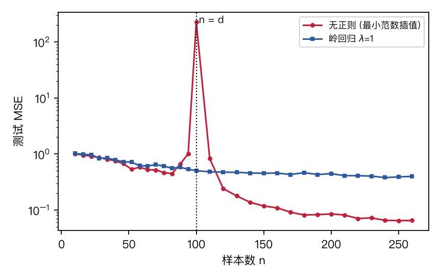
d = 100
r = np.random.default_rng(7)
theta_true = np.zeros(d)
theta_true[:5] = r.normal(0, 1, 5) # 稀疏真值 (sparse ground truth)
Xte = r.normal(0, 1, (2000, d)) # 大测试集 (large test set)
yte2 = Xte @ theta_true + r.normal(0, 0.2, 2000)
def test_err(n, lam, reps=5):
es = []
for _ in range(reps):
X = r.normal(0, 1, (n, d))
y = X @ theta_true + r.normal(0, 0.2, n)
if lam == 0:
th = np.linalg.pinv(X) @ y # 最小范数插值解 (min-norm interpolator)
else:
th = np.linalg.solve(X.T @ X + lam * n * np.eye(d),
X.T @ y) # 岭回归 (ridge)
es.append(float(np.mean((Xte @ th - yte2) ** 2)))
return np.mean(es)
ns = np.concatenate([np.arange(10, 101, 6), # 样本数扫描 (sample-size sweep)
np.arange(110, 261, 10)])
e0 = [test_err(int(n), 0.0) for n in ns] # 无正则 (unregularized)
e1 = [test_err(int(n), 1.0) for n in ns] # 岭回归 lambda=1 (ridge)
i_peak = int(np.argmax(e0))
print(f"unregularized: peak at n={ns[i_peak]} err={e0[i_peak]:.3f}")
print(f"unregularized: final n=260 err={e0[-1]:.3f} "
f"ridge(lam=1): n=100 err={e1[list(ns).index(100)]:.3f}"
f" n=260 err={e1[-1]:.3f}")unregularized: peak at n=100 err=224.341 unregularized: final n=260 err=0.065 ridge(lam=1): n=100 err=0.502 n=260 err=0.398
讲义宣布正式进入理论：“In this set of notes, we begin our foray into learning theory.”（foray = 初次尝试、进军学习理论）。核心问题（原文三问之二）：“in machine learning it’s really generalization error that we care about, but most learning algorithms fit their models to the training set. Why should doing well on the training set tell us anything about generalization error? Specifically, can we relate error on the training set to generalization error?”（训练集表现好，为何指示泛化好？）。二分类设定：训练集 iid 抽自分布 。对假设 ：
同分布假设有名有姓：“This is sometimes also referred to as one of the PAC assumptions.”（PAC = “probably approximately correct”，概率近似正确框架；两大假设：训练测试同分布 + 样本独立）。假设类：“We define the hypothesis class used by a learning algorithm to be the set of all classifiers considered by it.”（ = 算法考虑的全部分类器；线性分类器全体、某架构神经网络全体……）；“More broadly, if we were studying, say, neural networks, then we could let be the set of all classifiers representable by some neural network architecture.”。经验风险最小化（ERM）：“We call this process empirical risk minimization (ERM)… We think of ERM as the most ‘basic’ learning algorithm, and it will be this algorithm that we focus on in these notes.”（ERM = 在 中选训练误差最小者；logistic 回归等可视为其近似）。工具预告：“Using just these two lemmas, we will be able to prove some of the deepest and most important results in learning theory.”（两个引理撑起学习理论最深的定理）。
Step 1 (并界; the union bound). 引理原文：“Let be different events (that may not be independent). Then .”（不要求独立性！）。地位：“In probability theory, the union bound is usually stated as an axiom (and thus we won’t try to prove it), but it also makes intuitive sense: The probability of any one of events happening is at most the sum of the probabilities of the different events.”（通常作为公理，直觉：至少一个发生 各自概率之和）。
Step 2 (Hoeffding 不等式 / Chernoff 界; Hoeffding inequality). 引理原文：“Let be independent and identically distributed (iid) random variables drawn from a Bernoulli distribution. I.e., , and . Let be the mean of these random variables, and let any be fixed. Then”
解读：“This lemma (which in learning theory is also called the Chernoff bound)”（学习理论里也叫 Chernoff 界）；硬币版：“if you have a biased coin whose chance of landing on heads is , then if you toss it times and calculate the fraction of times that it came up heads, that will be a good estimate of with high probability (if is large).”（偏硬币抛 次，正面频率高概率逼近 ）。
Step 3 (有限 的一致收敛; uniform convergence for finite H). 归约：固定 ，抽 ，令 ；“Since our training set was drawn iid from , and the ’s have the same distribution.”（ 与 同分布）。于是 恰是 Bernoulli 的样本均值，讲义原文：“Thus, is exactly the mean of the random variables that are drawn iid from a Bernoulli distribution with mean . Hence, we can apply the Hoeffding inequality, and obtain .”。要“对所有 同时成立”，令 = 事件“ 偏差超过 ”，并界得
命名（讲义原文）：“This is called a uniform convergence result, because this is a bound that holds simultaneously for all (as opposed to just one) .”（一致收敛：同时对全部 成立）。三个量（）知二求一：给定 ，解出样本复杂度
名字（讲义原文）：“The training set size that a certain method or algorithm requires in order to achieve a certain level of performance is also called the algorithm’s sample complexity.”（样本复杂度）。关键性质：“The key property of the bound above is that the number of training examples needed to make this guarantee is only logarithmic in , the number of hypotheses in .”（对 只是对数级——后面推论的关键）。
Step 4 (ERM 的保证; the guarantee for ERM). 设 是 中最优者。若一致收敛成立，讲义原文三条不等式接力：“If uniform convergence occurs, then the generalization error of is at most worse than the best possible hypothesis in !”
（第一条对 用一致收敛；第二条用 ERM 最优性 ；第三条对 再用一致收敛）。定理（讲义原文）：“Let , and let any be fixed. Then with probability at least , we have that”
这就是偏差-方差的定量版（讲义原文：“This also quantifies what we were saying previously saying about the bias/variance tradeoff in model selection.”；saying previously saying 原文如此）：考虑换到更大假设类 ，“Hence, by learning using a larger hypothesis class, our ‘bias’ can only decrease. However, if increases, then the second term would also increase. This increase corresponds to our ‘variance’ increasing when we use a larger hypothesis class.”（第一项随 变大而降 = 偏差；第二项随 变大而升 = 方差）。
【无限假设类：从 64 位浮点到 VC 维】 线性分类器 由 个实数参数化，，定理用不了。讲义给了两个台阶：
“In other words, if a hypothesis class has finite VC dimension, then uniform convergence occurs as becomes large.”。推论（讲义原文）：“the number of training examples needed to learn ‘well’ using is linear in the VC dimension of . It turns out that, for ‘most’ hypothesis classes, the VC dimension (assuming a ‘reasonable’ parameterization) is also roughly linear in the number of parameters.”（样本量 VC 维 参数个数——三者串成一线）。
偏硬币要抛多少次？一枚正面率 的硬币，想以 95% 的把握把 估准到 （，）。按 Hoeffding：
直观公式：——精度平方反比，置信度对数。
English: to pin a 30%-heads coin to with 95% confidence, Hoeffding demands about 738 flips; the bound is pessimistic but universal — it holds for the worst possible distribution, which is exactly why it has survived for sixty years.
import numpy as np
gamma, delta, phi = 0.05, 0.05, 0.3 # 精度/置信度/真实正面率 (gamma, delta, phi)
n_need = int(np.ceil(np.log(2 / delta) / (2 * gamma * gamma)))
print(f"gamma={gamma}, delta={delta} -> n >= {n_need}")
T = 2000 # Monte Carlo 检验这个界 (check the bound)
cnt = 0
mc = np.random.default_rng(0) # 固定种子使结果可复现 (seeded: reproducible)
for _ in range(T):
phihat = (mc.uniform(size=n_need) < phi).mean()
if abs(phihat - phi) > gamma:
cnt += 1
print(f"Monte Carlo {T} 次: 超出 |phi_hat-phi|>{gamma} 的比例"
f" = {cnt / T:.4f} (界保证 <= {delta})")gamma=0.05, delta=0.05 -> n >= 738 Monte Carlo 2000 次: 超出 |phi_hat-phi|>0.05 的比例 = 0.0040 (界保证 <= 0.05)
实测违约率 0.40%，远低于界承诺的 5%——Hoeffding 是保守的：它不利用方差信息（Bernoulli 方差 实际帮了大忙）、且对最坏分布成立。保守但普适，这正是它 60 年流行的原因。
第 8 章告诉我们“复杂度要适中”；本章回答“复杂度如何控制、模型如何挑选”。核心武器两件：在损失上加正则项（9.1，外加优化器自带的隐式正则 9.2），以及在未参与训练的数据上评估模型（9.3 交叉验证）。最后（9.4）从贝叶斯视角把正则化解释为“先验信念”。
讲义承接：“Recall that as discussed in Section 8.1, overftting is typically a result of using too complex models, and we need to choose a proper model complexity to achieve the optimal bias-variance tradeoff.”（overftting 原文如此，应作 overfitting）。关键转向：“However, the correct, informative complexity measure of the models can be a function of the parameters (e.g., norm of the parameters), which may not necessarily depend on the number of parameters.”（复杂度不必数参数——可以用参数的函数如 范数来度量）。做法（讲义原文）：“Regularization typically involves adding an additional term, called a regularizer and denoted by here, to the training loss/cost function”：
“Here is often called the regularized loss, and is called the regularization parameter.”（正则化损失与正则化参数）。“ is typically chosen to be some measure of the complexity of the model . Thus, when using the regularized loss, we aim to find a model that both fit the data (a small loss ) and have a small model complexity (a small ).”（既拟合数据又保持简单；that both fit…have 原文如此，应作 fits…has）。 的三档语义：“When , the regularized loss is equivalent to the original loss. When is a sufficiently small positive number, minimizing the regularized loss is effectively minimizing the original loss with the regularizer as the tie-breaker. When the regularizer is extremely large, then the original loss is not effective (and likely the model will have a large bias.)”（ 退回原损失； 小 = 平手时的裁判； 过大 = 拟合失效、偏差大增）。
常用正则子（讲义原文）：“The most commonly used regularization is perhaps regularization, where . It encourages the optimizer to find a model with small norm. In deep learning, it’s oftentimes referred to as weight decay”（深度学习里叫权重衰减）。正则还能注入先验结构：“Besides encouraging simpler models, regularization can also impose inductive biases or structures on the model parameters.”（归纳偏置）。稀疏先验：“suppose we had a prior belief that the number of non-zeros in the ground-truth model parameters is small,—which is oftentimes called sparsity of the model—, we can impose a regularization on the number of non-zeros in , denoted by , to leverage such a prior belief.”（ = 非零分量个数）。结构化为何有益：“Imposing additional structure of the parameters narrows our search space and makes the complexity of the model family smaller,… and thus tends to lead to a better generalization.”；风险：“On the other hand, imposing additional structure may risk increasing the bias.”（若真模型根本不稀疏，强稀疏正则 大偏差）。 不可优化：“The sparsity of the parameters is not a continuous function of the parameters, and thus we cannot optimize it with (stochastic) gradient descent. A common relaxation is to use as a continuous surrogate.”（ = LASSO = 的连续松弛）。为何 偏稀疏（讲义脚注）：“An intuition is: assuming the parameter is on the unit sphere, the parameter with smallest norm also happen to be the sparsest parameter with only 1 non-zero coordinate.”（happen 原文如此，应作 happens；单位球面上 最小的点恰是最稀疏的点）。两者取舍：“The norm regularization is much more commonly used with kernel methods because regularization is typically not compatible with the kernel trick (the optimal solution cannot be written as functions of inner products of features.)”（ 与核技巧不兼容）。深度学习常用：“In deep learning, the most commonly used regularizer is regularization or weight decay. Other common ones include dropout, data augmentation, regularizing the spectral norm of the weight matrices, and regularizing the Lipschitzness of the model, etc.”（dropout、数据增强、谱范数正则、Lipschitz 正则）。伏笔：“it’s known that there is another implicit source of regularization, as discussed in the next section.”（还有隐式正则——9.2）。
Step 1 (权重衰减; weight decay). 讲义原文：gradient descent “is equivalent to shrinking/decaying by a scalar factor of and then applying the standard gradient”（先把权重按比例收缩，再走普通梯度步）。推导：对 做梯度下降，
每步权重先“腐”一点点（乘 ）——这就是名字 weight decay 的由来。
Step 2 (为何 偏爱稀疏解; why favors sparsity). 讲义脚注的几何直觉：把参数限制在单位球面上，“the parameter with smallest norm also happen to be the sparsest parameter with only 1 non-zero coordinate. Thus, sparsity and norm gives the same extremal points to some extent.”（happen、gives 原文如此； 的等值线是菱形，最小值落在坐标轴的角点——恰是“只有一个非零分量”的最稀疏参数； 的等值线是圆，最小值“平坦”处取得，各分量均匀小、均非零）。所以 是稀疏性 （非零个数，不可优化）的连续松弛。
数学补充 怎么优化：近端梯度（ISTA）。目标 。 不可微，但它的近端算子有闭式——软阈值。求 ：按坐标分解， 的一阶条件 ； 时 （次梯度吸收掉 ）， 时 。合起来
ISTA 迭代：，（，梯度步的 Lipschitz 常数）。直觉：普通梯度步之后，把小于阈值的分量直接“关掉”——这就是稀疏的来源。
稀疏恢复对决：10 个特征中真值只有 3 个非零（）， 个带噪样本：
English: ridge spreads the credit across all ten features like a hedge, while LASSO commits — soft-thresholding zeroes out anything below the barrier and keeps exactly the three real players.
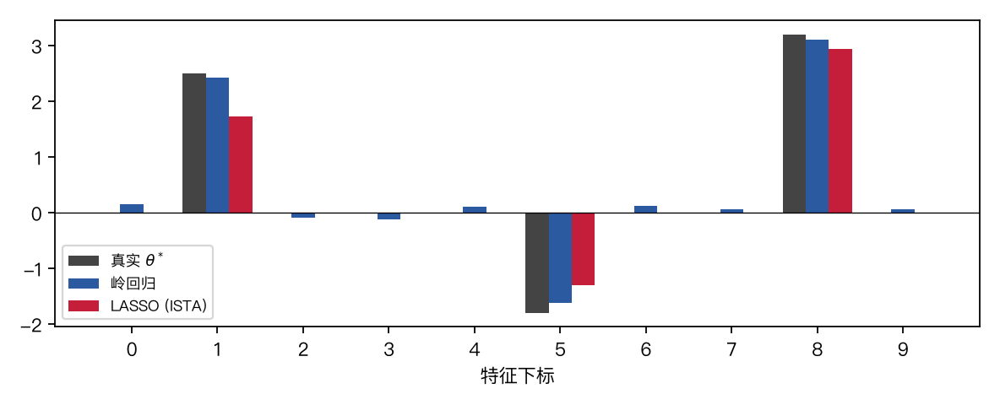
rng = np.random.default_rng(4) # 本章种子 (seed for this chapter)
n, d, sigma = 30, 10, 0.5
theta_true = np.zeros(d)
theta_true[1], theta_true[5], theta_true[8] = 2.5, -1.8, 3.2 # 3 个真非零 (true support)
X = rng.normal(0, 1, (n, d))
y = X @ theta_true + rng.normal(0, sigma, n)
th_ridge = np.linalg.solve(X.T @ X + 1.0 * np.eye(d), X.T @ y) # 岭回归闭式解 (ridge)
lam_l = 0.5 # LASSO: ISTA 迭代 (LASSO via ISTA)
L = np.linalg.eigvalsh(X.T @ X / n).max() # 梯度 Lipschitz 常数 (Largest eig.)
eta = 1.0 / L # 步长 1/L (step size 1/L)
th_lasso = np.zeros(d)
for _ in range(500):
grad = X.T @ (X @ th_lasso - y) / n
v = th_lasso - eta * grad # 梯度步 (gradient step)
th_lasso = np.sign(v) * np.maximum(np.abs(v) - eta * lam_l, 0) # 软阈值 (soft-threshold)
print("true :", np.round(theta_true, 2))
print("ridge:", np.round(th_ridge, 2),
f" |theta|_0 = {int((np.abs(th_ridge) > 1e-3).sum())}")
print("lasso:", np.round(th_lasso, 2),
f" |theta|_0 = {int((np.abs(th_lasso) > 1e-12).sum())}")true : [ 0. 2.5 0. 0. 0. -1.8 0. 0. 3.2 0. ] ridge: [ 0.14 2.41 -0.09 -0.12 0.1 -1.62 0.12 0.05 3.11 0.05] |theta|_0 = 10 lasso: [ 0. 1.73 0. -0. 0. -1.31 0. -0. 2.94 0. ] |theta|_0 = 3
讲义定义：“The implicit regularization effect of optimizers, or implicit bias or algorithmic regularization, is a new concept/phenomenon observed in the deep learning era. It largely refers to that the optimizers can implicitly impose structures on parameters beyond what has been imposed by the regularized loss.”（隐式正则 = 深度学习时代新现象；refers to that 原文如此，应作 refers to the fact that）。为何经典情形没有此事：“In most classical settings, the loss or regularized loss has a unique global minimum, and thus any reasonable optimizer should converge to that global minimum and cannot impose any additional preferences.”（唯一全局最优 优化器无从偏好）。深度学习不同：“However, in deep learning, oftentimes the loss or regularized loss has more than one (approximate) global minima, and difference optimizers may converge to different global minima.”（difference 原文如此，应作 different）。要害：“Though these global minima have the same or similar training losses, they may be of different nature and have dramatically different generalization performance.”（训练损失相同，泛化天差地别）；“It turns out that many commonly-used optimizers (or their components) prefer or bias towards finding global minima of certain properties, leading to a better test performance.”（优化器自带偏好）。核心启示（takehome message，讲义原文）：“the choice of optimizer does not only affect minimizing the training loss, but also imposes implicit regularization and affects the generalization of the model. Even if your current optimizer already converges to a small training error perfectly, you may still need to tune your optimizer for a better generalization”（选优化器 = 选泛化；原句末尾为 “generalization, .”，逗号+句号 原文如此）。经验线索：“In many (but definitely far from all) situations, among those setting where optimization can succeed in minimizing the training loss, the use of larger initial learning rate, smaller initialization, smaller batch size, and momentum appears to help with biasing towards more generalizable solutions.”（setting 原文如此，应作 settings；大初始学习率、小初始化、小批量、动量 更泛化）。平坦极小值猜想：“A conjecture (that can be proven in certain simplified case) is that stochasticity in the optimization process help the optimizer to find flatter global minima (global minima where the curvature of the loss is small), and flat global minima tend to give more Lipschitz models and better generalization.”（case、help 原文如此；随机性帮优化器找到平坦极小值，平坦 更 Lipschitz 更泛化）。状态：“Characterizing the implicit regularization effect formally is still a challenging open research question.”（形式化仍是开放问题）。
命题：，（过参数化），解 。梯度下降 ， 收敛到最小范数插值解 （ 为伪逆）。讲义在 8.2 节的表述：“the gradient descent optimizer with zero initialization finds the minimum norm solution that fits the data (instead of an arbitrary solution that fits the data)”（零初始化 GD 找到的是最小范数解，而不是随便一个插值解）。下面给出证明。
证明两步。(1) 迭代始终停在行空间：，且每步增量 ，归纳即得 恒成立。(2) 行空间里的插值解唯一且就是最小范数解：任何插值解满足 ，通解为 ，；而 且与零空间正交。（正交分解），故 范数最小，且它是行空间中唯一的插值解。合起来：GD 从零出发只能走到 ——优化器免费赠送了一个 正则，这正是双下降“第二段下降”泛化好的机制。
数值实验：，。GD（步长 ，3000 步）从零出发；对比最小范数解 与“另一个同样拟合数据的解” （）。
English: two solutions fit the data equally perfectly, but GD enters through the origin and therefore stays in the row space — it quietly picks the shortest one; the optimizer, not the loss, wrote the regularizer.
m, dd = 20, 50 # n < d 过参数化 (overparameterized)
r2 = np.random.default_rng(9)
A = r2.normal(0, 1, (m, dd))
b = A @ r2.normal(0, 1, dd)
th_gd = np.zeros(dd) # 零初始化 (zero initialization)
eta = 1.0 / np.linalg.eigvalsh(A.T @ A / m).max() # 稳定步长 1/L (stable step 1/L)
for _ in range(3000):
th_gd -= eta * A.T @ (A @ th_gd - b) / m
th_min = np.linalg.pinv(A) @ b # 最小范数插值解 (min-norm solution)
z = r2.normal(0, 1, dd)
z -= A.T @ np.linalg.solve(A @ A.T, A @ z) # 投影进 A 的零空间 (project into null(A))
th_other = th_min + z # 另一个同样插值的解 (another interpolant)
print(f"||A@th_gd - b|| = {np.linalg.norm(A @ th_gd - b):.2e} (插值)")
print(f"||th_gd - th_min|| = {np.linalg.norm(th_gd - th_min):.2e}"
" (GD 解 = 最小范数解)")
print(f"||th_min|| = {np.linalg.norm(th_min):.3f} "
f"||th_other|| = {np.linalg.norm(th_other):.3f}")
print(f"两者拟合误差相同: {np.linalg.norm(A @ th_other - b):.2e}")||A@th_gd - b|| = 9.93e-16 (插值) ||th_gd - th_min|| = 1.31e-14 (GD 解 = 最小范数解) ||th_min|| = 6.441 ||th_other|| = 7.748 两者拟合误差相同: 4.72e-14
GD 解与最小范数解的差距 （机器精度级别）——命题坐实。两个解拟合误差同为零，但范数 6.44 vs 7.75：优化器选了更“简单”的那个，尽管没人要求它这么做。
模型选择 = 从候选集合 中自动挑最好的。讲义的动机（ polynomial 次数、LWR 带宽、SVM 的 ）：“How can we automatically select a model that represents a good tradeoff between the twin evils of bias and variance?”（如何自动挑出偏差与方差这对“孪生恶魔”的好折中？）。讲义脚注自嘲：“Perhaps it’d be better to think of them as non-identical twins. The phrase ‘the fraternal twin evils of bias and variance’ doesn’t have the same ring to it, though.”（也许该叫“异卵双胞胎”，只是“异卵双恶魔”念着不顺口）。
直接用训练误差选是错的。讲义先立靶：“1. Train each model on … 2. Pick the hypotheses with the smallest training error.” 然后：“This algorithm does not work. Consider choosing the degree of a polynomial. The higher the degree of the polynomial, the better it will fit the training set , and thus the lower the training error. Hence, this method will always select a high-variance, high-degree polynomial model, which we saw previously is often poor choice.”（永远选中最高次；often poor choice 原文如此，应作 often a poor choice）。正确做法是在没参与训练的数据上评估：“By testing/validating on a set of examples that the models were not trained on, we obtain a better estimate of each hypothesis ’s true generalization/test error.”（验证集给出更好的泛化估计）。
附带用途：“even though we have described the different versions of cross validation as methods for selecting a model, they can also be used more simply to evaluate a single model or algorithm.”（CV 也可用于评估单一模型/算法——写论文报告性能的标准做法）。
10 折 CV 选次数： 个带噪样本（真值仍是 8.1 的二次函数），候选次数 0..7。训练误差单调下降诱你选 7；CV 误差却在 2 处给出谷底（0.0121），7 次时爆炸到 11.69—— 折 CV 精确复现了偏差-方差的 U 形，而训练误差对此完全失明。
English: training error only knows how to go down, so it votes for degree 7 and blows up out-of-sample; k-fold CV simulates “unseen data” ten times and reproduces the U-shape exactly.
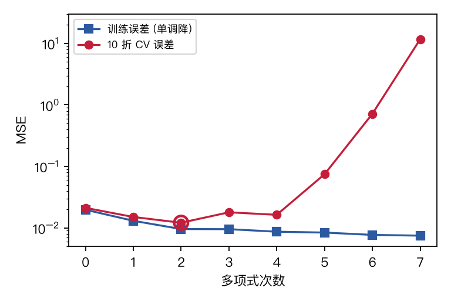
hstar = lambda x: 0.9 - 1.4 * x + 1.1 * x * x # 真值仍是 8.1 的二次 (same quadratic)
r3 = np.random.default_rng(2)
xtr = r3.uniform(0, 1, 20)
ytr = hstar(xtr) + r3.normal(0, 0.1, 20)
K = 10 # 10 折 (10 folds)
perm = r3.permutation(20)
folds = np.array_split(perm, K) # 10 个下标折 (index folds)
design = lambda x, deg: np.vander(x, deg + 1, increasing=True)
print("deg train MSE CV MSE")
for deg in range(8):
th, *_ = np.linalg.lstsq(design(xtr, deg), ytr, rcond=None)
e_tr = float(np.mean((design(xtr, deg) @ th - ytr) ** 2))
cv = []
for j in range(K): # 留出第 j 折 (hold out fold j)
te_idx = folds[j]
tr_idx = np.concatenate([folds[i] for i in range(K) if i != j])
thj, *_ = np.linalg.lstsq(design(xtr[tr_idx], deg),
ytr[tr_idx], rcond=None)
cv.append(float(np.mean((design(xtr[te_idx], deg) @ thj
- ytr[te_idx]) ** 2)))
print(f"{deg} {e_tr:.4f} {np.mean(cv):.4f}")deg train MSE CV MSE 0 0.0198 0.0212 1 0.0130 0.0151 2 0.0096 0.0121 3 0.0095 0.0179 4 0.0087 0.0163 5 0.0084 0.0746 6 0.0077 0.7168 7 0.0075 11.6922
讲义开场：“In this section, we will talk about one more tool in our arsenal for our battle against overfitting.”（对抗过拟合武器库里的又一件武器）。频率派：“This view of the as being constant-valued but unknown is taken in frequentist statistics. In the frequentist this view of the world, is not random—it just happens to be unknown—and it’s our job to come up with statistical procedures (such as maximum likelihood) to try to estimate this parameter.”（ 是固定但未知的常数；In the frequentist this view 原文如此，应作 In the frequentist view）。贝叶斯派：“An alternative way to approach our parameter estimation problems is to take the Bayesian view of the world, and think of as being a random variable whose value is unknown. In this approach, we would specify a prior distribution on that expresses our ‘prior beliefs’ about the parameters.”（先验 = 训练前的信念）。看完数据 后按贝叶斯公式更新出后验（讲义式 (9.3)）：
（脚注：“Since we are now viewing as a random variable, it is okay to condition on it value, and write instead of .”——用竖线；it value 原文如此，应作 its value）。全贝叶斯预测（讲义式 (9.4)）：“The procedure that we’ve outlined here can be thought of as doing ‘fully Bayesian’ prediction, where our prediction is computed by taking an average with respect to the posterior over .”：。难处（讲义原文）：“Unfortunately, in general it is computationally very difficult to compute this posterior distribution. This is because it requires taking integrals over the (usually high-dimensional) as in Equation (9.3), and this typically cannot be done in closed-form.”（高维积分无闭式）。实践退一步用点估计：“One common approximation is to replace our posterior distribution for … with a single point estimate. The MAP (maximum a posteriori) estimate for is given by”
“Note that this is the same formulas as for the MLE (maximum likelihood) estimate for , except for the prior term at the end.”（formulas 原文如此，应作 formula；与 MLE 唯一区别是末尾多了先验）。常用先验（讲义原文）：“a common choice for the prior is to assume that . Using this choice of prior, the fitted parameters will have smaller norm than that selected by maximum likelihood. In practice, this causes the Bayesian MAP estimate to be less susceptible to overfitting than the ML estimate of the parameters.”（高斯先验 参数范数更小 更抗过拟合）。应用：“For example, Bayesian logistic regression turns out to be an effective algorithm for text classification, even though in text classification we usually have .”（文本分类中 ，MAP 依然实用）。
Step 1 (从后验到 MAP; from posterior to MAP). 讲义给出了后验、预测分布与 MAP 三个公式（(9.3)(9.4)(9.5)——见上），并点明 MAP 与 MLE 的关系：“this is the same formulas as for the MLE … except for the prior term at the end”（只差一个先验项）。但“先验 正则化”的等价性讲义没有展开推导——下面补上。
数学补充 (Step 2)：MAP 正则. 取高斯先验 ，观测噪声 。对后验取对数、扔掉常数：
最大化它 最小化
——恰是 的岭回归！读出两个设计直觉：先验越宽（ ，越不确定）正则越弱；观测噪声越大（ 越大，数据越不可信）正则越强。同理，拉普拉斯先验 对应 正则（）。MAP 比 MLE 抗过拟合，因此 的场景（如文本分类）中贝叶斯逻辑回归依然实用。
MLE vs MAP 实测： 个带噪样本（），硬拟合五次多项式。MLE 系数剧烈震荡（，范数 70）；MAP（，）把系数全部压回一位数（范数 0.73），测试误差还略优（0.0279 vs 0.0289）。
English: MAP is MLE wearing a prior; a Gaussian prior is a soft claim that parameters stay small — exactly regularization with : noisier data raises the tax, a wider prior lowers it.
r4 = np.random.default_rng(5)
xm = r4.uniform(0, 1, 12)
ym = hstar(xm) + r4.normal(0, 0.15, 12)
sig2, tau2 = 0.15 ** 2, 0.1
lam_map = sig2 / tau2 # lambda = sigma^2 / tau^2 (MAP=ridge)
Zm = design(xm, 5) # 5 次设计矩阵 (degree-5 design)
th_mle = np.linalg.lstsq(Zm, ym, rcond=None)[0] # MLE (plain least squares)
th_map = np.linalg.solve(Zm.T @ Zm + lam_map * np.eye(6), Zm.T @ ym) # MAP (ridge)
xte = np.linspace(0, 1, 300)
yte = hstar(xte) + r4.normal(0, 0.15, 300)
mse = lambda th: float(np.mean((design(xte, 5) @ th - yte) ** 2))
print(f"lambda = sigma^2/tau^2 = {lam_map:.3f}")
print("theta MLE:", np.round(th_mle, 2),
f" ||theta|| = {np.linalg.norm(th_mle):.2f} test MSE {mse(th_mle):.4f}")
print("theta MAP:", np.round(th_map, 2),
f" ||theta|| = {np.linalg.norm(th_map):.2f} test MSE {mse(th_map):.4f}")lambda = sigma^2/tau^2 = 0.225 theta MLE: [ 0.82 -0.52 -11.28 41.77 -51.01 20.92] ||theta|| = 70.09 test MSE 0.0289 theta MAP: [ 0.62 -0.31 -0.02 0.1 0.14 0.14] ||theta|| = 0.73 test MSE 0.0279
【从这一章起进入无监督学习：数据没有标签，模型要自己“看出”结构。本章把“标签 ”换成了“隐变量 ”——这个视角贯穿第 11–13 章，也铺垫第 14 章的自监督预训练。】
任务：讲义开篇：“In the clustering problem, we are given a training set , and want to group the data into a few cohesive ‘clusters.’”（把数据分成若干内聚的“簇”）—— 照旧，但 “no labels are given… So, this is an unsupervised learning problem.”（没有标签，无监督问题）
k-means 算法（讲义原文，反复直到收敛）：
初始化：讲义：“we could choose training examples randomly, and set the cluster centroids to be equal to the values of these examples.”（随机挑 个数据点当初始中心）。若某簇分到 0 个点（空簇），就重新随机初始化该中心。 的选取没有唯一答案：看下游用途、看 - 曲线的“肘部”，或直接用第 9 章的交叉验证。
想象改作业：300 份作业要分给 3 位助教改。步骤 1：每份作业送到“离自己最近”的助教手里；步骤 2：每位助教搬到自己那摞作业的“平均位置”（校门口？实验楼？）再收一遍。两步交替，最终三位助教各守一团——这就是 k-means。实验里 从 1135.7 一路降到 116.5，第 3 次迭代后不再变化（下图从左到右：初始混乱 一次迭代后 收敛）。
English: 300 homework piles, 3 TAs: each round, hand every paper to the nearest TA, then move each TA to the mean position of their pile. Alternating the two steps is exactly k-means; in our run falls from 1135.7 to 116.5 and freezes after 3 iterations.
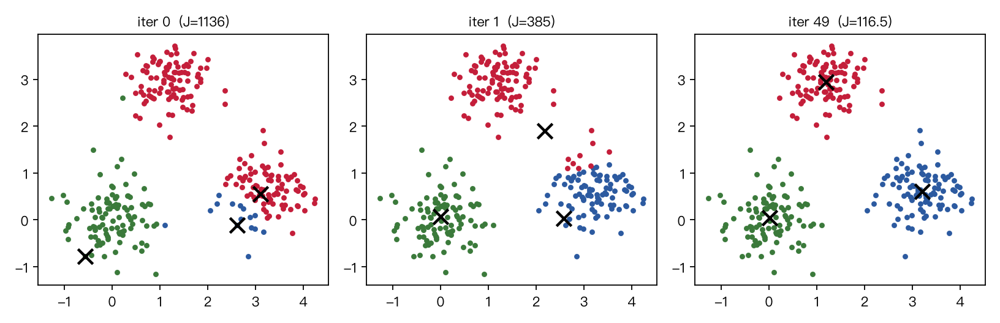
讲义先问后答：“Is the k-means algorithm guaranteed to converge? Yes it is, in a certain sense.”（k-means 保证收敛吗？是的，某种意义上）。关键在失真函数 distortion：
讲义：“J measures the sum of squared distances between each training example and the cluster centroid to which it has been assigned. It can be shown that k-means is exactly coordinate descent on .”（ = 每点到其簇中心的平方距离之和；k-means 恰是 上的坐标下降）。
Step 1 (固定 ，对 最小化; minimize over with fixed). 讲义：“the inner-loop of k-means repeatedly minimizes with respect to while holding fixed, and then minimizes with respect to while holding fixed.” 这一步里 关于每个 是 separable 的（每一项只依赖 ），逐点独立取 即全局最优。
Step 2 (固定 ，对 最小化; minimize over with fixed). 分解为 ，每个 只出现在自己的子问题里。对 求导：
子问题是凸的（平方范数的非负组合），驻点即唯一最小值——簇均值。
单调性与收敛 (monotonic decrease and convergence). 讲义：“Thus, must monotonically decrease, and the value of must converge.”（两步都不增 ，且 ，故必收敛）。严谨起见讲义补了一句：“In theory, it is possible for k-means to oscillate between a few different clusterings—i.e., a few different values for and/or —that have exactly the same value of , but this almost never happens in practice.”（理论上可能在等值 的配置间振荡，实践中几乎不发生）。
局部最优 (local optima). 讲义：“The distortion function is a non-convex function, and so coordinate descent on is not guaranteed to converge to the global minimum. In other words, k-means can be susceptible to local optima.”（ 非凸，易陷局部最优）。对策即讲义原话：“run k-means many times (using different random initial values for the cluster centroids ). Then, out of all the different clusterings found, pick the one that gives the lowest distortion .”（多随机重启，取 最小者）。
【数学补充】 坐标下降 coordinate descent：讲义只点了它的名——“k-means is exactly coordinate descent on ”。一般含义：把变量分成若干组，轮流“固定其余、最小化当前组”（block coordinate descent）。当某一组变量是离散的（如簇分配 ）时梯度下降根本无法定义，坐标法却天然适用；两组各步都有闭式解时（k-means 正是如此），每步计算量极小。注意它与 EM 的关系：11 章会看到 EM 也是一对变量 上的坐标上升。
import numpy as np
def kmeans(X, k, rng, iters=50):
mu = X[rng.choice(len(X), k, replace=False)].copy() # 随机选 k 个数据点作初始中心 (randomly pick k data points as initial centroids)
hist = []
for it in range(iters):
c = ((X[:, None, :] - mu[None, :, :]) ** 2).sum(2).argmin(1) # 步骤 1: 分配 (step 1: assign)
hist.append(float(((X - mu[c]) ** 2).sum())) # 记录失真 J (record distortion J)
for j in range(k): # 步骤 2: 更新 (step 2: update)
if (c == j).any():
mu[j] = X[c == j].mean(0)
return mu, c, hist
rng = np.random.default_rng(3)
A = rng.normal([0, 0], 0.45, (100, 2))
B = rng.normal([3.2, 0.6], 0.45, (100, 2))
C = rng.normal([1.2, 2.8], 0.45, (100, 2))
X = np.vstack([A, B, C]) # 300 个点, 真实三团 (300 points, 3 true blobs)
mu, c, hist = kmeans(X, 3, rng)
for it in range(6):
print(f"iter {it}: J = {hist[it]:.1f}")
print(f"... iter 49: J = {hist[49]:.1f} (单调不增, 收敛)")iter 0: J = 1135.7 iter 1: J = 384.9 iter 2: J = 121.1 iter 3: J = 116.5 iter 4: J = 116.5 iter 5: J = 116.5 ... iter 49: J = 116.5 (单调不增, 收敛)
讲义两句原话定调：“Very often k-means will work fine and come up with very good clusterings despite this. But if you are worried about getting stuck in bad local minima, one common thing to do is run k-means many times (using different random initial values for the cluster centroids ).”（多数时候 k-means 表现良好；担心坏局部最优，就多跑几次取最小 ）。坏初始化（比如两个中心落在同一团里）会让算法卡在差的局部最优—— 单调不增只保证收敛，不保证收敛到全局最优。
亲眼看局部最优：同样的 300 个点、同样的算法，只换随机种子重启 6 次：5 次得到 （全局最优附近），1 次卡在 ——那次两个初始中心挤在同一团里，第三团被强行一分为二。差异 5 倍，说明“多重启取最小”不是可选项而是必选项（ 大时尤其如此）。
English: same data, same algorithm, six random restarts: five land near the global optimum (), one gets stuck at because two initial centroids fall into the same blob. A 5x gap—multi-restart is a must, not an option.
Js = []
for s in range(6):
r2 = np.random.default_rng(s) # 每次重启: 不同的初始中心 (each restart: different initial centers)
mu_s, c_s, h_s = kmeans(X, 3, r2)
Js.append(h_s[-1])
print(f"restart {s}: final J = {h_s[-1]:.1f}")
print(f"多次重启取最小 J: {min(Js):.1f}")restart 0: final J = 116.5 restart 1: final J = 116.5 restart 2: final J = 116.5 restart 3: final J = 573.9 restart 4: final J = 116.5 restart 5: final J = 116.5 多次重启取最小 J: 116.5
【k-means 给每个点一个硬标签；EM 处理“每个点以一定概率属于每个成分”的软世界，是密度估计的主力算法。11.5 的 VAE 把它接到神经网络上——编码器/解码器正是第 7 章的积木。】
密度估计 density estimation：无标签数据，想拟合分布 。讲义先立联合模型：“We wish to model the data by specifying a joint distribution .”，其中 （，，），。讲义命名：“This is called the mixture of Gaussians model.”（混合高斯模型）
困难所在是讲义原话：“Also, note that the ‘s are latent random variables, meaning that they’re hidden/unobserved. This is what will make our estimation problem difficult.”（隐变量观测不到，估计因此变难）。若 已知：“the maximum likelihood problem would have been easy”（闭式解见 11.4）； 未知时似然出现 （对数里套求和），“it is not possible to find the maximum likelihood estimates of the parameters in closed form.”（无闭式解）
EM 算法（期望最大化）——讲义给两步的角色定性：“The EM algorithm is an iterative algorithm that has two main steps… in the E-step, it tries to ‘guess’ the values of the ‘s. In the M-step, it updates the parameters of our model based on our guesses. Since in the M-step we are pretending that the guesses in the first part were correct, the maximization becomes easy.“（E 步猜 ；M 步基于猜测更新参数——假装猜对了，最大化就变容易）：
讲义：“The values calculated in the E-step represent our ‘soft’ guesses for the values of .” 脚注解释软硬之别：“The term ‘soft’ refers to our guesses being probabilities and taking values in ; in contrast, a ‘hard’ guess is one that represents a single best guess (such as taking values in or ).”（软 = 概率，硬 = 唯一猜测）
与 k-means 的亲缘，讲义原话：“The EM-algorithm is also reminiscent of the K-means clustering algorithm, except that instead of the ‘hard’ cluster assignments , we instead have the ‘soft’ assignments . Similar to K-means, it is also susceptible to local optima, so reinitializing at several different initial parameters may be a good idea.”（软替换硬；同样有局部最优，多初始化是好主意）
软分配是什么感觉：300 个二维点、两个椭圆簇。EM 收敛后 ， 恢复出两个簇心（标签顺序与真值互换——置换歧义，同 13.1 的 ICA）。最有意思的是边界点 ：它落在两簇之间，EM 不强迫它站队，给出 ——“12% 属于左簇、88% 属于右簇”。k-means 只能给它一个硬标签；这就是“软”的价值。
English: after EM converges on two elliptical blobs, the boundary point gets —12% left cluster, 88% right cluster. k-means must pick a side; EM can hedge. That hedging is exactly what “soft” means.
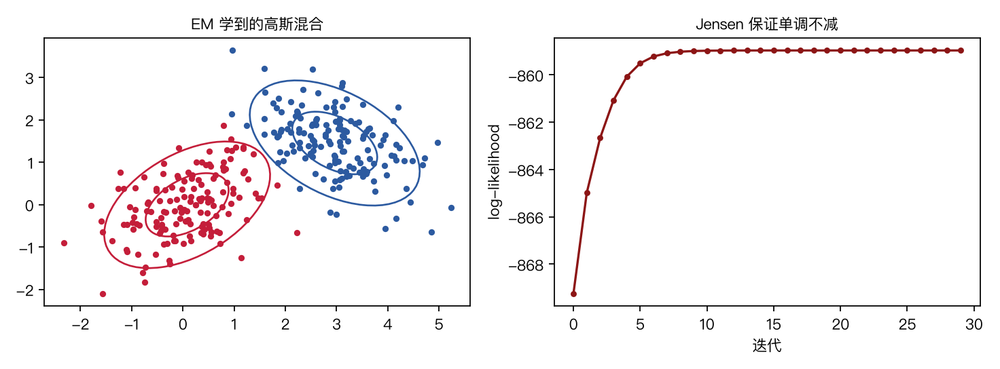
若 已知 (if the ‘s were known)：讲义：“if we knew what the ‘s were, the maximum likelihood problem would have been easy.“ 似然可分解为逐项：
分别对 求导（用 ）得 簇内均值；对 求导得簇内协方差；对 用拉格朗日得簇占比（完整推导在 11.4，含 版本）。讲义还点破与 GDA 的亲缘：“maximum likelihood estimation becomes nearly identical to what we had when estimating the parameters of the Gaussian discriminant analysis model, except that here the ‘s [are] playing the role of the class labels.“（ 扮演类标签的角色）。
若 未知 (if the ‘s are unknown)：每个点的贡献是 ，对数套求和，梯度方程互相纠缠。讲义让你亲手试试：“if we set to zero the derivatives of this formula with respect to the parameters and try to solve, we’ll find that it is not possible to find the maximum likelihood estimates of the parameters in closed form. (Try this yourself at home.)”（求导解不出闭式——在家试试看）。这才是必须用 EM 的原因；EM 的收敛性与单调性在 11.2–11.3 用 Jensen 不等式严格证明。
import numpy as np
rng = np.random.default_rng(1)
n = 300
true_mu = np.array([[0.0, 0.0], [3.0, 1.5]])
true_Sig = np.array([[[0.5, 0.2], [0.2, 0.5]], [[0.8, -0.3], [-0.3, 0.6]]])
z = rng.integers(0, 2, n) # 隐变量真值 (true latent labels; only for generating data, EM never sees them)
X = np.stack([rng.multivariate_normal(true_mu[zi], true_Sig[zi]) for zi in z])
mu = X[rng.choice(n, 2, replace=False)].copy() # 初始: 随机挑两个数据点作中心 (init: pick two data points as centers)
Sig = np.stack([np.eye(2), np.eye(2)])
phi = np.array([0.5, 0.5])
def joint_logp(X, mu, Sig, phi):
ps = []
for j in range(2):
d = X - mu[j]
inv = np.linalg.inv(Sig[j])
maha = np.einsum("ni,ij,nj->n", d, inv, d)
ps.append(np.log(phi[j]) - 0.5 * maha
- np.log(np.linalg.det(Sig[j])) / 2 - np.log(2 * np.pi))
return np.stack(ps, 1) # (n, k): log p(x_i, z=j)
def loglik(X, mu, Sig, phi):
P = joint_logp(X, mu, Sig, phi)
mx = P.max(1, keepdims=True) # log-sum-exp, 数值稳定 (numerically stable)
return float((mx[:, 0] + np.log(np.exp(P - mx).sum(1))).sum())
LL = []
for it in range(30):
P = joint_logp(X, mu, Sig, phi)
mx = P.max(1, keepdims=True)
W = np.exp(P - mx) / np.exp(P - mx).sum(1, keepdims=True) # E 步: 后验责任 w_ij (E-step: posterior responsibilities)
Nj = W.sum(0)
phi = Nj / n # M 步: 软计数替换硬计数 (M-step: soft counts replace hard counts)
mu = (W.T @ X) / Nj[:, None]
for j in range(2):
d = X - mu[j]
Sig[j] = (W[:, j][:, None] * d).T @ d / Nj[j]
LL.append(loglik(X, mu, Sig, phi))
if it < 6 or it % 5 == 0:
print(f"iter {it:>2}: log-likelihood = {LL[-1]:.1f}")
print(f"单调不减: {all(LL[i] <= LL[i+1] + 1e-6 for i in range(len(LL)-1))}")
print("估计 mu:", np.round(mu, 2).tolist(), " 真值:", true_mu.tolist())
print("估计 phi:", np.round(phi, 2).tolist(), " 真值: [0.5, 0.5]")
x_mid = np.array([1.5, 0.75]) # 两簇边界上的点 (a point on the boundary between the two clusters)
Pm = joint_logp(x_mid[None, :], mu, Sig, phi)[0]
w_mid = np.exp(Pm - Pm.max()) / np.exp(Pm - Pm.max()).sum()
print(f"边界点 {x_mid.tolist()} 的软分配 w = {np.round(w_mid, 3).tolist()}")iter 0: log-likelihood = -869.3 iter 1: log-likelihood = -865.0 iter 2: log-likelihood = -862.7 iter 3: log-likelihood = -861.1 iter 4: log-likelihood = -860.1 iter 5: log-likelihood = -859.5 iter 10: log-likelihood = -859.0 iter 15: log-likelihood = -859.0 iter 20: log-likelihood = -859.0 iter 25: log-likelihood = -859.0 单调不减: True 估计 mu: [[2.97, 1.45], [0.08, -0.01]] 真值: [[0.0, 0.0], [3.0, 1.5]] 估计 phi: [0.5, 0.5] 真值: [0.5, 0.5] 边界点 [1.5, 0.75] 的软分配 w = [0.122, 0.878]
实现提示：E 步全按 log 空间算再 log-sum-exp，避免小概率下溢；两个 初值取自不同的数据点，避免同一簇初始化两次。与 k-means 一样，EM 只保证局部最优——多初始化取最优。
EM 的两步为什么能保证似然上升？答案是 Jensen 不等式。讲义先给凸函数定义：“f is a convex function if (for all ). In the case of taking vector-valued inputs, this is generalized to the condition that its hessian is positive semi-definite.”（；向量情形 Hessian 半正定）。然后是定理原文：“Let be a convex function, and let be a random variable. Then: . Moreover, if is strictly convex, then holds true if and only if with probability 1 (i.e., if is a constant).”（凸函数：函数的期望 期望的函数；严格凸取等当且仅当 是常数）。
两个一秒验证： 以相同概率取 1 或 4：，，而 ——凹的 给出 ，这正是均值不等式 AM GM 的概率版。对 ： 恒成立——平方（凸）的 Jensen。其实方差本身就是 Jensen 的差： 凸时 ， 时这个差恰好是方差。
English: two one-second checks: equally likely gives (log is concave—the AM-GM inequality in disguise); and holds identically because squaring is convex. Variance is itself a Jensen gap.
Jensen 的证明 (proof of Jensen’s inequality)：只需对两点分布验证。设 取 的概率为 、取 的概率为 ，则 ，于是
正是凸函数定义。一般分布按连续情形取极限即得。
应用到对数似然 (applying to the likelihood)：对任意满足 、 的分布 ，讲义推导最后一步的原话：“The last step of this derivation used Jensen’s inequality. Specifically, is a concave function, since over its domain .” 于是
推导： 里套的量 ； 是凹函数，Jensen 给 ，移项即上式。
等号条件 = 取 Q 为后验 (making the bound tight)：讲义：“To make the bound tight for a particular value of , we need for the step involving Jensen’s inequality in our derivation above to hold with equality.”（要在当前 处贴住，需 Jensen 取等）。 严格凹，取等当且仅当 对所有 为同一常数，即讲义的 “This is easily accomplished by choosing ”，归一化后
讲义收束：“Thus, we simply set the Q’s to be the posterior distribution of the z’s given x and the setting of the parameters .”（取 = 后验正是 EM 的 E 步——E 步让下界贴住似然）。
【数学补充】 KL 散度 Kullback–Leibler divergence：讲义 (11.16) 定义 ，度量两个分布的差异：恒 ， 当且仅当两分布相同（Jensen 又一次出场：）；不对称，。第 0 章信息论一页纸有完整讨论。EM 与变分推断全部围绕它展开。
import numpy as np
rng = np.random.default_rng(21)
xs = np.array([1.0, 4.0]) # X 以相同概率取 1 或 4 (X takes 1 or 4 with equal probability)
print(f"E[log X] - log E[X] = {np.log(xs).mean() - np.log(xs.mean()):.4f} (<=0, 即 AM-GM)")
xx = rng.normal(0, 1, 100000)
print(f"E[X^2] - (E X)^2 = {np.mean(xx**2) - np.mean(xx)**2:.4f} (= 方差, >=0)")E[log X] - log E[X] = -0.2231 (<=0, 即 AM-GM) E[X^2] - (E X)^2 = 0.9977 (= 方差, >=0)
EM 不只属于混合高斯——讲义设定：“Suppose we have an estimation problem in which we have a training set … We have a latent variable model with being the latent variable.”（任何含隐变量 的模型都能用）。策略原话：“Maximizing explicitly might be difficult, and our strategy will be to instead repeatedly construct a lower-bound on (E-step), and then optimize that lower-bound (M-step).”（反复构造下界、再抬下界）。定义证据下界 evidence lower bound (ELBO)——讲义 (11.9)：
并给普适下界 (11.10)：“.” 直觉原话：“Intuitively, the EM algorithm alternatively updates and by a) setting … so that for and the current , and b) maximizing w.r.t while fixing the choice of .”（a) := 后验使下界贴住似然；b) 固定 最大化 ELBO）。正式算法（ 个样本各配一个 ，讲义原样）：
讲义 Remark（原文如此，缺 as）：“The EM can also be viewed an alternating maximization algorithm on , in which the E-step maximizes it with respect to …, and the M-step maximizes it with respect to .”——EM = 在 上做坐标上升。由此得到单调性保证：每次迭代 ，直到驻点（证明见下）。
数值验证两个恒等式（用 11.1 收敛后的参数）：取 = E 步的后验责任，ELBO 与对数似然完全相等（差为 0，KL ）；改取偷懒的均匀 ，ELBO 掉到 ，低了 ——这个差恰好等于 ，分毫不差。可见“E 步取后验”不是玄学，而是把 KL 压到零的唯一选择。
English: with = posterior responsibilities, ELBO equals the log-likelihood exactly (KL ); with a lazy uniform , ELBO drops by exactly . “Setting to the posterior” is not mysticism—it is the unique choice that zeroes the gap.
恒等式 (the identity)：从 ELBO 出发，代入 ：
（这就是 11.3.1 的形式：。讲义还给出另一形式 (11.15)：“”—— 不依赖 时，M 步目标 = 条件似然 KL(先验)；这正是 11.5 VAE 目标“重构项 KL 正则项”的来源。）
单调性 (monotonic improvement)：讲义目标句：“We will now prove that , which shows EM always monotonically improves the log-likelihood.” 设第 轮参数 ，E 步取 （Jensen 取等，KL ），三步链条（讲义逐行给出理由）：
第一不等式：“because inequality (11.11) holds for all and ”（下界恒成立）；第二不等式： “is chosen explicitly to be ”（M 步最大化）；末步等式来自 E 步取后验。讲义的收敛判据也实用：“one reasonable convergence test would be to check if the increase in between successive iterations is smaller than some tolerance parameter.”（相邻两轮 提升小于容差即停）。若某轮取等，则 必已是后验且 在该 下最大化 ELBO——收敛到似然的驻点（通常只是局部最优，需多初始化，见 11.1）。
# 接 11.1 的代码: 已有 X, n, mu, Sig, phi, joint_logp (continuing from 11.1)
def elbo(P, W):
return float(np.sum(W * (P - np.log(W)))) # ELBO = sum_i sum_j W_ij (log p(x_i,z=j) - log W_ij)
P = joint_logp(X, mu, Sig, phi)
mx = P.max(1, keepdims=True)
post = np.exp(P - mx) / np.exp(P - mx).sum(1, keepdims=True) # E 步得到的 Q (Q from the E-step)
ll = float((mx[:, 0] + np.log(np.exp(P - mx).sum(1))).sum())
print(f"log-likelihood = {ll:.4f}")
print(f"ELBO, Q = 后验责任 = {elbo(P, post):.4f} (差 {abs(elbo(P, post) - ll):.2e})")
Q_lazy = np.full((n, 2), 0.5)
print(f"ELBO, Q = 均匀 0.5/0.5 = {elbo(P, Q_lazy):.4f} (低 {ll - elbo(P, Q_lazy):.4f})")
kl_sum = float(np.sum(Q_lazy * (np.log(Q_lazy) - np.log(post))))
print(f"sum_i KL(Q_i || 后验_i) = {kl_sum:.4f} (应等于上面的差)")log-likelihood = -858.9677 ELBO, Q = 后验责任 = -858.9677 (差 0.00e+00) ELBO, Q = 均匀 0.5/0.5 = -2277.3343 (低 1418.3666) sum_i KL(Q_i || 后验_i) = 1418.3666 (应等于上面的差)
M 步“软计数替换硬计数”为什么恰好给出那些更新公式？讲义的 M 步目标 (11.12)：“Set .” 固定 （即固定 ）后，其中与参数有关的部分恰是“加权版”的已知- 似然：
（ 无关参数的项不影响 argmax。）讲义脚注预先解除一个顾虑：“We don’t need to worry about the constraint that , because … the solution we’ll find from this derivation will automatically satisfy that anyway.”（不用显式管 ，解自动满足）。
记 （“有效样本数”，可以是分数）。
：，左乘 ：
：。两条矩阵求导事实（对称 ）：；。于是加权梯度和为零给出
：约束 ，拉格朗日函数 。对 求导为零：，即 ；代回约束得 ：
三条更新与“若 已知”的公式逐字相同，只有指示换成了责任——讲义原话：“Also, you should contrast the updates in the M-step with the formulas we had when the ‘s were known exactly. They are identical, except that instead of the indicator functions ‘1{}’ indicating from which Gaussian each datapoint had come, we now instead have the ’s.”（软计数替换硬计数）。
【数学补充】 矩阵求导（以迹为工具）：利用 与循环性质 ，可得 、、。对对称矩阵 。这几条覆盖了高斯模型的绝大多数推导（含 GDA 的第 4 章）。
11.1 代码中的 M 步五行就是这三个公式的直接翻译：phi = Nj / n、mu = (W.T @ X) / Nj[:, None]、Sig[j] = (W[:, j][:, None] * d).T @ d / Nj[j]——逐条对应 、加权均值、加权外积均值。
讲义对 VAE 的定位：“Loosely speaking, variational auto-encoder … generally refers to a family of algorithms that extend the EM algorithms to more complex models parameterized by neural networks.”（把 EM 扩展到神经网络参数化的复杂模型）。11.3 的 EM 有个隐藏前提：E 步能算出后验 。MoG 的 是 值离散的，后验就是 Bayes 公式；讲义指出复杂模型的处境：“In many more complex models such as the model (11.19), it’s intractable to compute the exact the posterior distribution .”（原文如此；后验算不了）。
变分推断 variational inference 的思路：不再强求精确后验，讲义：“we can also aim for finding an approximation of the true posterior distribution.”（在近似中求最优）。选一族 ，解 ——KL(Q‖后验) 没法算，但 ELBO 本身可以算（或蒙特卡洛估计）。
变分自编码器 variational auto-encoder (VAE)——讲义的模型 (11.18)–(11.19)：、（解码器 是神经网络， 已知）。 取高斯 ，讲义：“Often in variational auto-encoder, and are chosen to be neural networks… often are called encoder (in the sense of encoding the data into latent code), whereas is often referred to as the decoder.”（编码器/解码器皆网络）。讲义提醒近似的代价：“We remark that of such form in many cases are very far from a good approximation of the true posterior distribution. However, some approximation is necessary for feasible optimization.”（近似可能很差，但没有它就优化不了）。
目标（逐样本）：
重参数化技巧 reparameterization trick：难点是讲义原话：“computing the gradient over and is tricky because the sampling distribution depends on and ”——一般地 ，“because the dependency of on has to be taken into account as well.” 解药是讲义的原话命名：“The idea that comes to rescue is the so-called re-parameterization trick: we rewrite in an equivalent way: where .”——随机性搬进与参数无关的 ，梯度就是普通可反传的期望。讲义还放弃交替最大化：“It turns out that we can run gradient ascent over instead of alternating maximization.”（对三者直接联合梯度上升）。
一维玩具，理论可对照：，，，。取最简单的参数化：（线性编码器）。真实后验恰好也是高斯，其闭式解为 ，——若 达到它，KL ，ELBO 贴住 。实测训练后 vs 理论 ， vs 理论 ——编码器精确收敛到真实后验。 从 0.5 爬到 1.491（真值 2.0），60 个 epoch 后仍在缓慢上升；ELBO 已贴住当前 下的 。
后验塌缩 posterior collapse：调试时若初始化不当（解码器先学会忽略 ），重构项对 的梯度趋零，KL 项独自把 拉向先验 —— 变成纯噪声，编码器“死”了， 也再学不动。实验中靠梯度裁剪 + 温和的学习率避免；这也是真实 VAE 训练的经典坑（KL 退火、free bits 都是对策）。
English: in the 1-D toy the encoder converges to the true posterior ( vs. theory ); posterior collapse is the failure mode to watch—if the decoder learns to ignore first, the KL term alone drags to the prior and the encoder “dies.” KL annealing and free bits are the standard antidotes.
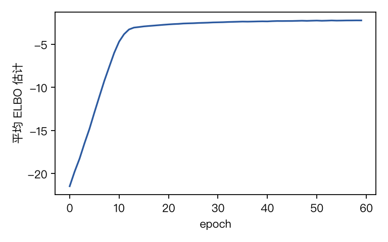
VAE 的 ELBO：把 11.3 的一般 ELBO 代入连续 、、先验 ：
一维高斯对高斯的 KL 有闭式：。取 先验（）得 ，正是代码里的 kl。
梯度（重参数化 后，对 mini 数据平均）：
第一项是重构项（链式： 依赖 ，故 显式出现在 ），后一项是 KL 的解析梯度。梯度检查（固定 ，common random numbers）三方误差 ，见运行输出。
【数学补充】 为什么不用 score-function 估计器：（REINFORCE 型）虽通用但方差巨大；重参数化把随机性与参数分离，梯度是连续函数的均值，方差小几个数量级——这是 VAE 能训练的关键。另外注意ELBO 的两项都是期望：KL 解析可算（同族分布），重构项用蒙特卡洛——讲义脚注连实践都给了：“Empirically people sometimes just use one sample to estimate it for maximum computational efficiency.”（实践中常单样本估计，方差由重参数化压低）。
import numpy as np
r = np.random.default_rng(6)
n2, sig2 = 2000, 0.3
theta_true = 2.0
z2 = r.normal(0, 1, n2)
x2 = theta_true * z2 + r.normal(0, sig2, n2) # x|z ~ N(theta z, sigma^2)
def vae_elbo(x_i, a, s, th, xi):
zz = a * x_i + s * xi # 重参数化: z = a*x + s*xi (reparameterization trick)
E = np.mean(-(x_i - th * zz) ** 2 / (2 * sig2 ** 2)
- np.log(sig2) - 0.5 * np.log(2 * np.pi)) # 重构项 (reconstruction term)
kl = ((a * x_i) ** 2 + s * s - 1 - np.log(s * s)) / 2 # KL(N(ax,s^2) || N(0,1))
return E - kl, zz
def vae_grads(x_i, a, s, th, xi):
_, zz = vae_elbo(x_i, a, s, th, xi)
g_th = np.mean((x_i - th * zz) * zz) / sig2 ** 2
g_a = np.mean(th * (x_i - th * zz) * x_i) / sig2 ** 2 - a * x_i * x_i
g_s = np.mean(th * (x_i - th * zz) * xi) / sig2 ** 2 - (s - 1 / s)
return [float(np.clip(g, -5, 5)) for g in (g_th, g_a, g_s)]
# 梯度检查: 固定 xi, 单点 x = 0.5 (grad check: fixed xi, common random numbers)
x_i = 0.5
a0, s0, th0 = 0.1, 0.8, 0.5
xi_fix = np.random.default_rng(42).normal(0, 1, 64)
g1, g2, g3 = vae_grads(x_i, a0, s0, th0, xi_fix)
def numg(idx, h=1e-6):
p = np.array([a0, s0, th0])
p[idx] += h
fp = vae_elbo(x_i, p[0], p[1], p[2], xi_fix)[0]
p[idx] -= 2 * h
fm = vae_elbo(x_i, p[0], p[1], p[2], xi_fix)[0]
return (fp - fm) / (2 * h)
print(f"grad check theta: {g1:.5f} vs 数值 {numg(2):.5f}")
print(f"grad check a : {g2:.5f} vs 数值 {numg(0):.5f}")
print(f"grad check s : {g3:.5f} vs 数值 {numg(1):.5f}")
a, s, th = 0.1, 0.8, 0.5 # 训练: 逐样本随机梯度上升 (training: per-sample stochastic gradient ascent)
eta = 0.02
curve = []
for ep in range(60):
G = np.zeros(3); E_tot = 0.0
for x_i in x2:
xi = np.random.default_rng(ep * 10000 + hash(x_i) % 9999).normal(0, 1, 8)
E, _ = vae_elbo(x_i, a, s, th, xi)
g1, g2, g3 = vae_grads(x_i, a, s, th, xi)
G += [g1, g2, g3]; E_tot += E
th = float(np.clip(th + eta * G[0] / n2, -3, 3))
a = float(np.clip(a + eta * G[1] / n2, -1.5, 1.5))
s = float(np.clip(s + eta * G[2] / n2, 0.05, 1.5))
curve.append(E_tot / n2)
theory_a = th / (th * th + sig2 ** 2)
theory_s = sig2 / np.sqrt(th * th + sig2 ** 2)
print(f"训练后: theta = {th:.3f} (真值 2.0) a = {a:.3f} (理论 {theory_a:.3f})"
f" s = {s:.3f} (理论 {theory_s:.3f})")
print(f"平均 ELBO: 开始 {curve[0]:.2f} -> 结束 {curve[-1]:.2f} (上界 log p(x) ~ -2.2)")grad check theta: -1.79211 vs 数值 -1.79211 grad check a : 1.24847 vs 数值 1.24847 grad check s : -0.82925 vs 数值 -0.82925 训练后: theta = 1.491 (真值 2.0) a = 0.649 (理论 0.645) s = 0.199 (理论 0.197) 平均 ELBO: 开始 -21.47 -> 结束 -2.24 (上界 log p(x) ~ -2.2)
【k-means/EM 找“分组”，PCA 找“低维子空间”：数据近似躺在哪个平面上？它是降维、去噪、可视化的万能预处理，只需一次特征分解。】
讲义一句话定位 PCA：“tries to identify the subspace in which the data approximately lies. PCA is computationally efficient: it will require only an eigenvector calculation.”（找出数据近似所在的子空间；只需一次特征向量计算）。动机（讲义两例 + 下游需求）：
预处理（先做再谈 PCA）——讲义：“typically we first preprocess the data by normalizing each feature to have mean 0 and variance 1. We do this by subtracting the mean and dividing by the empirical standard deviation”：
何时可省，讲义两句话都给了：“Subtracting zeros out the mean and may be omitted for data known to have zero mean (for instance, time series corresponding to speech or other acoustic signals).”（已知零均值可省中心化）；“Dividing by the standard deviation rescales each coordinate to have unit variance, which ensures that different attributes are all treated on the same ‘scale.’”（除以标准差保证同尺度；灰度图像各像素天然同尺度可省）。
为什么“最大方差方向”就是主轴：数据沿 45 度直线分布加噪声。投影到主方向 ：点被拉得开，方差大，“信息”保留多；投影到垂直方向 ：所有点挤成一团，方差小，剩下的几乎全是噪声。下图灰线是把每个点垂直投影到 上的“橡皮筋”——压扁之后，各点只剩一个标量 ，却保住了 96.5% 的方差。实测：特征值 ，1 维重构误差 ，恰约等于两个坐标噪声方差之和的一半量级——丢掉的正是噪声方向。
English: project onto and the points spread out—variance (information) preserved; project onto the perpendicular and everything collapses, leaving mostly noise. In our run the top eigenvalue keeps 96.5% of the variance, and the 1-D reconstruction error () is on the order of the injected noise.
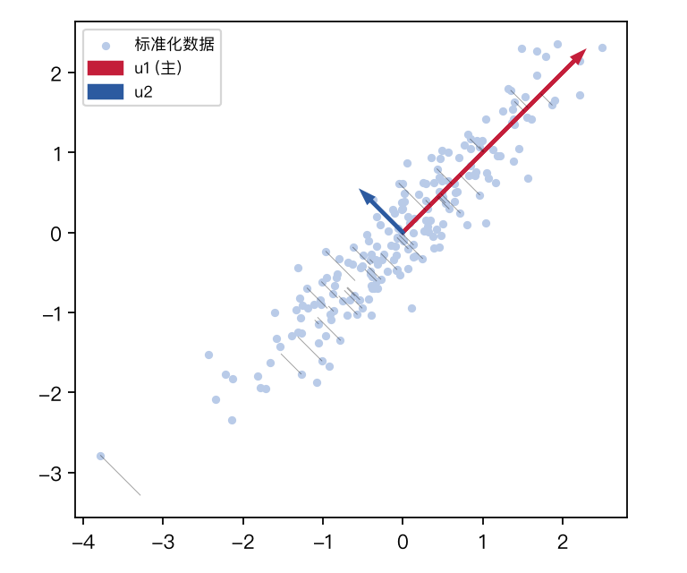
设定 (setup)：讲义把问题摆成：“One way is to pose this problem as finding the unit vector so that when the data is projected onto the direction corresponding to , the variance of the projected data is maximized.”（找单位向量 使投影方差最大）。标准化后的数据 ，经验协方差 ；投影长度 （讲义：“the length of the projection of onto is given by ”），投影均值为 0，故方差 ：
拉格朗日乘子法 (Lagrange multipliers)：。令梯度为零：
讲义脚注正是这么提示的：“try using the method of Lagrange multipliers to maximize subject to that . You should be able to show that , for some , which implies is an eigenvector of , with eigenvalue .” 代回目标：，所以最大方差 = 最大特征值 ，主方向 = 对应特征向量。讲义总结：“We easily recognize that … maximizing this subject to gives the principal eigenvector of …, which is just the empirical covariance matrix of the data (assuming it has zero mean).” 第 0 章的瑞利商（）就是这件事的一般形式。
k 个主成分 (top- eigenvectors)：讲义：“More generally, if we wish to project our data into a -dimensional subspace (), we should choose to be the top eigenvectors of . The ’s now form a new, orthogonal basis for the data.”（前 大特征向量 = 新正交基）。正交性的理由是脚注：“Because is symmetric, the ’s will (or always can be chosen to be) orthogonal to each other.” 投影坐标 ；讲义命名：“PCA is therefore also referred to as a dimensionality reduction algorithm. The vectors are called the first principal components of the data.”（前 个主成分）。保留方差 ，丢弃 ——“数据近似躺在 维子空间”等价于“后 个特征值近似为零”。
【数学补充】 谱定理：实对称矩阵必可正交对角化 （ 正交， 实对角）。这就是为什么 PCA 只需一次 eigh（对称专用，比通用 eig 稳定快）。数值上推荐用 np.linalg.eigh 并按特征值降序排。主成分的符号不唯一（ 与 同为特征向量）——与 ICA 的符号歧义（13.1）同理，不影响用途。
import numpy as np
rng = np.random.default_rng(8)
n = 200
u_true = np.array([1.0, 1.0]) / np.sqrt(2) # 真实主方向: 45 度 (true principal direction: 45 degrees)
t = rng.normal(0, 1.6, n)
X_raw = np.outer(t, u_true) + rng.normal(0, 0.3, (n, 2))
mu_f = X_raw.mean(0) # 预处理: 零均值 + 单位方差 (preprocess: zero mean, unit variance)
sig_f = X_raw.std(0)
X = (X_raw - mu_f) / sig_f
Sig = X.T @ X / n # 经验协方差 (empirical covariance)
evals, evecs = np.linalg.eigh(Sig) # 对称矩阵 -> 特征分解 (symmetric matrix -> eigendecomposition)
order = np.argsort(evals)[::-1]
evals, evecs = evals[order], evecs[:, order]
u1 = evecs[:, 0]
print("特征值:", np.round(evals, 3), " 主方向占比:",
f"{evals[0] / evals.sum():.1%}")
print("u1 =", np.round(u1, 4).tolist(), " 真实方向 = [0.7071, 0.7071] (45 度)")
proj = X @ u1
rec = np.outer(proj, u1) * sig_f + mu_f # 投影重构, 还原到原始坐标 (reconstruct by projection, back to original coords)
err = float(np.mean((rec - X_raw) ** 2))
print(f"1 维重构误差(原始坐标) = {err:.4f} (噪声方差 ~ 0.09)")特征值: [1.93 0.07] 主方向占比: 96.5% u1 = [0.7071, 0.7071] 真实方向 = [0.7071, 0.7071] (45 度) 1 维重构误差(原始坐标) = 0.0487 (噪声方差 ~ 0.09)
四大应用（讲义原文归纳）：压缩（低维 代替 ）；可视化（投到 2–3 维看聚类）；监督学习预处理（降维 假设类变小 VC 维降低，防过拟合）；去噪（RC 飞行员 karma、eigenfaces 人脸匹配）。讲义还给出第二个等价推导视角：“PCA can also be derived by picking the basis that minimizes the approximation error arising from projecting the data onto the -dimensional subspace spanned by them.”（最小化投影重构误差——最大方差与最小重构误差是同一件事的两面）。
eigenfaces 的原话值得抄：“we hope that the principal components we found retain the interesting, systematic variations between faces that capture what a person really looks like, but not the ‘noise’ in the images introduced by minor lighting variations, slightly different imaging conditions, and so on.”（主成分保留“人真正长什么样”的系统变化，滤掉光照等噪声）——效果：“This resulted in a surprisingly good face-matching and retrieval algorithm.”（出奇地好的人脸匹配）。
局限与近亲：PCA 找的是方差最大的方向，不是判别最强的方向——监督场景可用 LDA；它只捕获线性结构——非线性流形要用核 PCA 或流形学习；预处理（均值/方差缩放）的选择会改变结果。与 ICA 的分工见第 13 章：PCA 去相关，ICA 找独立源。
【ICA 与 PCA 同是“换基”，目标却根本不同：PCA 要方向方差大，ICA 要分量统计独立。招牌应用是鸡尾酒会问题——两支麦克风录到两个人同时说话，把人声分开。】
讲义开场点题：“Similar to PCA, this will find a new basis in which to represent our data. However, the goal is very different.”（同为换基，目标全然不同）。鸡尾酒会问题——讲义情景：“d speakers are speaking simultaneously at a party, and any microphone placed in the room records only an overlapping combination of the d speakers’ voices.”（ 人同时说话，每支麦克风录到的是不同的叠加）。形式化：源信号 （ 个独立源），观测
是未知的混合矩阵 mixing matrix。 次观测 ，目标是恢复源 。记 （解混矩阵 unmixing matrix），恢复即 ； 是 的第 行，。
固有歧义——讲义设问开头：“To what degree can be recovered? If we have no prior knowledge about the sources and the mixing matrix, it is easy to see that there are some inherent ambiguities in that are impossible to recover, given only the ‘s.“：
结论（讲义原话）：“so long as the data is not Gaussian, it is possible, given enough data, to recover the independent sources.”（数据足够时，非高斯源可以恢复）。
我们的实验恰好展示了全部歧义：两个源（拉普拉斯尖峰 = 想象语音的稀疏爆发；间歇正弦 = 想象带停顿的音调）线性混合成两路“录音”，Bell–Sejnowski 算法恢复出 和 的两个信号。但注意： 是负的， 的振幅也与原源不同——这正是“符号 + 缩放”两条固有歧义的活标本：波形完全对上了，幅度与符号无法复原。
English: the recovered signals match the sources with and —but one correlation is negative and the amplitudes differ: a live specimen of the sign and scaling ambiguities. The waveforms align; only volume and polarity are lost.
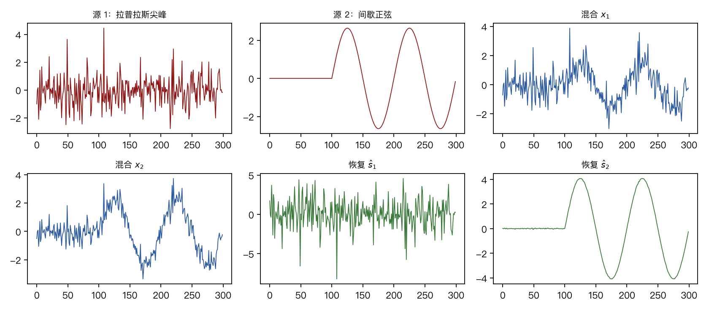
为什么高斯源不可分 (why Gaussian sources are hopeless)：直觉先由讲义给出：“Note that the contours of the density of the standard normal distribution are circles centered on the origin, and the density is rotationally symmetric.”（标准高斯的等密度线是以原点为心的圆——旋转对称）。设 ，。则
即 ——协方差里 只以 出现。取任意正交阵 （旋转/反射，），令 ：若真混合矩阵是 ，则 的分布
与 完全相同。讲义结论：“Thus, there is no way to tell if the sources were mixed using and . There is an arbitrary rotational component in the mixing matrix that cannot be determined from the data, and we cannot recover the original sources.”（旋转自由度无法从数据确定，源无法分离）。
反面 (the flip side)：希望也在讲义手里：“so long as the data is not Gaussian, it is possible, given enough data, to recover the independent sources.” 非高斯时，高阶统计量（峰度等）携带 的信息，恢复成为可能——ICA 算法正是利用非高斯性。
【数学补充】 中心极限定理视角：独立源的线性叠加 比单个源更接近高斯（CLT）。于是“找 使分量的非高斯性最大化”等价于“找独立源”——FastICA 用峰度/负熵实现这个想法；Bell–Sejnowski 的极大似然推导（13.3）殊途同归。
ICA 的极大似然推导需要回答：源密度 已知时，观测 的密度 是什么？讲义先立靶再打：“To calculate the ‘probability’ of a particular value of , it is tempting to compute , then then evaluate at that point, and conclude that ‘.’ However, this is incorrect.”（原文如此；直觉答案忘了体积缩放）。讲义的一维反例：“let … Now, let , so . Clearly, is distributed uniformly in the interval .”。正确公式：
一维推导：（）。两边对 求导：。 时积分限翻转，绝对值 吸收符号。
一般情形（体积论证）： 把单位立方体 映为体积 的集合 （行列式的几何意义）。 均匀分布于 时 均匀分布于 ，密度 ，而指示函数 ，故 。讲义 Remark 点出关键事实：“it is a standard result in linear algebra (and, indeed, one of the ways of defining determinants) that the volume of is given by .”（行列式即体积——线性代数的标准结论，也是行列式的定义方式之一）。
【数学补充】 变量替换公式（一般版）：这是多元微积分换元 在概率上的形式：， 是逆映射的雅可比矩阵。线性情形 退化为 。神经网络生成模型（normalizing flows）正是把这个公式与可逆网络连起来算似然。
讲义对算法的归属与解读：“We describe an algorithm by Bell and Sejnowski, and we give an interpretation of their algorithm as a method for maximum likelihood estimation.”（Bell–Sejnowski 算法的极大似然解读）。模型：假设各源独立——讲义：“by modeling the joint distribution as a product of marginals, we capture the assumption that the sources are independent.”（把联合写成边缘之积 = 独立性假设）：
源密度怎么选：只需指定一个 cdf（密度 = cdf 的导数）。讲义排除高斯并给默认：“we cannot choose the Gaussian cdf, as ICA doesn’t work on Gaussian data. What we’ll choose instead as a reasonable ‘default’ cdf that slowly increases from 0 to 1, is the sigmoid function . Hence, .”（logistic 密度 ）。若已知源的密度形状应当替换——讲义脚注：“If you have prior knowledge that the sources’ densities take a certain form, then it is a good idea to substitute that in here.”（见数学补充的超高斯实验注脚）。
对数似然（数据点视为独立； 需先零均值化——讲义脚注： “implies ”，logistic 导数是对称密度）：
随机梯度上升更新规则（对每个样本 ， 为学习率）——讲义：“By taking derivatives and using the fact (from the first set of notes) that , we easily derive a stochastic gradient ascent learning rule.”：
序列相关数据（语音）应随机打乱样本顺序再上升——讲义 Remark：“when implementing stochastic gradient ascent, it sometimes helps accelerate convergence if we visit training examples in a randomly permuted order.”（实现中 rng.permutation）。讲义收尾：“After the algorithm converges, we then compute to recover the original sources.”
外积项： 对 的梯度。由 ，；逐项求导 、，相加得
行列式项：（由 ）。
拼装：记 （逐元素 sigmoid），逐样本随机梯度 ——外积项按行堆进 。对全数据求和恰好给出总梯度 ，与 中的 一致。
【数学补充】 两个实践要点：① 峰度 kurtosis 定量刻画“高斯性”： 超高斯（尖峰厚尾，如 Laplace 、语音爆发）， 亚高斯（平坦，如均匀 、方波）。logistic 密度隐含超高斯先验，所以对超高斯源效果好——对亚高斯源会失败：我们最初的方波实验里，算法收敛到一个 45 度旋转解（两路输出各混一半），换成 Laplace + 间歇正弦立刻成功；这正是讲义脚注“若已知源密度形状应当替换”的实验注脚。② 白化 whiten：先做 PCA 把各方向去相关并归一化方差（实现里的 Xw），混合矩阵退化为正交阵， 只需在旋转中搜索——收敛更快更稳，是 FastICA 等实现的标准前置。
import numpy as np
rng = np.random.default_rng(11)
n3 = 2000
t3 = np.arange(n3)
s1 = rng.laplace(0, 0.6, n3) # 源 1: 拉普拉斯尖峰 (source 1: Laplace spikes, super-Gaussian)
s1 /= s1.std()
s2 = np.zeros(n3) # 源 2: 间歇正弦 (source 2: intermittent sine, super-Gaussian)
for a_, b_, amp_ in [(100, 320, 1.0), (620, 840, 0.55),
(1180, 1400, 0.9), (1660, 1880, 0.7)]:
s2[a_:b_] = amp_ * np.sin(2 * np.pi * 20 * t3[a_:b_] / n3)
s2 /= s2.std()
S = np.stack([s1, s2])
A = np.array([[0.7, 0.6], [0.5, 0.9]]) # 未知的混合矩阵 (unknown mixing matrix)
Xm = A @ S # 两支"麦克风"的观测 (two "microphone" recordings)
Xc = Xm - Xm.mean(1, keepdims=True) # 预处理 1: 零均值 (preprocess 1: centering)
C = Xc @ Xc.T / n3 # 预处理 2: 白化 (preprocess 2: whitening)
ev, V = np.linalg.eigh(C)
Xw = np.diag(ev ** -0.5) @ V.T @ Xc # 白化后协方差 = 单位阵 (covariance after whitening = identity)
W = np.eye(2) # Bell-Sejnowski 随机梯度上升 (stochastic gradient ascent)
alpha = 0.05
for ep in range(40):
order = rng.permutation(n3) # 样本相关时随机打乱顺序 (shuffle order when samples are correlated)
for i in order:
x = Xw[:, i]
gWx = 1 / (1 + np.exp(-W @ x))
W += alpha * (np.outer(1 - 2 * gWx, x) + np.linalg.inv(W.T))
S_hat = W @ Xw
def corr(a, b):
a = a - a.mean(); b = b - b.mean()
return float((a @ b) / np.sqrt((a @ a) * (b @ b)))
print(f"corr(s_hat_1, s1) = {corr(S_hat[0], s1):.3f}")
print(f"corr(s_hat_1, s2) = {corr(S_hat[0], s2):.3f}")
print(f"corr(s_hat_2, s2) = {corr(S_hat[1], s2):.3f}")
print(f"corr(s_hat_2, s1) = {corr(S_hat[1], s1):.3f}")corr(s_hat_1, s1) = -0.996 corr(s_hat_1, s2) = -0.075 corr(s_hat_2, s2) = 1.000 corr(s_hat_2, s1) = -0.027
【前 9 章的数据都自带标签或明确目标；这一章处理标签稀缺的现实：先在海量无标签数据上“自学”一个通用表示，再迁移到具体任务。这是基础模型（GPT、CLIP 等）时代的核心范式——而它只需要几条朴素思想。】
两阶段范式 (two-phase paradigm)（讲义原话）：“The foundation models paradigm consists of two phases: pretraining（预训练）and adaptation（适配）”。直觉：“the pretrained models learn good representations that capture intrinsic semantic structure/information about the data, and the adaptation phase customizes the model to a particular downstream task”（预训练学出捕捉内在语义结构的表示，适配阶段把模型定制到下游任务）。
预训练 Pretraining：只用无标签输入 ，最小化自学目标
讲义： “is a so-called self-supervised loss（自监督损失）on a single datapoint, because the ‘supervision’ comes from the data point itself”（监督信号来自数据点自己）； “is a model that is parameterized by and maps the input to some -dimensional representation ”（“People also call the embedding or features” 嵌入/特征）。训练得到 。
适配 Adaptation：下游任务带 个标注样本，“An adaptation algorithm generally takes in a downstream dataset and the pretrained model , and outputs a variant of that solves the downstream task”。四种方式：
Linear probing = regression on learned features（线性探测 = 在学到的特征上做回归）. Treat as the feature vector: the objective is isomorphic to Chapter 2′s with the raw input replaced by the learned representation . Hence every Chapter-2 result (convexity, gradients, regularization) applies verbatim（原封不动适用）.
Why freezing can suffice（为什么冻结 也够用）. If linearly separates the classes（线性可分），there exists a with zero training error—and learning such a is exactly what pretraining optimizes for. Finetuning adjusts too: it can reach a lower loss, but needs more labeled data and may “forget” the pretrained knowledge（遗忘预训练知识）.
【数学补充】 参数高效微调（超出讲义，实践标配）：微调 1750 亿参数的 GPT-3 太贵，主流做法是冻结原权重 、只训练低秩增量 ，其中 ，秩 远小于 （LoRA，Hu et al. 2021）。可训练参数从 降到 ，效果接近全量微调。它就是“线性探测”思想的升级版：承认适配只需要很小的增量。
路线一：Supervised pretraining（有监督预训练）. 讲义：“the pretraining dataset is a large-scale labeled dataset (e.g., ImageNet), and the pretrained models are simply a neural network trained with vanilla supervised learning (with the last layer being removed)”。把网络写成 ：“U is the last (fully-connected) layer parameters … are the penultimate layer activations (which serves as the representation)”——丢掉最后一层 ，倒数第二层激活即表示；下游的检测、分割任务直接用 或微调。
路线二：Contrastive learning（对比学习）（无标签）。核心问题：没有标签，怎么定义“好的表示 ”？讲义直觉：“a good representation function should map semantically similar images to similar representations, and that random pair of images should generally have distinct representations”（语义相似 表示相似；随机两图 表示不同）。没有标签就用数据增强 data augmentation造相似对：“we apply random cropping, flipping, and/or color transformation”；同一原图 的两个随机增强 是正样本对 positive pair；另一随机图 的增强与 构成负样本对 negative pair（讲义脚注：“Random pair may be a more accurate term”）。SimCLR 损失：
讲义对损失的解读：“The loss is increasing in , and thus minimizing the loss encourages … to be small … the loss is decreasing in ”（推远负对、拉近正对）。（讲义脚注：“This is a variant and simplification of the original loss that does not change the essence”——下面代码实现用的是不含正样本的 版本，本质相同。）增强引入的随机性（裁剪位置、亮度）与物体身份无关——模型为了降低损失，被迫丢弃这些噪声，只保留身份信息。
认猫实验 (Spot-the-cat)：给你看同一只猫的两个裁剪角度，再混入 23 只别的猫，问“哪两张是同一只”。要答对，你必须忽略裁剪位置和亮度（增强噪声），只记“这只猫长什么样”。 English: pick the matching pair of crops among 23 distractor cats. To succeed you must ignore crop position and brightness—the augmentation noise—and remember only “what this cat looks like.”
实验：网络主动丢噪声 (the network actively discards noise)：构造 24 个不同“身份”的样本（圆上的 24 个方向），每个身份的两个增强视图在第 3 维带上独立的纯噪声 。让表示族可调： 用系数 控制第 3 维的权重。结果：（保留噪声维）时正样本对 、损失 ；（丢弃噪声维）时正对 、损失降到 ； 处的数值导数 ，即应减小 。最优 ——网络主动丢弃纯噪声维度。负样本对的 几乎不变（）：丢掉噪声不损失判别力。 English: with weight on the noise dimension, the optimal representation is —the model actively discards it—while negative-pair cosines barely move: nothing discriminative is lost.
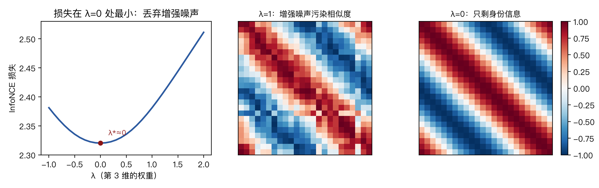
InfoNCE is a softmax classification（InfoNCE 就是一个 softmax 分类）. View as “classes”: the model must recognize, among distractors, the true partner of . The similarity plays the role of the score（打分）for class , and the loss is exactly a negative log-likelihood:
—isomorphic to the softmax loss of Chapter 3（与第 3 章 softmax 回归同构）. Its gradient w.r.t. automatically pulls positive pairs together and pushes negative pairs—especially the similar ones—apart.
Why is optimal here（为什么本例最优是 ）. The 3rd coordinate is independent of identity: in the two views it is independent noise. It dilutes the positive-pair cosine（稀释正对余弦：）while the negative pairs are already near-orthogonal and barely affected—即它只伤分子、不帮分母. Hence pushing its weight to is strictly better（严格更优）.
【数学补充】 InfoNCE 与互信息（超出讲义）：可以证明最小化 InfoNCE 等价于最大化两个视图间互信息 的一个下界（van den Oord et al. 2018）——对比学习是在“最大化数据不同视角共享的信息”。温度 ：实践版本把相似度先除以 再 softmax：。 小 梯度集中在“最难的负样本”上， 大 平等对待全部负样本；SimCLR 论文中 左右最好。
import numpy as np
rng = np.random.default_rng(0)
n, s_ = 24, 0.5
ang = np.arange(n) * 2 * np.pi / n + 0.03 * rng.standard_normal(n) # 24 个不同"身份" (24 distinct identities)
base = np.stack([np.cos(ang), np.sin(ang)], axis=1)
views = []
for e in [rng.standard_normal(n), rng.standard_normal(n)]: # 同一身份的两个增强视图 (two augmented views of one identity)
views.append(np.concatenate([base, (s_ * e)[:, None]], axis=1))
def phi(Vx, lam): # 表示族: 第 3 维权重 λ (representation family: weight λ on dim 3)
Z = Vx * np.array([1.0, 1.0, lam])
return Z / np.linalg.norm(Z, axis=1, keepdims=True)
def infoNCE(Za, Zb): # InfoNCE 损失 (InfoNCE loss)
S = Za @ Zb.T
off = S - 1e9 * np.eye(S.shape[0]) # 屏蔽对角线(正样本) (mask the diagonal = positive pairs)
mx = off.max(axis=1, keepdims=True)
lse = (mx + np.log(np.exp(off - mx).sum(axis=1, keepdims=True)))[:, 0]
return float(np.mean(lse - np.diag(S)))
def cos_stats(lam):
S = phi(views[0], lam) @ phi(views[1], lam).T
m = S.shape[0]
return float(np.mean(np.diag(S))), float((S.sum() - np.trace(S)) / (m * (m - 1)))
grid = np.linspace(-1, 2, 31)
losses = [infoNCE(phi(views[0], l), phi(views[1], l)) for l in grid]
lam_star = grid[int(np.argmin(losses))]
for lam in [1.0, 0.0]:
pc, nc = cos_stats(lam)
print(f"λ={lam}: 正样本对 cos={pc:.3f}, 负样本对 cos={nc:.3f}, "
f"InfoNCE loss={infoNCE(phi(views[0], lam), phi(views[1], lam)):.3f}")
eps = 1e-3 # 数值梯度 (numerical gradient)
g = (infoNCE(phi(views[0], 1 + eps), phi(views[1], 1 + eps))
- infoNCE(phi(views[0], 1 - eps), phi(views[1], 1 - eps))) / (2 * eps)
print("dL/dλ 在 λ=1 处 =", round(g, 3), "（正值 → 沿减小 λ 方向下降）")
print("最优 λ* =", round(lam_star, 2), "（增强噪声维度被丢弃）")λ=1.0: 正样本对 cos=0.900, 负样本对 cos=-0.032, InfoNCE loss=2.381 λ=0.0: 正样本对 cos=1.000, 负样本对 cos=-0.043, InfoNCE loss=2.320 dL/dλ 在 λ=1 处 = 0.114 （正值 → 沿减小 λ 方向下降） 最优 λ* = 0.0 （增强噪声维度被丢弃）
语言建模 Language modeling。讲义定义：“A language model is a probabilistic model representing the probability of a document, denoted by . This probability distribution is very complex because its support size is —exponential in the length of the document”（支持集大小 ，对长度指数）。出路是用链式法则 chain rule of conditional probability 分解（式 14.5）：
神经语言模型 (neural LM)（讲义 14.3 的记号）：
温度采样 temperature。讲义：“people often introduce a parameter named temperature to further adjust the entropy/sharpness of the generated distribution”：。“When , the text is sampled from the original conditional probability … With a decreasing , the generated text gradually becomes more ‘deterministic’. reduces to greedy decoding, where we generate the most probable next token”（ 贪心； 更随机、更有“创意”）。
Zero-shot 与 in-context learning（上下文学习）（14.3.2）。讲义：“Zero-shot adaptation or zero-shot learning is the setting where there is no input-output pairs from the downstream tasks … the task is formatted as a question or a cloze test form via natural language”（把任务写成自然语言问题，取 argmax 下一个词）。“In-context learning is mostly used for few-shot settings … we construct a document , which is more commonly called a ‘prompt’, by concatenating the labeled examples and the text example”——模型不做任何参数更新就能照做；它相当于 14.1 的 few-shot 适配，只是“适配”发生在前向计算里。
Bigram：可完全手写的最小语言模型 (the smallest LM you can write by hand)。只统计相邻两词的共现：。9 句的小语料、词表 12 个词：
English: greedy decoding loops forever (deterministic, and its path never reaches “.”); is diverse, fluent, and knows how to stop at “.”; corrodes grammar with randomness.
链式法则实操 (chain rule in action)：——8 个条件概率连乘。语言模型的一切下游应用（翻译、问答）都建立在这个连乘上。 English: eight conditional probabilities multiplied together—every downstream application (translation, QA) stands on this product.
Chain rule（链式法则，式 14.5）. Apply repeatedly:
讲义关键观察：分解后 “the support size of each of the conditional probability distributions … is ”——每个条件分布只含 个自由度，可估；而联合分布的 不可估。
MLE cross-entropy（极大似然 = 最小交叉熵，式 14.8）. Maximize ; take the negative log and the loss factorizes over positions:
—等价于“在每个位置做一次 类 softmax 分类”（a -way softmax classification at every position）。
Limits of temperature（温度的极限行为）. Let . The ratio of component to the largest component is as for every , so the distribution concentrates on the （贪心）; as all ratios and the distribution becomes uniform（均匀）.
【数学补充】 温度的物理来源： 就是统计物理的 Boltzmann 分布—— 是“能量”， 是温度；低温冻结成基态（贪心），高温熔成均匀分布。马尔可夫链视角：bigram 的 按行拼起来是一个行随机矩阵——最朴素的语言模型是一条马尔可夫链。15 章的 MDP 也建立在转移矩阵上：语言模型“预测下一步是什么词”，MDP“预测走一步到哪个状态”——结构是表兄弟，只是后者多了“你可以选择动作”。
import numpy as np
corpus = ["the cat sits on the mat .", "the dog sits on the mat .",
"the cat chases the dog .", "the dog chases the cat .",
"a bird sits on the log .", "the bird sees a dog .",
"the dog sees the bird .", "the cat chases the bird .",
"a cat sees a dog ."]
V = sorted({w for s in corpus for w in s.split()}) # 词表 (vocabulary)
idx = {w: i for i, w in enumerate(V)}
C = np.zeros((len(V), len(V))) # 二元计数矩阵 (bigram count matrix)
for s in corpus:
ws = s.split()
for a, b in zip(ws[:-1], ws[1:]):
C[idx[a], idx[b]] += 1
tot = C.sum(axis=1, keepdims=True)
P = np.where(tot > 0, C / np.maximum(tot, 1.0), 1.0 / len(V)) # MLE + 均匀兜底 (MLE with uniform fallback)
top = np.argsort(-P[idx["the"]])[:3]
print("词表大小:", len(V))
print("P(·|the) top-3:", ", ".join(f"{V[i]} {P[idx['the'], i]:.3f}" for i in top))
rng = np.random.default_rng(7)
for tau in [0.0, 0.7, 1.5]: # 温度采样 (temperature sampling)
w, out = "the", []
for _ in range(10):
if tau == 0.0:
w = V[int(np.argmax(P[idx[w]]))] # 贪心解码 (greedy decoding)
else:
p = P[idx[w]] ** (1 / tau) # 温度 τ 软化 (temperature τ softening)
p = p / p.sum()
w = V[int(rng.choice(len(V), p=p))]
out.append(w)
if w == "." and tau > 0:
break
print(f"τ={tau}: {' '.join(out)}")
toks = "the cat chases the dog .".split() # 链式法则
p = 1.0
for a, b in zip(toks[:-1], toks[1:]):
p *= P[idx[a], idx[b]]
print("链式法则 p(the cat chases the dog .) =", round(p, 4))词表大小: 12 P(·|the) top-3: cat 0.286, dog 0.286, bird 0.214 τ=0.0: cat chases the cat chases the cat chases the cat τ=0.7: dog sits on the cat sits on the dog . τ=1.5: cat chases the cat chases the mat . 链式法则 p(the cat chases the dog .) = 0.0163
【换一个问题：不是“预测 ”，而是“选择动作使长期回报最大”。奖励只告诉你做得好不好，不告诉你正确动作是什么——教练只喊“好球/坏球”，不示范动作。本章前两节解决“模型已知怎么规划”，后两节解决“模型未知怎么学”。】
Markov decision process（马尔可夫决策过程）。讲义定义：“A Markov decision process is a tuple , where”：
动力学：选 ，；选 ，；……目标：“Our goal in reinforcement learning is to choose actions over time so as to maximize the expected value of the total payoff（期望总回报）”；贴现的直觉：“to make this expectation large, we would like to accrue positive rewards as soon as possible (and postpone negative rewards as long as possible)”（尽早拿正奖励、尽量推迟负奖励）。
策略与价值 (policy and value function)。讲义：“A policy is any function mapping from the states to the actions”；价值函数：“We define the value function for a policy ”：
讲义解读：“ is simply the expected sum of discounted rewards upon starting in state , and taking actions according to ”（站在 、从此按 走，预计能拿到的总分）。它满足 Bellman 期望方程 Bellman equations：
讲义：“This says that the expected sum of discounted rewards … consists of two terms: First, the immediate reward that we get right away, and second, the expected sum of future discounted rewards”（当期 + 未来两部分）；“Bellman’s equations can be used to efficiently solve for ”—— 个方程、 个未知数，线性，可精确求解。最优价值函数满足 Bellman 最优方程（式 15.1–15.2，非线性，含 ）：
讲义强调：“The same policy attains the maximum in Equation (15.1) for all states ”——一个 同时对所有状态最优：“we can use the same policy no matter what the initial state of our MDP is”（不像一般优化里“换个起点换套最优解”）。
网格世界 (Gridworld)： 迷宫，每走一步罚 （鼓励快点到终点），右上角是终点（奖励 ，游戏结束）。风不确定：按想走的方向走只有 ，各 滑向两侧。 English: a maze costing per step, terminal in the top-right corner; wind makes each intended action succeed with probability and slip sideways with each.
（左上角）——“从这里出发，就算走得最优，平均也要再挨约 的罚”。（终点旁）。 把地图变成“海拔”：越靠近终点越值钱，跟着“海拔上升最快的方向”走就是好策略——下一节会看到最优策略恰好长这样。 English: turns the map into an “altitude” profile—closer to the goal is worth more—and climbing the altitude gradient is exactly what the optimal policy does (next section).
Bellman expectation equation, derived（Bellman 期望方程的推导）. Expand one step only: ; by linearity of expectation pull out （期望线性性）; by the Markov property the conditional law after depends only on , and the remainder is exactly :
Matrix form（矩阵形式，闭式解）. Stack all states into the vector and the policy’s transitions into the matrix (entry ):
exists: and rows of sum to , so the Neumann series（诺伊曼级数） converges（第 项 = “走 步的总折扣贡献”，几何衰减）.
Bellman optimality equation（Bellman 最优方程）. Replace “” by “” and the equation turns nonlinear—no longer solvable in one shot, which is exactly what the two algorithms of 15.2 attack（这正是 15.2 两种迭代算法的对象）. Plugging back into the yields a that attains the for every state simultaneously（逐状态同时最优）.
【数学补充】 Contraction mapping（压缩映射）与 Banach fixed-point theorem（Banach 不动点定理）（超出高等数学/线性代数，值迭代的全部收敛理论源于此）。 is a -contraction if （任意两点经 后至少靠近 倍）。定理：on a complete metric space, a contraction has a unique fixed point , and the iteration converges geometrically from any :
Proof（3 行）：，令 得 ；唯一性：若 都是不动点，则 ，而 强制 。
Bellman optimality operator（Bellman 最优算子） is a -contraction in （讲义 16.1 原话：“the Bellman operator is a -contracting operator”）。两个中间不等式——（ is 1-Lipschitz）与 （an expectation is an average: it never amplifies errors 期望是平均，不放大误差）——每步把逐状态的最大误差至少压缩到 倍。 值迭代收敛 + 收敛速度，全部来自 Banach。
两个解 Bellman 最优方程的算法（讲义前提：“we will also assume that we know the state transition probabilities and the reward function ”）：
价值迭代 (value iteration)。讲义 Algorithm 4：“For each state , initialize ”，然后重复更新（式 15.4）：“For every state, update ”——“This algorithm can be thought of as repeatedly trying to update the estimated value function using Bellman Equations (15.2)”（全部状态同步更新）：
讲义：“This is called a synchronous update. In this case, the algorithm can be viewed as implementing a ‘Bellman backup operator’”; “Alternatively, we can also perform asynchronous updates”（逐状态原地更新，立即使用最新值，信息传播常更快）；“Under either synchronous or asynchronous updates, it can be shown that value iteration will cause to converge to ”——由压缩性，每轮检查 ， 时停止，此时真实误差 。
策略迭代 (policy iteration)。讲义 Algorithm 5：“Initialize randomly”，重复两步直到不变——
对比：讲义脚注 2：“value iteration cannot reach the exact in a finite number of iterations, whereas policy iteration with an exact linear system solver, can”（值迭代只能渐近收敛，策略迭代可精确到达）。讲义还比较了代价：“For small MDPs, policy iteration is often very fast … for MDPs with large state spaces, solving for explicitly would involve solving a large system of linear equations … value iteration may be preferred”。讲义 15.5 指出两者是一条谱系的两端：策略求值只做 步迭代再改进（ 加改进 值迭代的一步； 策略迭代），中间任意——“求值不必彻底”的 generalized policy iteration（广义策略迭代）是现代 RL（actor-critic）的骨架。
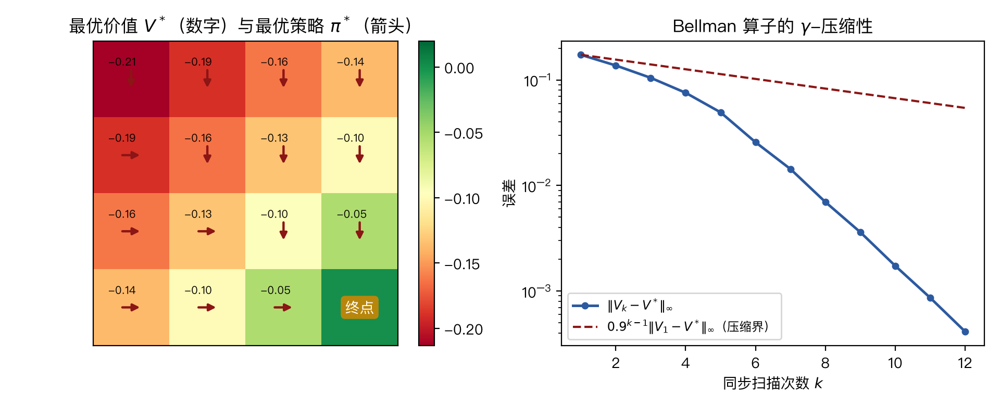
Policy iteration terminates in finitely many steps（策略迭代为何有限步收敛）. Policy improvement theorem（策略改进定理）—greedy w.r.t. is never worse than :
（第一个等号是 的定义， 因为 不小于任何特定动作，最后一步是 的 Bellman 期望方程。）只要改进严格发生， 归纳到整条轨迹；策略只有 个，严格改进不可能无限次——终止时无改进空间，即 满足 Bellman 最优方程， 。这就是“策略迭代精确、值迭代渐近”的原因（讲义脚注特别强调了这一点）。
Error bound of value iteration（值迭代的误差界）. while , so by the -contraction:
停机判据 时 （把 与几何收敛拼接）.
import numpy as np
# 4x4 网格世界: 动作 [上,下,左,右], 80% 朝目标, 各 10% 滑向两侧 (gridworld: 80% intended direction, 10% each side)
n, gamma = 4, 0.9
dirs = [(-1, 0), (1, 0), (0, -1), (0, 1)]
goal = 15
def rc(s):
return s // n, s % n
def trans(s, a): # P(.|s,a) 的稀疏字典 (sparse dict of P(.|s,a))
r, c = rc(s)
out = {}
for k, p in zip([a, (a + 2) % 4, (a + 3) % 4], [0.8, 0.1, 0.1]):
r2, c2 = r + dirs[k][0], c + dirs[k][1]
s2 = goal if (r2, c2) == (3, 3) else (r2 * n + c2 if
(0 <= r2 < n and 0 <= c2 < n) else s)
out[s2] = out.get(s2, 0.0) + p
return out
R = np.full(16, -0.04); R[goal] = 0.0
S = 15 # 非终点状态数 (number of non-terminal states)
V = np.zeros(16)
def sweep(V): # 一次同步 Bellman 扫描 (one synchronous Bellman sweep)
Vn = V.copy()
for s in range(S):
Vn[s] = R[s] + gamma * max(sum(p * V[s2] for s2, p in trans(s, a).items())
for a in range(4))
return Vn
errs, k = [], 0
while True: # 值迭代 (value iteration)
Vn = sweep(V)
d = np.abs(Vn - V).max(); V = Vn; k += 1
errs.append(d)
if d < 1e-9:
break
Vstar = V.copy()
print("value iteration 收敛:", k, "次同步扫描 (Δ<1e-9)")
print("V*(左上角) =", round(Vstar[0], 4), " V*(终点旁) =", round(Vstar[14], 4))
pi = np.zeros(16, dtype=int) # 从 V* 贪心提取 π* (extract π* greedily from V*)
for s in range(S):
pi[s] = int(np.argmax([sum(p * Vstar[s2] for s2, p in trans(s, a).items())
for a in range(4)]))
rng = np.random.default_rng(5)
pi2 = rng.integers(0, 4, S) # 策略迭代: 随机初始策略 (policy iteration: random initial policy)
outer = 0
while True:
Pm = np.zeros((S, S)); Rv = np.zeros(S)
for s in range(S):
for s2, p in trans(s, int(pi2[s])).items():
if s2 < S:
Pm[s, s2] += p
Rv[s] = R[s]
Vpi = np.linalg.solve(np.eye(S) - gamma * Pm, Rv) # 策略求值: 解线性方程组 (policy evaluation: solve the linear system)
newpi = np.array([int(np.argmax([sum(p * (Vpi[s2] if s2 < S else 0.0)
for s2, p in trans(s, a).items()) for a in range(4)]))
for s in range(S)])
outer += 1
if np.all(newpi == pi2): # 策略不再改变 -> 收敛 (policy unchanged → converged)
break
pi2 = newpi
print("policy iteration 外层迭代:", outer, "次; 与 VI 策略一致:", bool(np.all(pi2 == pi[:S])))
V = np.zeros(16); ok = True; ratios = []; errs_c = [] # 压缩性: 逐步验证收缩不等式 (verify the contraction inequality step by step)
for kk in range(12):
Vn = sweep(V)
e = np.abs(Vn - Vstar).max()
if kk > 0:
ratios.append(e / errs_c[-1])
ok &= e <= gamma * errs_c[-1]
errs_c.append(e)
V = Vn
print("收缩不等式 ||BV−V*|| ≤ γ||V−V*|| 前 11 步全部成立:", ok)
print("误差比 e_k/e_{k-1} (前5):", [round(float(r), 3) for r in ratios[:5]], "≤ γ=0.9")value iteration 收敛: 30 次同步扫描 (Δ<1e-9)
V*(左上角) = -0.2131 V*(终点旁) = -0.0539
policy iteration 外层迭代: 4 次; 与 VI 策略一致: True
收缩不等式 ||BV−V*|| ≤ γ||V−V*|| 前 11 步全部成立: True
误差比 e_k/e_{k-1} (前5): [0.792, 0.764, 0.721, 0.653, 0.521] ≤ γ=0.9现实中 通常未知——你只能让机器人去试。讲义：“In many realistic problems, we are not given state transition probabilities and rewards explicitly, but must instead estimate them from data. (Usually, , and are known.)” 此时手里只有经验 experience：一串试验 （每步带一个动作），即三元组流 。模型学习（model-based RL）分两步：先用经验把 MDP 估出来，再把估出的模型当真模型跑 15.2 的规划。
MLE 估计（讲义式 15.5）：“Given this ‘experience’ in the MDP consisting of a number of trials, we can then easily derive the maximum likelihood estimates for the state transition probabilities”：
讲义：“Or, if the ratio above is ‘0/0’—corresponding to the case of never having taken action in state before—then we might simply estimate to be ”（兜底取均匀分布 ）。奖励同理：“we can also pick our estimate of the expected immediate reward in state to be the average reward observed in state ”。
warm start（热启动）：讲义的具体建议：“if instead of initializing value iteration with , we initialize it with the solution found during the previous iteration of our algorithm, then that will provide value iteration with a much better initial starting point and make it converge more quickly”（数据流式到来时用上一轮的 作初值——模型只小改一点， 也只小改一点，几步扫描就重新收敛）。
经验越多，规划越准 (more experience → better planning)：同一网格世界，随机撒 采经验（ 个 对）：
价值误差稳步降 5 倍多。一致率反而降一格不是退步： 在近打平的格子上翻面纯属噪声，价值误差才是主要指标——这也是评估 RL 的通用教训：看值函数误差，别只看动作是否相同。 English: the value error shrinks by over as experience grows; the policy-agreement rate dropping by one state is not a regression— flips on near-ties purely by noise, so the value error is the metric to watch (a general lesson for evaluating RL).
MLE, derived（MLE 的推导）. Fix ; let count arrivals at and the total. The likelihood is
with constraints . The Lagrangian（拉格朗日函数）, differentiated w.r.t. and set to zero, gives ; substitute the normalization constraint to get , i.e. ——“频率即概率”，且凹的 保证全局最优.
【数学补充】 Laplace smoothing（拉普拉斯平滑）（超出讲义，更优雅的兜底）：均匀兜底把未访问的 一律填 ，与已访问部分的估计不连贯。贝叶斯做法：给多项分布配 Dirichlet 先验 （conjugate prior 共轭先验），后验均值
未访问时不是硬编码的 而是随 平滑变化的先验均值； 时回到 MLE。这就是文本分类里的 Laplace 平滑。
# 接上一节的网格世界: trans / R / gamma / S / Vstar / pi (reuse the gridworld from the previous section)
rng = np.random.default_rng(1)
def learn_vi(n_exp): # 模型学习 + 值迭代 (model learning + value iteration)
cnt = np.zeros((S, 4, 16)); vis = np.zeros((S, 4))
for _ in range(n_exp): # 从均匀(s,a)采经验 (sample experience from uniform (s,a))
s = int(rng.integers(S)); a = int(rng.integers(4))
s2s = trans(s, a)
u = rng.random(); acc = 0.0
for s2, p in s2s.items(): # 按真实 P_sa 采一个后继 (sample one successor from the true P_sa)
acc += p
if u <= acc:
cnt[s, a, s2] += 1
break
vis[s, a] += 1
Phat = np.full((S, 4, 16), 1.0 / 16) # MLE: 计数比; 未访问 -> 均匀兜底 (MLE count ratios; unvisited → uniform fallback)
for s in range(S):
for a in range(4):
if vis[s, a] > 0:
Phat[s, a] = cnt[s, a] / vis[s, a]
Rhat = R.copy()
V = np.zeros(16)
for _ in range(600): # 在估计的模型上跑值迭代 (run value iteration on the estimated model)
Vn = V.copy()
for s in range(S):
Vn[s] = Rhat[s] + gamma * max(
sum(pp * V[s2] for s2, pp in zip(range(16), Phat[s, a]) if s2 < S or s2 == goal)
for a in range(4))
if np.abs(Vn - V).max() < 1e-9:
V = Vn; break
V = Vn
pi_hat = np.zeros(S, dtype=int)
for s in range(S):
pi_hat[s] = int(np.argmax([
sum(pp * (V[s2] if s2 < S else 0.0) for s2, pp in zip(range(16), Phat[s, a]))
for a in range(4)]))
return pi_hat, V, int((vis == 0).sum())
V = np.zeros(16) # 真实 V*, π* 作参照 (true V*, π* for reference)
for _ in range(600):
Vn = V.copy()
for s in range(S):
Vn[s] = R[s] + gamma * max(sum(p * V[s2] for s2, p in trans(s, a).items())
for a in range(4))
if np.abs(Vn - V).max() < 1e-9:
break
V = Vn
pi_true = np.array([int(np.argmax([sum(p * V[s2] for s2, p in trans(s, a).items())
for a in range(4)])) for s in range(S)])
for n_exp in [300, 6000]:
pi_hat, Vhat, nmiss = learn_vi(n_exp)
agree = int((pi_hat == pi_true).sum())
verr = float(np.abs(Vhat[:S] - V[:S]).max())
print(f"经验 {n_exp:>5} 条: 未访问(s,a)对 {nmiss:>2} → 均匀兜底; "
f"max|V̂−V*| = {verr:.3f}, 策略一致率 {agree}/15 = {agree/15:.0%}")经验 300 条: 未访问(s,a)对 0 → 均匀兜底; max|V̂−V*| = 0.028, 策略一致率 12/15 = 80% 经验 6000 条: 未访问(s,a)对 0 → 均匀兜底; max|V̂−V*| = 0.005, 策略一致率 11/15 = 73%
状态连续（机器人关节角、小车位置……）时 不再是一张可以枚举的表——讲义：“We now discuss algorithms for MDPs that may have an infinite number of states”，。两条路线：
路线一：Discretization（离散化）。“Perhaps the simplest way to solve a continuous-state MDP is to discretize the state space”。第二个缺点讲义点名 “the curse of dimensionality（维数灾难）”：“we discretize each of the dimensions of the state into values. Then the total number of discrete states we have is . This grows exponentially quickly in the dimension of the state space ”；、每维 100 档 个状态，“far too many to represent even on a modern desktop computer”。第一个缺点：“it assumes that the value function takes a constant value over each of the discretization intervals (i.e., that the value function is piecewise constant in each of the gridcells)”——把光滑的价值函数变成阶梯函数，“no generalization over the different grid cells”。经验法则：“discretization usually works extremely well for 1d and 2d problems … you may even get it to work for some 6d problems. But it very rarely works for problems any higher dimensional than that.”
路线二：Fitted value iteration（拟合值迭代）。讲义：“We now describe an alternative method … in which we approximate directly, without resorting to discretization. This approach, called value function approximation, has been successfully applied to many RL problems”。前提是有模拟器 simulator：“a black-box that takes as input any (continuous-valued) state and action , and outputs a next-state sampled according to the state transition probabilities”。核心思想：“The main idea of fitted value iteration is that we are going to approximately carry out this step, over a finite sample of states . Specifically, we will use a supervised learning algorithm—linear regression in our description below—to approximate the value function”：。算法（目标是式 15.8 的更新）：
重要警告（讲义原话）：“Unlike value iteration over a discrete set of states, fitted value iteration cannot be proved to always to converge. However, in practice, it often does converge (or approximately converge), and works well for many problems.”——本书第一个没有收敛保证的算法。
确定性捷径：讲义：“if we are using a deterministic simulator/model of the MDP, then fitted value iteration can be simplified by setting ”（“a single example is sufficient to exactly compute that expectation”）；更一般的近似（式 15.10–15.11）：“”——“So long as the noise terms are small, this will usually be a reasonable approximation.”
神经网络视角：把 换成神经网络就是 DQN 的雏形——固定状态池对应 experience replay， 用旧网络算对应 target network 的由来。
双积分器 (double integrator)（直轨上推小车，状态 ）：好在这个 toy 有精确解可对照（16.2 的 Riccati 方程）——一张完美的考卷。拟合值迭代（300 个状态、每状态 40 个后继样本、二次多项式特征 6 个）在第 183 次扫描收敛： 与 Riccati 精确解最大系数差仅 ，在 400 个全新状态上两种策略一致率 。 English: a toy problem with ground truth—the fitted solution matches the exact Riccati solution to within in coefficients, with policy agreement on 400 fresh states.
调试血泪史 (debugging war stories)（有教学价值）：最初把动作惩罚设 （不罚用力）且动作网格只取 3 档，算法“收敛”到了 的假不动点——价值函数不可能为正（代价全是减分项），这是讲义警告 “cannot be proved to always to converge” 的活生生例子。三件套修法：① 罚动作，防最优增益爆炸；② 动作网格加密到 17 档且覆盖 的实际范围；③ 共同随机数 common random numbers——每个状态给所有动作同一组后继噪声，让 里各动作的“运气”完全相同、互相抵消。 English: with unpenalized actions and a coarse action grid, the algorithm “converged” to a spurious fixed point with —impossible, since all rewards are costs. The fix: penalize actions, refine the grid, and share random numbers across actions so the compares apples to apples.
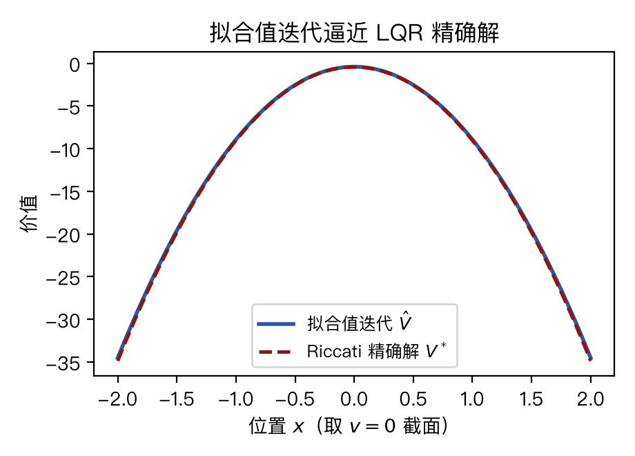
Why common random numbers work（共同随机数为什么有效）. . If each action samples independent noise, the picks the luckiest successor set—the estimate is systematically biased upward（系统性偏高）; the inflated raises next round’s positive feedback divergence（我们观测到的假不动点由此而来）. With the same shared across actions, the is decided mainly by the deterministic part ——噪声不改变 ，只在均值里抵消.
For quadratic it is even unbiased（对二次 甚至是无偏的）. If , then
—the mean term is noise-free（16 章 Fact 3 的同源恒等式）, so the Monte-Carlo mean is nearly unbiased under CRN. 这就是为什么本例能贴到小数点后一位.
Why “regression” destroys the convergence guarantee（为什么“回归”破坏了收敛保证）. The Bellman operator contracts in , but the actual map of fitted VI is : compute the true , then project onto the feature space . Least-squares projection is not a contraction, so the composite may have no fixed point, many, or cycle—无保证的根源。讲义的警告不是客套.
【数学补充】 Curse of dimensionality（维数灾难）（Bellman 1957 提出的原话）：需要的状态数随维数指数增长 。这是 RL 比监督学习难的本质原因之一，也是“函数逼近”（function approximation，用 个参数代替 个表项）成为必需的原因。
import numpy as np
# 双积分器: s' = A s + B a + w, w ~ N(0, 0.05^2 I) (double integrator)
A = np.array([[1.0, 0.1], [0.0, 1.0]])
B = np.array([[0.0], [0.1]])
Sig = (0.05 ** 2) * np.eye(2)
W_ = 1.0
acts = np.linspace(-2, 2, 17) # 密集动作网格 (dense action grid)
gamma = 0.9
def Rsa(s, a):
return -float(s @ s) - W_ * a * a
rng = np.random.default_rng(2)
nS, K = 300, 40
Ssamp = rng.uniform(-2, 2, size=(nS, 2))
def feats(s): # 二次多项式特征 (quadratic polynomial features)
x, v = s
return np.array([1.0, x, v, x * x, x * v, v * v])
Wn = 0.05 * rng.standard_normal((nS, K, 2)) # 共同随机数: max 中噪声互相抵消 (common random numbers: noise cancels inside the max)
nA = len(acts)
Fbar = np.zeros((nS, nA, 6)) # E[φ(s')] 的蒙特卡洛均值 (Monte-Carlo mean of E[φ(s')])
for i, s in enumerate(Ssamp):
for ja, a in enumerate(acts):
nxt = A @ s + B.ravel() * a + Wn[i]
Fbar[i, ja] = np.mean([feats(x) for x in nxt], axis=0)
theta = np.zeros(6)
PHI = np.stack([feats(s) for s in Ssamp])
for it in range(1, 800): # 拟合值迭代主循环 (fitted value iteration main loop)
y = np.array([max(Rsa(Ssamp[i], a) + gamma * (theta @ Fbar[i, ja])
for ja, a in enumerate(acts)) for i in range(nS)])
tn = np.linalg.lstsq(PHI, y, rcond=None)[0] # 回归拟合 V̂ ≈ θ·φ (regression fit V̂ ≈ θ·φ)
d = np.abs(tn - theta).max()
theta = tn
if d < 1e-10:
break
print("fitted value iteration 收敛于第", it, "次扫描")
Phi = -np.eye(2) # 折扣稳态 Riccati (16.2) (discounted steady-state Riccati)
for _ in range(20000):
P = gamma * Phi
Lam = np.linalg.solve(W_ - B.T @ P @ B, B.T @ P @ A)
Phin = A.T @ (P + P @ B @ Lam) @ A - np.eye(2)
if np.abs(Phin - Phi).max() < 1e-12:
Phi = Phin
break
Phi = Phin
Psi = gamma * np.trace(Sig @ Phi) / (1 - gamma)
L = np.linalg.solve(W_ - B.T @ P @ B, B.T @ P @ A).ravel()
theta_exact = np.array([Psi, 0.0, 0.0, Phi[0, 0], 2 * Phi[0, 1], Phi[1, 1]])
print("θ(fitted) =", np.round(theta, 3))
print("θ(Riccati) =", np.round(theta_exact, 3))
print("系数最大差:", round(float(np.abs(theta - theta_exact).max()), 3),
"（动作网格离散 + 蒙特卡洛噪声）")
rng2 = np.random.default_rng(9)
Q = rng2.uniform(-2, 2, size=(400, 2)) # 新状态上比较两种策略 (compare the two policies on fresh states)
Wq = 0.05 * rng2.standard_normal((400, 20, 2))
ag = 0
for i, s in enumerate(Q):
vf = [theta @ np.mean([feats(x) for x in A @ s + B.ravel() * a + Wq[i]], axis=0)
for a in acts]
a1 = int(np.argmax([Rsa(s, a) + gamma * vf[ja] for ja, a in enumerate(acts)]))
a2 = int(np.clip(round(float(L @ s) * 4) + 8, 0, 16)) # 增益映射到最近网格动作 (map the gain to the nearest grid action)
ag += (a1 == a2)
print("L* =", np.round(L, 3), " 策略一致率:", f"{ag/400:.1%}")fitted value iteration 收敛于第 183 次扫描 θ(fitted) = [ -0.391 -0.074 -0.104 -8.531 -8.595 -10.25 ] θ(Riccati) = [ -0.42 0. 0. -8.614 -8.56 -10.05 ] 系数最大差: 0.2 （动作网格离散 + 蒙特卡洛噪声） L* = [-0.36 -0.865] 策略一致率: 94.0%
【把 15 章的“无穷折扣”换成“有限 步”——看似小改，却让线性系统得到精确闭式解（Riccati 方程）。Apollo 登月舱用它控制下降；非线性系统靠反复线性化（DDP）；部分观测靠卡尔曼滤波。这一章是控制论的精华，也是现代模型预测控制（MPC）的地基。】
有限时域 MDP (finite-horizon MDP)。讲义：“Instead of considering an infinite horizon MDP, we’ll assume that we have a finite horizon MDP that will be defined as a tuple with the time horizon”（步数上限）。两处新性质：
时间处理技巧。讲义 Remark：“notice that the above formulation would be equivalent to adding the time into the state”（把时间塞进状态——用 当状态，就变回一个更大的平稳 MDP，之前一切理论照用）；讲义还指出 “this setting is a better model for real life. In a car, the gas tank empties, traffic changes, etc.”。
倒序归纳 (backward induction)。讲义的两条观察：“at the end of the game (for time step ), the optimal value is obvious”；“For another time step , if we suppose that we know the optimal value function for the next time step , then…”：
先想“最后一步怎么办”（没有未来，只顾当下），再想“倒数第二步”（一步未来已知），依此倒推到 。
Derivation of (16.1)–(16.2)（两式的推导）. At there is no future, so one step is all: （讲义 “the optimal value is obvious”）。For , by the optimality principle of Bellman（贝尔曼最优性原理）：“今天选 ，明天起按 走”——this splits the -step problem into steps; expanding the conditional expectation gives (16.2). Induction guarantees is computable layer by layer.
Contraction theorem（收缩定理）. For the discounted infinite-horizon version, the error of value iteration at step satisfies（讲义原文）：
“In other words, the Bellman operator is a -contracting operator”（讲义原话）。Proof：Banach 定理的“复合”版—— 是 -压缩 是 -压缩（ 个 连乘），而 。 数值动态规划每多迭代一轮，误差至少乘 。
【数学补充】 这是 Banach 不动点定理的第二次出场（第一次在 15.1）。同一个定理既保证“不动点存在唯一”，又给出“几何收敛速度”——定理的两半分别支撑算法的正确性与停机判据的可靠性。
LQR（linear quadratic regulation，线性二次调节）。讲义：“we’ll cover a special case of the finite-horizon setting … for which the exact solution is (easily) tractable. This model is widely used in robotics”。假设（讲义原话）：“linear transitions (with noise)” + “quadratic rewards”：
讲义关于噪声的惊人之语：“it turns out that the noise, as long as it has zero mean, does not impact the optimal policy!”（零均值噪声不影响最优策略）。关于奖励：“the quadratic formulation of the reward is equivalent to saying that we want our state to be close to the origin”（“This could model a car trying to stay in the middle of lane without making impulsive moves…”）。
三个惊人结论（Fact 1–3，讲义原文）：Fact 1——“if is a quadratic function in , then is also a quadratic function”（）；Fact 2——“the optimal policy is just a linear function of the state”（）；Fact 3——“ depends on neither nor the noise ! … the optimal policy also does not depend on the noise! (But does depend on )”。
算法：讲义总结三步：“estimate parameters ”（若未知，用 15.4 的线性回归 + GDA 的思路）；“initialize and ”；“iterate from to update and … using the discrete Riccati equations. If there exists a policy that drives the state towards zero, then convergence is guaranteed!”（可镇定则收敛）。讲义还指出：“As the optimal policy does not depend on , and the update of only depends on , it is sufficient to update only !”（ 整列可省略——计算量省一半）。
双积分器 (double integrator)（，）：从 出发，（只剩 1 步）时 ——位置已经没时间管了，只刹速度； 时 ；（稳态）时 ——越早越“用力”拉位置。 English: with one step left the gain only damps the velocity; the earlier in the horizon, the harder it pulls the position.
Fact 3 的精确验证 (Fact 3 verified to the last digit)： 与 各跑一遍 Riccati，50 个增益逐个比较，最大差 ——一位小数都不差，策略与噪声严格无关。
闭环仿真 (closed-loop simulation)：同一副增益——无噪声轨迹平滑回原点，；噪声 时围绕原点小幅晃动，。增益负责“把期望拉回零”，噪声只负责“加方差”——分工干净利落。 English: one and the same gain table: without noise the trajectory returns to the origin smoothly; with noise it jitters around it. The gain removes the mean, the noise only adds variance.
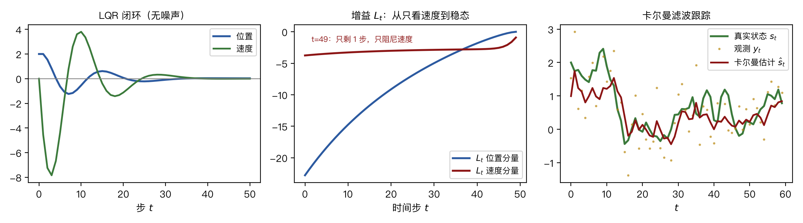
Full derivation, by induction（完整推导，归纳法）. Step 1 (Fact 1，归纳假设)：assume （基例 已是二次）。Step 2 (展开一步)：plug in :
最后等号用第 4 章的恒等式 。The noise term does not depend on ——这就是 Fact 3 的根。Step 3 (拼出 )：
Step 4 (对 求驻点)：:
对称正定（、 二者组合），可逆。Step 5 (回代)：配方 （ 负定，），峰值代回 :
仍为二次——归纳闭合。噪声只进 、策略只依赖 （Fact 3），且整条递推与 无关的部分可独立计算。
Typographical note（排印注记）：讲义原文中 与 两式的括号内符号有笔误（ 应为 ， 的 项应取正号）；其 递推式是正确的。一维验证（）：正确公式给 、、闭环 （稳定）；若按原文 公式算得 ，闭环 发散。上述正确形式也与标准教材的离散代数 Riccati 方程（DARE, discrete algebraic Riccati equation）一致。
【数学补充】 二次型求导：， 对称时 。分量证明一行：。凹二次型的最大值（配方）： 对称负定时
LQR 一步求 就是用它（）。 递推的稳态版本叫离散代数 Riccati 方程（DARE），无限时域 LQR 的增益就是它的解——15.4 的对照实验用的正是稳态 DARE。
import numpy as np
A = np.array([[1.0, 0.1], [0.0, 1.0]]) # 双积分器 (double integrator)
B = np.array([[0.0], [0.1]])
U = np.eye(2) # 代价 Σ (s^T U s + a^T W a) (quadratic cost)
W = np.array([[0.1]])
T = 50
def riccati(Sig): # 反向递推 (16.2) (backward recursion)
Phi = -U.copy(); Psi = 0.0
Ls = []
for t in range(T - 1, -1, -1):
M = W - B.T @ Phi @ B
Ls.append(np.linalg.solve(M, B.T @ Phi @ A).ravel())
Psi = float(np.trace(Sig @ Phi)) + Psi
Phi = A.T @ (Phi + Phi @ B @ np.linalg.solve(M, B.T @ Phi @ A) @ A) - U
Ls.reverse() # Ls[t] = L_t (gain at time t)
return np.array(Ls), Psi
Ls0, Psi0 = riccati(np.zeros((2, 2))) # Fact 3: 增益与噪声无关 (Fact 3: gains are noise-free)
Ls1, Psi1 = riccati(0.5 * np.eye(2))
print("L_{T-1}（只剩 1 步）=", np.round(Ls1[49], 4).ravel(),
" L_20 =", np.round(Ls1[20], 4).ravel(),
" L_0（50 步，稳态）=", np.round(Ls1[0], 4).ravel())
print("Fact 3: 两种噪声下增益最大差 =", float(np.abs(Ls0 - Ls1).max()))
print("Ψ(无噪) =", round(Psi0, 3), " Ψ(有噪) =", round(Psi1, 3), "（Ψ 依赖噪声）")
rng = np.random.default_rng(3)
def rollout(noise): # 闭环仿真 (closed-loop simulation)
s = np.array([2.0, 0.0]); tr = [s.copy()]
for t in range(T):
a = float(Ls1[t] @ s)
s = A @ s + B.ravel() * a + noise * rng.standard_normal(2)
tr.append(s.copy())
return np.array(tr)
tr0 = rollout(0.0)
tr1 = rollout(0.3)
print("无噪声闭环 ||s_T|| =", round(float(np.linalg.norm(tr0[-1])), 6))
print("有噪声闭环 ||s_T|| =", round(float(np.linalg.norm(tr1[-1])), 4),
"（同一增益，噪声只加方差）")L_{T-1}（只剩 1 步）= [ 0. -0.9091] L_20 = [-9.1294 -3.0148] L_0（50 步，稳态）= [-22.7902 -3.7564]
Fact 3: 两种噪声下增益最大差 = 0.0
Ψ(无噪) = 0.0 Ψ(有噪) = -704.683 （Ψ 依赖噪声）
无噪声闭环 ||s_T|| = 0.025869
有噪声闭环 ||s_T|| = 0.9031 （同一增益，噪声只加方差）真实系统很少线性：。讲义的问题：“Can we linearize this system?”（能把这个系统线性化吗？）——“It turns out that a lot of problems can be reduced to LQR, even if dynamics are non-linear”。LQR 的框架仍然能用，分两步：
Step 1：学线性模型 (learn a linear model)。讲义：“First, collect transitions from an arbitrary policy. Then, use linear regression to find . Finally, use a technique seen in Gaussian Discriminant Analysis to learn ”——沿轨迹收集 做线性回归 （ 是常数项）；残差协方差用第 9 章高斯判别分析（GDA）的思路拟合 。
Step 2：DDP（differential dynamic programming，微分动态规划）。讲义：“a method that applies when our system has to follow some trajectory (think about a rocket)”——在轨迹上迭代“线性化 + LQR”：
增广状态技巧 (augmented state trick)。讲义：“the constant term can be absorbed into by artificially increasing the dimension by one. This is the same trick that we used at the beginning of the class for linear regression…”——线性化后出现常数 ，标准 LQR 不收常数——把状态增广为 、，就回到标准形式。这与第 2、7 章给线性回归加截距是同一招。
学模型实测 (learned model in action)：拿 16.2 的带噪声闭环轨迹（50 个转移）回归学模型：
与真值 、 几乎一致；拟合 RMSE 噪声标准差 ——残差里只剩噪声，说明线性假设没有浪费任何信息。 English: the regression recovers the true dynamics almost exactly; the residual RMSE equals the noise level—no structure left unexplained.
走山路类比 (night-hiking analogy)：DDP 就像夜间走山路——每走一步，把脚下那一小段当平地算最优走法（线性化）；走过去发现地形和预想不同（非线性误差），就地在新的位置重新“把脚下当平地”再算（外层循环）。几轮下来，整条路走得相当好。 English: treat the ground under your feet as flat, plan, walk, discover the terrain differs, re-plan from the new spot—after a few rounds the whole route is good.
Multivariate Taylor expansion（多变量泰勒展开，讲义式 16.3）. . For vector-valued （讲义：“with gradients instead of simple derivatives”）: , rearranged as
增广验证：——正是我们要的“线性 + 常数”。奖励的泰勒（讲义 Note）：（ 是 Hessian 海塞矩阵，“ refers to the entry of the Hessian of with respect to and ”），交叉项与常数同样可用增广状态吸收 化归标准二次奖励 。
【数学补充】 雅可比矩阵 ：向量值函数的一阶偏导排布，（线性代数没教过的话：它是“导数”从数到向量/矩阵的自然推广， 的线性化就是 ）。海塞矩阵 ，对称。二者分别是“斜率”和“曲率”的矩阵版。DDP 的近亲模型预测控制（MPC）在火箭回收（SpaceX）等问题中用的正是“滚动时域 + 反复线性化”的同一思想。
# 接上一节: tr1 是带噪声(σ=0.3)的闭环轨迹, Ls1 是所用增益 (reuse the noisy trajectory from the previous section)
Xs = tr1[:-1] # 前 T 个状态 s_t (states s_t)
Xa = np.array([float(Ls1[t] @ s) for t, s in enumerate(tr1[:-1])]) # 所施动作 a_t (applied actions a_t)
X = np.column_stack([Xs[:, 0], Xs[:, 1], Xa, np.ones(len(Xs))]) # 特征 [x, v, a, 1] (features [x, v, a, 1])
Y = tr1[1:] # 目标 s_{t+1} (targets s_{t+1})
ABc = np.linalg.lstsq(X, Y, rcond=None)[0] # 每列对应一个输出分量 (one column per output component)
print("Â =", np.round(ABc[:2].T, 4).tolist(), " B̂ =", np.round(ABc[2], 4).tolist())
print("κ(常数项) =", np.round(ABc[3], 4).tolist())
rmse = float(np.sqrt(np.mean((X @ ABc - Y) ** 2)))
print("拟合 RMSE =", round(rmse, 4), " (噪声标准差 0.3, 线性模型几乎完美)")Â = [[0.9918, 0.0946], [0.0427, 1.0075]] B̂ = [-0.0031, 0.105] κ(常数项) = [0.0111, 0.0774] 拟合 RMSE = 0.2901 (噪声标准差 0.3, 线性模型几乎完美)
部分观测 (partial observability)。讲义：“Often, in the real world, we don’t get to observe the full state . For example, an autonomous car could receive an image from a camera, which is merely an observation”; “A POMDP is an MDP with an extra observation layer”（）；“the general strategy is to maintain a belief state（信念状态，distribution over states）based on the observations … a policy in a POMDP maps this belief states to actions”——你再也看不到确切的 ，只能维护信念：给定全部历史 后 的后验分布。
LQG（linear quadratic gaussian）。讲义设定：“we observe with such that ”（ “is a compression matrix and is the sensor noise”，also gaussian）；“the reward function is left unchanged, as a function of the state (not the observation)”；“as distributions are gaussian, the belief state is also going to be gaussian”——高斯信念经过线性动力学后仍是高斯，信念可用两个数（均值 、协方差 ）完整记录。讲义三步策略：step 1 “compute the distribution on the possible states (the belief state)”——“we’ll use the Kalman Filter algorithm (used on-board Apollo Lunar Module!)”；step 2 “use the mean as the best approximation for ”；step 3 “set the action where comes from the regular LQR algorithm”。为什么行得通：“notice that is a noisy approximation of (equivalent to adding more noise to LQR) but we proved that LQR is independent of the noise!”（分离定理的直觉：估计与控制完全解耦）。
预测（只信模型）：
更新（观测 到来，按“精度”加权融合）：
朴素对照。讲义：直接用高斯边缘公式（“see Factor Analysis notes”）算后验要“manipulating matrices of shape ”，“it would then have to be repeated over the time steps, yielding a cost in !”——“The Kalman filter algorithm provides a much better way of computing the mean and variance, by updating them over time in constant time in ”（卡尔曼滤波把全部历史压缩成一对定长的（均值，协方差）——对线性高斯系统它们是充分统计量，每步 ）。
一维跟踪实验 (1d tracking experiment)：、、状态噪声 、观测噪声 （观测很不可靠）。直接拿 当状态估计，RMSE ；卡尔曼估计 RMSE ——融合模型与观测，比任一单独信源都准。 English: the observation alone gives RMSE ; fusing model and observation via the Kalman filter gives —better than either source alone.
增益的行为 (behavior of the gain)： 从开局 一路衰减到稳态 。开局信念很不准（协方差大） 更信观测（ 大）；稳态后模型与观测的可靠度达到平衡 权重固定。数值核对：更新公式算出的后验均值与“高斯贝叶斯加权平均”完全一致（差 ）。 English: early on the belief is poor (large covariance) so the filter trusts the observation more ( large); at steady state model and sensor reach a balance and the weight freezes.
Gaussian conditioning（高斯条件分布，信念怎么算）. Joint Gaussian （分块 ）时，后验仍是高斯：
一维情形配方可完整推出：密度 是 的二次函数，展开配方得后验精度 （precision adds 精度相加）、后验均值 （按精度加权）。Plug into the filter（代入滤波）：预测后 、，套用上式：
——正是第 11 章因子分析后验公式的特例（讲义：“using the marginal formulas of gaussians (see Factor Analysis notes)”）。卡尔曼更新与高斯贝叶斯是同一件事的两种写法。
【数学补充】 充分统计量（sufficient statistic）：一个与样本同维数（或更低）的函数 ，使后验分布 ——信息一点不丢。线性高斯世界里（均值，协方差）就是历史的充分统计量，这是卡尔曼滤波能把“无限历史”装进“两个数”的根本原因。 的直观：（模型对观测的预测精度）与 （传感器精度）之比——谁的方差小信谁多一点。
import numpy as np
Aa, Cc = 0.9, 1.0 # 一维: s_{t+1}=A s_t + w, y_t = C s_t + v (1d dynamics + observation)
Sig_s, Sig_y = 0.1, 0.5
T = 60
rng = np.random.default_rng(4)
s_true = np.zeros(T); y = np.zeros(T)
s = 2.0
for t in range(T):
s_true[t] = s
y[t] = Cc * s + np.sqrt(Sig_y) * rng.standard_normal()
s = Aa * s + np.sqrt(Sig_s) * rng.standard_normal()
mp, Pp = Aa * 0.3, Aa ** 2 * 0.8 + Sig_s # 更新公式 == 高斯贝叶斯, 数值核对 (update formula == Gaussian Bayes: numerical check)
K1 = Pp * Cc / (Cc ** 2 * Pp + Sig_y)
m1 = mp + K1 * (0.5 - Cc * mp)
m2 = (mp / Pp + Cc * 0.5 / Sig_y) / (1 / Pp + Cc ** 2 / Sig_y)
print("更新公式 m1 =", round(m1, 8), " 贝叶斯公式 m2 =", round(m2, 8),
" 一致:", abs(m1 - m2) < 1e-12)
m, P = 0.0, 1.0 # 卡尔曼滤波主循环 (Kalman filter main loop)
ms = np.zeros(T); Ks = np.zeros(T)
for t in range(T):
mp_, Pp_ = Aa * m, Aa ** 2 * P + Sig_s # 预测 (predict)
K = Pp_ * Cc / (Cc ** 2 * Pp_ + Sig_y) # 增益 (Kalman gain)
m = mp_ + K * (y[t] - Cc * mp_) # 更新 (update)
P = (1 - K * Cc) * Pp_
ms[t] = m; Ks[t] = K
print("卡尔曼增益前 5 步:", np.round(Ks[:5], 4), "→ 稳态 K* =", round(Ks[-1], 4))
err_kf = float(np.sqrt(np.mean((ms - s_true) ** 2)))
err_raw = float(np.sqrt(np.mean((y - s_true) ** 2)))
print("KF 估计 RMSE =", round(err_kf, 4), " 直接用 y 的 RMSE =", round(err_raw, 4))更新公式 m1 = 0.40785256 贝叶斯公式 m2 = 0.40785256 一致: True 卡尔曼增益前 5 步: [0.6454 0.4195 0.3506 0.3261 0.317 ] → 稳态 K* = 0.3114 KF 估计 RMSE = 0.5006 直接用 y 的 RMSE = 0.6817
【最后一章：模型未知、连值函数都不学——直接对“期望回报”求梯度。REINFORCE 是今天 ChatGPT 对齐（RLHF/PPO）的直系祖先；而它的策略 就是一个神经网络——我们终于回到第 7 章的积木，并用它补上“学策略”这块最后的拼图。】
设定 (setup)：finite horizon（有限时域），轨迹 trajectory ；随机策略 randomized policy ——讲义原话：“REINFORCE only applies to learning a randomized policy”（必须是随机的：确定性策略下梯度无处可去）。优化目标是策略 的期望总回报 expected total payoff：
REINFORCE 的优势（讲义原话）：“we only need to assume that we can sample from the transition probabilities and can query the reward function , but we do not need to know the analytical form of the transition probabilities or the reward function”（只需会采样、会查奖励，不需要任何解析形式）。
困难：对 做梯度上升需要估计 ，但 含未知的转移核——“compute (or estimate) the gradient of without the knowledge of the form of the reward function and the transition probabilities”。
log-derivative trick（对数导数技巧）（式 17.3）：，于是
——右边只需要“能采样轨迹 + 能算总回报”，完全不需要知道分布本身。
轨迹概率分解（式 17.6）：。对 求对数后， 与 全部消失：
策略梯度估计器（式 17.8）：
蒙特卡洛实现：采 条轨迹取平均——讲义：“We estimate the RHS … by empirical sample trajectories, and the estimate is unbiased（无偏）”。
按结果发奖金 (Pay bonuses by outcome)：一条轨迹总回报 高 当天所有动作的 概率都往上调（不管单步好坏）； 低 全调低。单看一条轨迹是“连坐”的，但大量轨迹平均后，好动作被坏轨迹连累的部分与坏动作被好轨迹抬举的部分互相抵消，期望上只剩下“对回报的真正贡献”。 English: a high-payoff trajectory pushes up the log-probability of all its actions—good or bad alike—and a low-payoff one pushes them all down. Per trajectory this is “collective punishment”; averaged over many trajectories the cross-effects cancel and only each action’s true contribution to reward survives.
数值验证 (Numerical check)：两步 MDP（下一节代码会完整定义）： 走 到 ， 的 奖 ， 的 奖 。（均匀策略）处枚举 4 条等概率轨迹得精确梯度： 分量 、 分量 、 分量 。 English: enumerate the 4 equiprobable trajectories at for the exact gradient; the Monte-Carlo mean over trajectories—, , —matches up to sampling noise.
Derivation of (17.3)–(17.8)（推导，按讲义原文）.
Step 1 (differentiate under the expectation). “We start with the following derivation”: write the objective as an integral over trajectories, then swap integration with gradient and use that does not depend on ：
“(because does not depend on )”.
Step 2 (log-derivative trick 对数导数技巧). “because ”：
Step 3 (trajectory factorization 轨迹分解). “Using the definition of , we have” (式 17.6)：
于是 。讲义特别强调：“many of the terms disappear because they don’t depend on and thus have zero gradients. (This is somewhat important—we don’t know how to evaluate those terms such as because we don’t have access to the transition probabilities, but luckily those terms have zero gradients!)”
Step 4 (estimator). “Plugging the equation above into equation (17.4)” 即得估计器 (17.8)（见上）；“We estimate the RHS … by empirical sample trajectories, and the estimate is unbiased.”
Identity (17.9) 恒等式. “An interesting fact that follows from formula (17.3)”：取 （奖励恒为常数），则 (17.8) 左端 ，故右端也为零：
“In fact, one can verify that” “for any fixed and ”（讲义脚注 2：一般地 ）。直接证明一行：
——“随机动作的得分函数平均为零”。它本身不起眼，却是下一节一切基线推导的支点。
【数学补充】 Score function（得分函数）与 likelihood-ratio method（似然比方法）： 的名字叫 score function；整个估计器家族在仿真优化里称 likelihood-ratio method。与重参数化的对比（讲义引入 REINFORCE 前专门回顾了 VAE）：“We face a similar situation in the variational auto-encoder (VAE) setting … Recall that in VAE, we used the re-parametrization techniques to address this problem. However it does not apply here because we do not know how to compute the gradient of the function ”（重参数化要求能对目标本身求导；这里连 的解析形式都没有，只有采样。REINFORCE 只要求能采样，通用得多，代价是方差大）。“对随机目标的梯度”就这两条路线，选哪条取决于分布的形状。
两个改进，都不改变期望、只降方差：
改进 1：只用未来奖励（式 17.10）。 时刻的动作影响不了 之前的奖励——把 换成从 起算的折扣回报
交叉项的期望严格为零（推导见下），估计器更准。
改进 2：基线 baseline（基线）（式 17.11）。讲义原话：“for any value that only depends on ”，减去它期望不变：
因为 （用 17.9）。为什么有用：“The benefit of introducing a proper —which is often referred to as a baseline（基线）—is that it helps reduce the variance of the estimator.” 讲义指出近优选择是期望未来回报：“a near optimal estimator would be the expected future payoff , which is pretty much the same as the value function ”——高于平均的回报加强动作，低于平均的削弱；这就是 actor-critic 里 critic 的雏形。而且估计可以很粗糙：“one could estimate the value function in a crude way, because its precise value doesn’t influence the mean of the estimator but only the variance”（只影响方差、不影响均值）。
Algorithm 7 “Vanilla policy gradient with baseline”：① “Collect a set of trajectories by executing the current policy”，记 ；② 最小二乘拟合基线 “Fit the baseline by finding a function that minimizes” （式 17.12）；③ 更新 （式 17.13）。讲义脚注 4：“If we multiply in the summand of equation (17.13), then they will exactly match. Removing such discount factors empirically works well because it gives a large update.”（略去 只是步长变大，实践中反而有效。）
讲义脚注 3 的方差直觉：设未来回报以等概率取 与 ，对应 取 与 （由 (17.9)，两个方向必相反）。无基线时估计器在 量级上摆动；减去基线 后只剩 与 ——“The latter estimator has much lower variance compared to the original estimator”（期望没变，方差天壤之别）。
实验 (Experiment)（两步 MDP，代码见下）：用理想基线 （枚举可得）对比两个估计器：10 万条轨迹上，无基线估计均值 与有基线 都贴近精确梯度——无偏性双双成立 (both unbiased)；标准差 ，方差降为 。 English: both estimators match the exact gradient—unbiasedness holds with and without the baseline—while the std drops from 2.538 to 1.400 (variance down to 30.4%).
训练曲线 (Training curve)： 从 0 开始，batch = 50，300 轮： ， ， ；最优路径（ 再 ）的概率 。注意 学得慢——它的两个动作奖励 差距小、信号弱，方差缩减的收益在低信号状态上最能体现。 English: learns slowest because its two action rewards ( vs ) differ little—the signal is weak, which is exactly where variance reduction helps most.
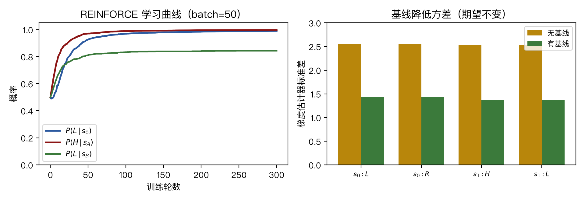
Eq. (17.10): past rewards drop out（过去奖励项期望为零）. 讲义原文的推导：交叉项
“(because )”——内层条件期望里 已知、过去奖励是常数，由 (17.9) 为零。讲义注：“Note that here we used the law of total expectation（全期望公式）. The outer expectation … is over the randomness of , whereas the inner expectation is over the randomness of ”。“We see that we’ve made the estimator slightly simpler.”
Eq. (17.11): baseline leaves the mean unchanged（基线不改变期望）. 同样用 (17.9) + 全期望公式：“for any value that only depends on , it holds that ”。与 (17.10) 合并，讲义得到带 权重的形式：
（Algorithm 7 把 略去了——脚注 4。）
Near-optimal baseline（近优基线）. “It turns out that a near optimal estimator would be the expected future payoff , which is pretty much the same as the value function (if we ignore the difference between finite and infinite horizon).” 并且 “one could estimate the value function in a crude way, because its precise value doesn’t influence the mean of the estimator but only the variance”——critic 允许粗糙。
【数学补充】 Control variate（控制变量法）：蒙特卡洛方差缩减的标准武器——要估 ，若能找到零期望的辅助变量 （），则 的期望不变而方差可降，选 使方差最小。基线正是 （(17.9) 保证零期望）与 的控制变量。Law of total expectation（全期望公式 / tower rule）：——“先按 分组，组内零期望，则整体零期望”，(17.10) 与 (17.11) 的证明全靠它。
import numpy as np
# 两步 MDP: s0 -L/R-> sA/sB, 每步拿奖励后结束 (two-step MDP: one action, then terminal)
sact = {"s0": ["L", "R"], "sA": ["H", "L"], "sB": ["H", "L"]}
nxt = {("s0", "L"): "sA", ("s0", "R"): "sB"}
rew = {("s0", "L"): 0.0, ("s0", "R"): 0.0,
("sA", "H"): 8.0, ("sA", "L"): 1.0,
("sB", "H"): 2.0, ("sB", "L"): 6.0}
def softmax(z):
e = np.exp(z - z.max())
return e / e.sum()
def grad_log_pi(s, a, th): # ∇θ log πθ(a|s) = 1{a} - π (softmax score function)
p = softmax(th)
g = -p.copy()
g[sact[s].index(a)] += 1.0
return g
trajs = [("s0", "L", "sA", "H"), ("s0", "L", "sA", "L"), # 枚举 4 条轨迹算精确梯度
("s0", "R", "sB", "H"), ("s0", "R", "sB", "L")]
th0 = {s: np.zeros(len(sact[s])) for s in sact}
grad_exact = {s: np.zeros(len(sact[s])) for s in sact}
for s0, a0, s1, a1 in trajs:
pr = 0.25
f = rew[(s0, a0)] + rew[(s1, a1)]
grad_exact[s0] += pr * grad_log_pi(s0, a0, th0[s0]) * f
grad_exact[s1] += pr * grad_log_pi(s1, a1, th0[s1]) * f
print("精确梯度 ∇η(0):", {s: np.round(g, 3).tolist() for s, g in grad_exact.items()})
Bx = {"s0": 4.25, "sA": 4.5, "sB": 4.0} # 理想基线 B(s)=E[G_t|s_t]
rng = np.random.default_rng(11)
N = 100000
acc0 = {s: np.zeros(len(sact[s])) for s in sact}
accb = {s: np.zeros(len(sact[s])) for s in sact}
v0, vb = [], []
for _ in range(N):
s0 = "s0"
a0 = sact[s0][int(rng.integers(2))]
s1 = nxt[(s0, a0)]
a1 = sact[s1][int(rng.integers(2))]
f = rew[(s0, a0)] + rew[(s1, a1)]
G0, G1 = f, rew[(s1, a1)] # G_0 从 t=0 累计, G_1 只含未来 (G_0 totals from t=0; G_1 is future-only)
g0 = grad_log_pi(s0, a0, th0[s0])
g1 = grad_log_pi(s1, a1, th0[s1])
est0 = np.concatenate([g0 * f, g1 * f]) # 式 (17.8): 全回报 (Eq. 17.8: full return)
estb = np.concatenate([g0 * (G0 - Bx[s0]), g1 * (G1 - Bx[s1])]) # 式 (17.11): 加基线 (Eq. 17.11: with baseline)
acc0[s0] += est0[:2]; acc0[s1] += est0[2:]
accb[s0] += estb[:2]; accb[s1] += estb[2:]
v0.append(est0); vb.append(estb)
mean0 = {s: acc0[s] / N for s in sact}
meanb = {s: accb[s] / N for s in sact}
print("无基线估计均值:", {s: np.round(mean0[s], 3).tolist() for s in sact})
print("有基线估计均值:", {s: np.round(meanb[s], 3).tolist() for s in sact})
v0 = np.array(v0); vb = np.array(vb)
print("估计器标准差(逐状态平均): 无基线", round(float(np.sqrt((v0.var(0)).mean())), 3),
" 有基线", round(float(np.sqrt((vb.var(0)).mean())), 3),
" 方差降为", round(float((vb.var(0)).mean() / (v0.var(0)).mean()), 3))
theta = {s: np.zeros(len(sact[s])) for s in sact} # 训练: REINFORCE with baseline
lr, n_iter, bs = 0.08, 300, 50
curve = []
rng = np.random.default_rng(12)
for it in range(n_iter + 1):
curve.append((softmax(theta["s0"])[0], softmax(theta["sA"])[0], softmax(theta["sB"])[1]))
if it == n_iter:
break
Gacc = {s: [] for s in sact}
eps = []
for _ in range(bs): # 采一批轨迹 (sample a batch of trajectories)
traj = []
s = "s0"
for t in range(2):
p = softmax(theta[s])
a = sact[s][int(rng.choice(len(sact[s]), p=p))]
traj.append((s, a))
s = nxt.get((s, a), "end")
r = [rew[sa] for sa in traj]
eps.append((traj, [r[0] + r[1], r[1]]))
Gacc[traj[0][0]].append(r[0] + r[1])
Gacc[traj[1][0]].append(r[1])
Bat = {s: (np.mean(Gacc[s]) if Gacc[s] else 0.0) for s in sact} # 最小二乘基线 (least-squares baseline)
upd = {s: np.zeros(len(sact[s])) for s in sact}
for traj, G in eps:
for t, (s, a) in enumerate(traj):
upd[s] += grad_log_pi(s, a, theta[s]) * (G[t] - Bat[s])
for s in sact:
theta[s] += lr * upd[s] / bs
curve = np.array(curve)
for i in [0, 100, 200, 300]:
print(f"第 {i:>3} 轮: P(L|s0)={curve[i,0]:.3f} P(H|sA)={curve[i,1]:.3f} "
f"P(L|sB)={curve[i,2]:.3f}")
p_opt = float(curve[-1, 0] * curve[-1, 1])
print("最优路径 (L→H) 概率 =", round(p_opt, 3))精确梯度 ∇η(0): {'s0': [0.125, -0.125], 'sA': [0.875, -0.875], 'sB': [-0.5, 0.5]}
无基线估计均值: {'s0': [0.117, -0.117], 'sA': [0.866, -0.866], 'sB': [-0.494, 0.494]}
有基线估计均值: {'s0': [0.124, -0.124], 'sA': [0.872, -0.872], 'sB': [-0.502, 0.502]}
估计器标准差(逐状态平均): 无基线 2.538 有基线 1.4 方差降为 0.304
第 0 轮: P(L|s0)=0.500 P(H|sA)=0.500 P(L|sB)=0.500
第 100 轮: P(L|s0)=0.969 P(H|sA)=0.989 P(L|sB)=0.833
第 200 轮: P(L|s0)=0.984 P(H|sA)=0.995 P(L|sB)=0.841
第 300 轮: P(L|s0)=0.990 P(H|sA)=0.997 P(L|sB)=0.844
最优路径 (L→H) 概率 = 0.987REINFORCE 的策略 长什么样？输入状态向量，输出各动作的概率——最后一层 softmax，前面是第 7 章的全连接层堆叠。而式 (17.8) 里需要的 ，恰好等于“把采到的动作当作类别标签、算一次 softmax 交叉熵”的反向传播结果。策略梯度在形式上就是“自造标签的监督学习”：标签由你自己的采样决定，权重由回报决定。
沿着这条线往前走一小步就是现代算法：把理想基线 换成学习的小网络（critic） actor-critic；对更新加裁剪防止单步走太远 PPO；把第 14 章的语言模型当作策略（动作 = 词表）、人类偏好当奖励 RLHF。ChatGPT 的训练配方 = 第 14 章（预训练 LM）+ 本章（策略梯度），用的积木全部来自第 7 章。
| 术语 | English | 含义 |
|---|---|---|
| 第 2–9 章 监督学习 | regression, classification, GD, kernels, SVM, GDA, naive Bayes | 给定 ，学映射；损失 + 梯度下降贯穿全书 |
| 第 10–14 章 无监督与自监督 | k-means, EM, FA, PCA, ICA, SimCLR, LM | 没有标签：找结构、学表示；ELBO 与极大似然是主线索 |
| 第 15–17 章 决策 | MDP, value/policy iteration, LQR, REINFORCE | 奖励替代标签：规划（已知模型）与试错（未知模型） |
按第 7 章的积木，一个最小可行的练习清单：
Bat 全取 0）重跑：哪个状态学得最慢、为什么（which state learns slowest, and why）？进度按用户名保存在本机浏览器中，可随时切换或导出。